前言、目录与引言
人工智能与机器学习赋能智能制造路线图 2026
摘要
人工智能（AI）与机器学习（ML）的发展正在重塑智能制造，通过为工业价值链各环节提供新的效率、适应性和自主性能力。然而，AI与ML在工业环境中的部署仍面临关键挑战，包括工业大数据的复杂性、有效的数据管理、与异构传感及控制系统的集成，以及在高风险工业环境中对可信、可解释和可靠运行的迫切需求。本路线图系统性地呈现了AI与ML在智能制造中的基础、应用及新兴方向。全文分为三个部分。第一部分着重阐述塑造智能制造AI发展轨迹的基础与趋势。第二部分聚焦AI已取得突破的关键主题，包括工业大数据分析、先进传感与感知、自主系统、增材制造与激光制造、数字孪生、机器人技术、供应链与物流优化，以及可持续制造。第三部分探索正在开辟新前沿的非传统机器学习方法，包括物理信息AI、生成式AI、语义AI、高级数字孪生、可解释AI、RAMS、数据中心计量学、大型语言模型以及面向高度连接和复杂制造系统的基础模型。通过识别这些领域中的机遇与剩余障碍，本路线图概述了方法、集成策略和工业采用所需取得的进展。我们希望本路线图能够为研究人员、工程师和从业者提供指引，加速创新进程，协调学术界与工业界的优先事项，并确保AI驱动的智能制造能够为未来制造生态系统带来可靠、可持续和可扩展的影响。
关键词： 人工智能；机器学习；智能制造；工业大数据；数字孪生；预测性维护；可解释人工智能；联邦学习；生成式人工智能；工业5.0
目录
智能制造AI与ML路线图
引言
第一部分 智能制造AI的基础与趋势
- 人工智能与机器学习在智能制造中的演变
- AI驱动的效率、适应性与自动化对未来制造的重要性
- AI在制造与价值链中的展望
第二部分 AI赋能智能制造的关键主题
- 面向智能制造的工业大数据分析优化
- 面向制造的先进传感、感知与分析
- AI赋能的自助制造
- 增材制造
- 激光制造中的机器学习
- 智能制造中的数字孪生
- 面向智能供应链与物流的AI
- AI增强的机器人与自主系统
- AI赋能的可可持续制造
第三部分 面向智能制造的非传统机器学习技术
- 面向制造的机器学习与深度学习
- 通过归纳偏置实现的物理信息机器学习
- 面向设计与制造的生成式AI
- 赋能制造中机器学习的语义框架
- 面向数字孪生赋能自助制造的基于物理的预测控制与实时决策
- 面向制造的可信AI
- 赋能智能制造中的依赖性：RAMS与AI/ML集成
- 面向未来制造的数据中心计量学
- 面向高度连接和复杂制造系统的非传统机器学习
引言
Hanqi Su¹与Jay Lee¹
¹ 马里兰大学机械工程系工业人工智能中心，美国马里兰州大学公园，20742
电子邮件：hanqisu@umd.edu
智能制造的发展可追溯至过去六十余年的若干阶段。如图1所示
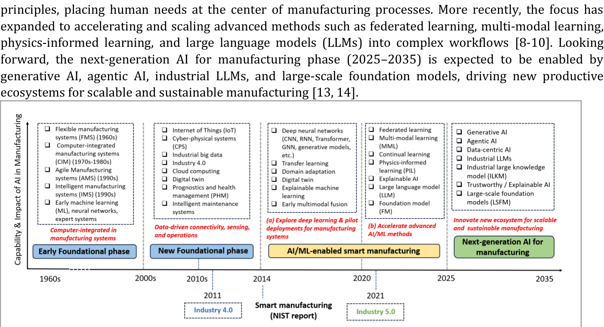
，其经历了五个阶段：早期基础阶段（1960年代–2000年代）、新基础阶段（2000年代–2010年代）、AI/ML赋能智能制造的兴起（2014–2025年），以及迈向下一代AI的未来制造（2025–2035年）。
20世纪60年代中期，柔性制造系统（FMS）的概念被提出，旨在实现能够适应不同产品的自动化加工，首批实际应用出现在1960年代末。1970年代至1980年代，数字技术的进步催生了计算机集成制造系统（CIMS），强调CAD、CAM、机器人技术与企业系统的集成，以实现端到端的生产管理。1990年代初期，敏捷制造系统（AMS）的概念兴起，专注于在全球化格局和快速变化的客户需求面前的响应能力与适应性。大约在同一时期，智能制造系统（IMS）成为一个正式的国际研究计划。IMS计划于1990–1991年启动，是由日本、欧盟、美国以及后来其他国家的协作倡议，由国际IMS指导委员会等机构协调，并得到各国政府和产业的支持。其目标是通過全球合作开发智能化的、分布式的和自适应的制造系统。这些里程碑共同奠定了早期基础阶段，将自动化和集成确立为现代制造的基准。
随着2000年代和2010年代数字基础设施的兴起，新基础阶段由数据驱动的连接、传感与运营方面的进步所塑造。物联网（IoT）、网络物理系统（CPS）、云计算、工业大数据分析、预测与健康管理（PHM）及数字孪生等技术的引入，加速了设计、生产、检测和供应链系统的数字化和自动化集成[1-4]。这些进步为工业4.0奠定了基础，将传统生产转变为以数字化、自动化和智能化为特征的模式[5,6]。
自2014年起，AI/ML赋能的智能制造成为核心主题。智能制造作为现代制造的基石，美国国家标准与技术研究院（NIST）将其定义为"完全集成的协作制造系统，能够实时响应工厂、供应链和客户需求的变化"[7]。这一阶段始于深度学习（深度神经网络）、迁移学习、可解释ML及早期多模态融合在解决特定制造任务和试点部署中的应用[8-10]。在工业4.0的基础上，2021年提出了工业5.0，其愿景强调以人为中心、可持续性和韧性[11]。工业4.0专注于数字化和自动化以提高效率[6]，而工业5.0则强调人与智能机器的协作、支持可持续生产的循环经济原则，以及确保在干扰下具备适应性的韧性系统[12]。在此阶段，AI和ML方法正越来越多地应用于强化这些原则，将人类需求置于制造过程的中心。最近，重点已扩展至将联邦学习、多模态学习、物理信息学习和大型语言模型（LLM）等先进方法加速扩展到复杂工作流程中[8-10]。展望未来，下一代AI for Manufacturing阶段（2025–2035年）预计将由生成式AI、AI Agent、工业LLM和大型基础模型驱动，为可扩展和可持续的制造创造新的生产生态系统[13,14]。
近年来，AI和ML已成为应用于智能制造许多方面的基础技术[10,15,16]。一方面，在工业大数据时代，随着数据日益可得和分析需求不断增长，AI和ML技术能够高效处理来自设备、传感器网络和供应链的大规模数据流。这些方法支持从复杂数据集中提取可操作的洞察，并帮助制造商及时进行智能决策。另一方面，AI和ML的集成显著推进了制造过程的自动化。此前，质量控制、产品检验、设备维护和生产调度等任务严重依赖人工干预；而现在，这些任务可以由智能算法处理。这种转变减轻了人类工作负担，提高了准确性、一致性和运营效率。此外，随着对定制化和个性化产品需求的增长，AI和ML模型可以促进消费者偏好分析，并实现生产线的动态调整。因此，制造商可以缩短上市时间（TTM）并提高整体市场响应能力。此外，智能制造的另一项重大进展是从反应性维护向预测性维护的转变。传统制造依赖定期维护和人工检查来防止设备故障；相比之下，基于AI和ML技术的预测性维护和故障诊断可以在退化或异常行为的早期迹象时进行检测，并在故障发生前提供及时警报。通过利用数据驱动的预测和分类方法，制造企业可以减少突然停机和生产中断，从而降低维护成本。
尽管AI和ML为智能制造带来了巨大潜力，但当前AI和ML能力与现代制造系统实际需求之间仍存在显著差距。最关键的挑战之一是数据质量。工业数据通常充满噪声、不完整或呈现不一致的格式，在实践中往往难以使用。这些问题阻碍了AI和ML模型的有效训练，并损害了其预测的可靠性[17]。另一个限制是许多AI模型缺乏可解释性。虽然深度神经网络等黑盒模型可以达到强劲性能，但其内部决策过程往往不透明。这使得工程师和从业者难以完全理解或信任AI模型的输出，特别是在高风险的工业应用中[18]。此外，许多制造过程受到复杂物理原理的支配，这些原理难以用纯数据驱动的模型来表示。传统方法通常难以将这些复杂物理定律有效地整合到AI和ML模型中[19]。此外，在一个机器、生产线或工厂的数据上训练的AI和ML模型，当应用于不同领域时往往表现不佳，这是由于分布偏移和目标领域标记数据的有限可用性。这一挑战通常被称为域适应[20]。最后，尽管理想环境中AI模型通常表现出色，但其在现实生产环境中的部署仍面临挑战，包括系统集成复杂性、实时性能要求，以及跨多个工厂和分布式供应链的可扩展性。
鉴于AI和ML在转变现代制造中日益增长的重要性，本智能制造人工智能与机器学习路线图的目标是提供不同研究领域和技术发展的概述，以推动智能制造的进展（如图2所示）。它概述了下一代制造业的机会、挑战和技术进步。路线图分为三个主要部分：
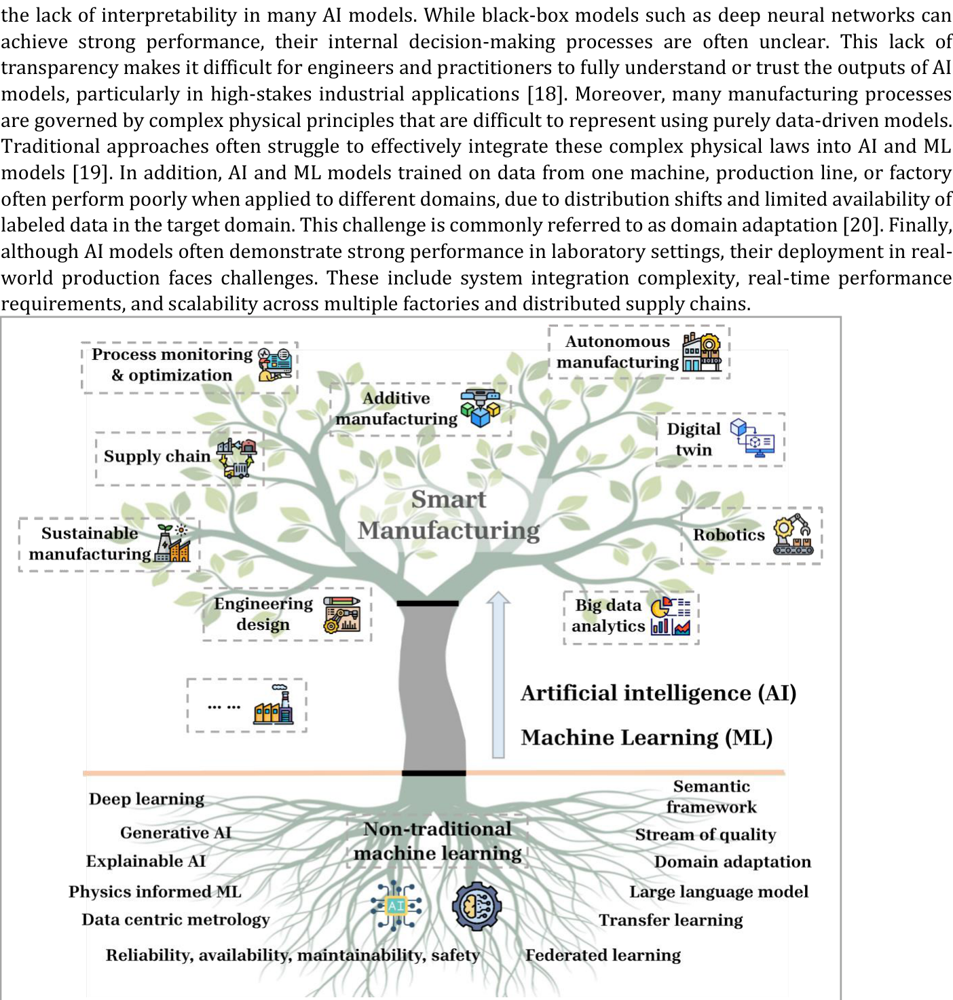
-
智能制造AI的基础与趋势：本部分回顾了AI和ML在制造中的演变，强调它们在提高未来制造的效率、适应性和自动化方面日益重要的作用。它还讨论了AI技术的展望及其改变制造业和价值链的潜力。
-
AI赋能智能制造的关键主题：本部分聚焦AI和ML在智能制造中的主要应用领域。涵盖工业大数据分析、自主制造、增材制造、过程监测与优化、数字孪生、工程设计、智能供应链与物流、可持续与绿色制造，以及AI增强机器人等主题。
-
面向智能制造的非传统机器学习技术：本部分讨论了新兴的非传统机器学习范式及其与智能制造的相关性。涵盖的主题包括深度学习、生成式AI、物理信息ML、语义框架，以及可信和可解释AI。它还强调了AI赋能系统中数据中心计量学、可靠性、可用性、可维护性和安全性（RAMS）的发展，以及大型语言模型、工业大型知识模型、域适应、迁移学习、质量流分析和联邦学习的进展。
我们希望本路线图为推进智能制造中的AI和ML提供一个全面的视角和长期战略基础。每篇文章都由各自领域的顶尖研究人员撰写，呈现了该领域的当前状态，识别了关键挑战，概述了解决这些挑战所需的科学和技术进展，并提出了未来展望。最后，我们鼓励更广泛的学术界从业者、产业界实践者、资助机构和政策制定者之间的合作，共同塑造制造业的未来。
致谢
本工作由美国教育部通过改善中学后教育基金（FIPSE）资助，资助编号为P116S230014。
参考文献
[1] Hu Y, Jia Q, Yao Y, Lee Y, Lee M, Wang C et al. 2024 Industrial internet of things intelligence empowering smart manufacturing: a literature review IEEE Internet Things J. 11 19143–67 (doi: 10.1109/JIOT.2024.3367692)
[2] Lee J, Bagheri B and Kao H-A 2015 A cyber-physical systems architecture for Industry 4.0-based manufacturing systems Manuf. Lett. 3 18–23 (doi: 10.1016/j.mfglet.2014.12.001)
[3] Su H and Lee J 2024 Machine learning approaches for diagnostics and prognostics of industrial systems using open source data from PHM data challenges: a review Int. J. Progn. Health Manag. 15 (2) (doi: 10.36001/ijphm.2024.v15i2.3993)
[4] Tao F, Zhang H, Liu A and Nee A Y C 2019 Digital twin in industry: state-of-the-art IEEE Trans. Ind. Inform. 15 2405–15 (doi: 10.1109/TII.2018.2873186)
[5] Lasi H, Fettke P, Kemper H-G, Feld T and Hoffmann M 2014 Industry 4.0 Bus. Inf. Syst. Eng. 6 239–42 (doi: 10.1007/s12599-014-0334-4)
[6] Zheng P, Wang H, Sang Z, Zhong R Y, Liu Y, Liu C et al. 2018 Smart manufacturing systems for Industry 4.0: conceptual framework, scenarios, and future perspectives Front. Mech. Eng. 13 137–50 (doi: 10.1007/s11465-018-0499-5)
[7] NIST 2014 Smart Manufacturing Operations Planning and Control Program [Internet] Natl. Inst. Stand. Technol. Available from: https://www.nist.gov/programs-projects/smart-manufacturing-operations-planning-and-control-program
[8] Sahoo S and Lo C-Y 2022 Smart manufacturing powered by recent technological advancements: a review J. Manuf. Syst. 64 236–50 (doi: 10.1016/j.jmsy.2022.06.008)
[9] Phuyal S, Bista D and Bista R 2020 Challenges, opportunities and future directions of smart manufacturing: a state-of-the-art review Sustain. Futures 2 100023 (doi: 10.1016/j.sftr.2020.100023)
[10] Lee J and Su H 2025 Rethinking industrial artificial intelligence: a unified foundation framework Int. J. AI Mater. Des. 2 (2):56-68. (doi: 10.36922/ijamd025080006)
[11] Zhang C, Wang Z, Zhou G, Chang F, Ma D, Jing Y et al. 2023 Towards new-generation human-centric smart manufacturing in Industry 5.0: a systematic review Adv. Eng. Inform. 57 102121 (doi: 10.1016/aei.2023.102121)
[12] Xu X, Lu Y, Vogel-Heuser B and Wang L 2021 Industry 4.0 and Industry 5.0—inception, conception and perception J. Manuf. Syst. 61 530–5 (doi: 10.1016/j.jmsy.2021.10.006)
智能制造中人工智能的基础与趋势
第一章：智能制造中人工智能的基础与趋势
人工智能与机器学习在智能制造中的演进
Marco Macchi¹, Adalberto Polenghi¹
¹ 米兰理工大学（Politecnico di Milano）管理、经济与工业工程系
通讯作者：marco.macchi@polimi.it, adalberto.polenghi@polimi.it
现状
当前，各类前沿技术的进步以及工业环境中涌现的转型机遇，使得人工智能（AI）在工业过程中的应用已跃升至研究议程的首要位置。一个新术语——"工业人工智能"（Industrial AI）——近来被正式提出[1,2]，旨在强调以AI为技术基石、以数据和算法为支撑、以软件和硬件组件为依托，将AI引入工业系统、实现具有可持续性能的规模化应用，已成为当务之急[3]。
众所周知，AI并非唯一的驱动力量。这一推进力量正在引领向智能制造所描绘的新范式转型[4,5]。这一转型由工业物联网（IIoT）、虚拟制造、工业人工智能及其他使能技术所支撑。云边融合架构最终为物理空间与虚拟空间在计算智能部署中的接近提供了支持[6]。
从更广泛的视角来看，物理-数字融合是一项长期性发展，其推动力来自网络物理系统（CPS）的采用，但不止于此。它是多技术融合发展的结果——涉及计算机科学、信息与通信技术（ICT）、制造科学技术——最终促成了物理世界与虚拟世界的交汇[7,8]。作为聚合影响，网络物理融合问题需要被加以解决，而工业人工智能正是这一问题不可或缺的组成部分。
就虚拟空间而言，在未来数年内甚至可以预见一种协同发展：AI将成为制造领域中实体与系统数字孪生（Digital Twins）的关键组成部分——凭借其挖掘隐藏模式、建立关联、并对未来行为进行预测与优化的能力[9,10]。由此，可以预见一个演进方向：在工业元宇宙（IM）中，借助IIoT、区块链及增强/虚拟现实（A/VR）等先进技术，将构建出一个能够与物理空间无缝交互的沉浸式虚拟空间，促进人类在高级协同制造[11,12]中的互动——其中人-X协作（Human-To-X collaboration）居于核心地位。
在这一演进趋势中，AI将发挥关键作用——既作用于工业过程，也作用于决策循环中的人机关系[13]。它将支持知识表示、机器/深度学习、推理与最优化问题求解，从而整合数字孪生与工业元宇宙核心的高级建模与仿真技术。
当前与未来的挑战
当前AI/ML所面临的挑战需经过长期努力方能解决，以确保研发活动能够提供工业就绪的解决方案，实现AI与机器学习（ML）在智能制造中的大规模应用。AI在智能制造中的整合并非易事：需要技术和概念层面的同步发展，以使这些解决方案真正有效且可扩展，从而令企业能够加以利用，实现可持续的性能提升。
经由研究与工业实践的有机融合所识别出的、适时且相关的挑战概括如下：
-
数据驱动方法的采纳率在制造企业中较为有限。 工业过程知识的积累至关重要，必须对数据驱动方法形成补充。事实上，领域专业知识对于快速培育新产品、新工艺和新设备的制造过程及设备相关的全新任务能力不可或缺[14]。
-
AI与ML主要局限于对局部、有限范围内的漂移和异常做出反应[15]，但AI与ML需要扩展至处理复杂系统，在全局范围内预测和优化其行为，并应能应对更高的响应能力，以适应新产品、新设备、新技术和新工艺所带来的变化。
-
大多数AI研发聚焦于模型/解决方案的技术性能，却未触及解决方案如何嵌入复杂的社会技术环境这一核心问题——例如制造车间正是这样的环境，唯有跨学科方法才能发挥作用。然而，迄今为止的AI前沿表明，拥抱这一新研究范式的AI驱动解决方案案例极为稀少[16]。
-
制造系统的认知适应——即基于系统输入和触发信号进行自主执行的能力——在当前仍是前瞻性研究课题。 它要求收集并处理与系统及其上下文相关的数据，并进行恰当的处理，从而使数字孪生——以及更广泛地说——AI驱动的解决方案，能够充当代理者（agent），而非仅为人类决策和行动提供信息的系统[17]。
解决这些挑战，将开启与机器、人类和AI交互方式相关的新未来。物理-数字融合将催生"阴影车间"——其中"真实"融合了物理输入与虚拟输入——而工业元宇宙将成为制造企业从设计到制造系统管理所应采用的新方式。
应对挑战的科技进展
人工智能与机器学习有望增强制造系统的数字孪生。这将形成协同效应，使决策智能向更高层次的适应性、智能和认知特征演进[17]。为支持这一发展，由AI驱动的制造系统数字孪生将通过以下能力得到丰富：采用人类操作员行为模型；人类与AI/机器学习模型之间的持续双向学习；虚拟世界与现实世界之间的人类体验；以及物理系统与人类决策者之间日益增强的认知协作以实现决策的提升[17,18]。
在这一路径上，技术进步正急剧提升制造运营的能力提升。关于AI与ML，当下的热潮聚焦于无代码AI和氛围编程（vibe-coding），它们使高级解决方案的开发变得更加便捷；然而有必要强调，工业级和企业级AI应用需要大量的计算机工程和ICT专业知识。AI本身在可解释性能力方面正在获得增强，以更好地与人互动——不仅提供结果，而且解释为何得出该结果。最后，大语言模型（LLM）及副驾驶系统，以及其底层的基础模型，正在彻底重塑人机交互的方式，带来全新形式的人机界面（HMI）和仪表板——对于人类决策者而言更为自然；倘若再辅以沉浸式XR（扩展现实）技术，这一交互模式将更为高效，向实现完整的工业元宇宙迈进。
除了技术增长之外，新的进展还涉及框架与理论——首先要评估，然后在制造组织内引入和推广AI驱动的数字孪生，并将人类决策者视为核心参与者[19]。因此，系统工程和基于模型的系统工程（MBSE）等方法对于概念化AI驱动的数字孪生与其他技术以及人、非人代理之间的关系至关重要。此外，系统可用性理论（SUT）或技术接受与使用统一理论（UTAUT）等理论必须在AI工程和部署的范畴内加以考虑和管控。为此，建议研究者和实践者协同工作：首先在用例中定义解决方案，然后从业务/经济、运营绩效和人类行为的角度检验其适应性[20]。
未来的愿景如图1所示。为实现这一愿景，制造企业遵循一条通向智能制造的路径，从现有的制造工厂和系统出发。AI是决策智能进步的关键支柱，被整合到一个由不同技术栈组合而成的演进平台中——这些技术栈既包括遗留IT系统和制造设备，也包括新设备和工具——也包括旨在支持人类在IT/OT系统中工作的那些工具。因此，物理-数字融合在工业元宇宙中被设想为一种自然趋势——源于IIoT，并经由机器、人类和制造系统及其XR扩展的数字孪生的发展而演进。在这一框架中，AI在感知、学习、预测、交互、适应、推理和创造力方面发挥着关键的智能作用。
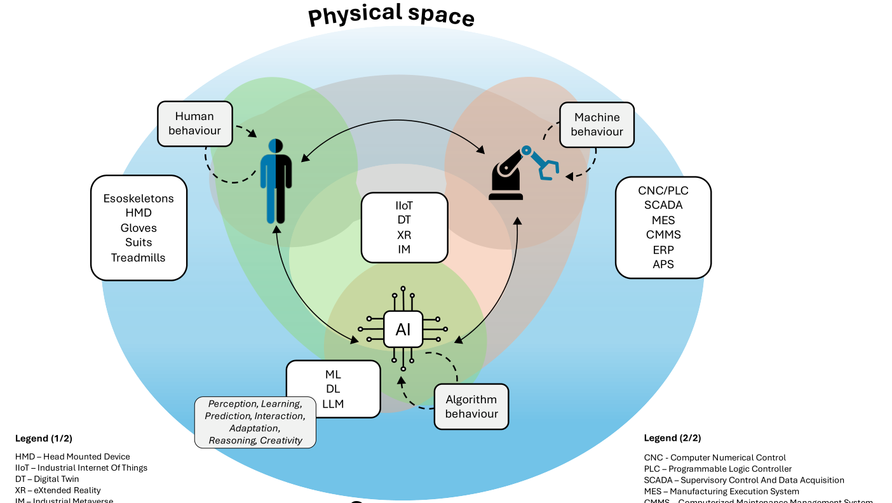
本图展示了智能制造系统的演进路径，从现有制造工厂出发，经由IIoT和数字孪生，最终实现工业元宇宙愿景。
结语
AI渗透制造企业的方式正在持续演进，尤其受到技术进步的推动。AI驱动的数字孪生现已成为制造领域可预见的现实，并将支持从操作员到工程师和管理者的各类人类主体，在产品和制造系统的设计、生产和维护中发挥作用。目前大多数开发是单向的——从AI到人——但要让AI成为制造中的关键组成部分，适应性是必要的关键能力——寻求能够管理和应对非平凡的、依赖上下文的事件的自主系统。因此，AI解决方案成为人类可以与之交互的关键资源——相互告知以增强和强化决策能力。可以预见的是，当前AI前沿必须向前推进——颠覆当前的人机AI通信方式，迈向物理世界与虚拟世界在工业元宇宙概念中的无缝融合为此，需要一系列技术的融合——从IIoT到XR。基于LLM的新型HMI将成为新的规范，而具有多样化能力的AI代理将成为基于CPS的智能工厂中的参与者——人类可以在其间与机器及具有自身学习能力的无形解决方案平等互动——形成多种形式的人-X协作。这将使协作达到工业工程的新前沿——但前提是必须以人类为中心的方法论进行最佳开发和编排，将人置于循环之中，并将传统工程绩效评估与习得性、可用性和人体工程学等方面相结合。
致谢
本研究为HumanTech项目的一部分，由意大利大学与研究部（MUR）于2023-2027年间资助，作为部级"卓越系所"倡议的一部分（L. 232/2016）。该倡议表彰在所产出的研究质量方面表现突出的系所，并资助特定的发展项目。
AI驱动的效率、适应性与自动化对未来制造的重要性
Wei Wu¹, Zhiheng Zhao¹, George Q. Huang¹
¹ 香港理工大学工业与系统工程学系，香港 999077，中华人民共和国
通讯作者：gq.huang@polyu.edu.hk
现状
由工业5.0所塑造的制造未来强调创建一个更加以人为本、富有韧性和可持续的制造生态系统，能够实现大规模个性化定制[1]。在这一转型过程中，AI不可或缺——从根本上提升效率、适应性和自动化，贯穿各层级设施。在本语境中，效率描述的是优化生产流程以在最大化产出的同时最小化资源消耗和运营周期的能力。AI有助于确保人员、机器和物料在正确的时间、正确的地点协同运作，将效率损失降至最低[2]。适应性表示无缝适应动态环境的能力——包括波动的市场需求和不可预见的 disruptions。由AI增强的网络物理可见性和可追溯性使制造商能够识别 disruptions、做出数据驱动的决策，并迅速调整流程以满足不断变化的需求[3]。自动化涉及以最少的人工干预对重复性或复杂性任务进行自主管理和执行。机器人技术、物联网（IoT）与AI技术的融合使个人或系统能够进行准确、有效和一致的决策，同时具备自我学习和自我优化能力[4]。在竞争激烈的全球市场中，AI的采用对于保持竞争优势和实现可持续发展目标至关重要。
AI技术现已广泛应用于制造业[5]（图1）。例如，预测性维护[6]利用AI分析传感器数据并预测设备故障，从而减少停机时间和维护成本。AI驱动的实时调度与执行[7]——以无缝网络物理同步为支撑——增强了生产对运营不确定性和动态变化的稳健性。通过AI驱动的机器人系统实现制造任务自动化[8]持续提升生产力并简化工作流程。此外，AI在通过改进需求预测和库存管理优化供应链[9]方面发挥着关键作用。生成式设计工具[10]利用AI基于历史原型探索广泛的设计可能性。这些多样化应用正汇聚融合，朝着实现"智能工厂"的方向发展——确保高度自动化、高效和自适应化的生产环境。
AI的进一步发展有望对制造业产生更深远的影响。我们可以预期制造过程将实现更高层次的自主性。增强的人机协作将使AI增强人类能力，使工人能够专注于更复杂、更有创造性和更具战略性的任务。大规模个性化定制和高度灵活的生产系统的提供能力将日益普及，使制造商能够快速响应不断变化的市场需求和个体客户偏好。特别是生成式AI的持续发展有望推动整个制造领域的进一步创新和变革性变化。
当前与未来的挑战
尽管AI在制造业中具有前所未有的潜力，但其广泛而有效的实施仍受到重大挑战的阻碍。首要障碍在于数据相关问题[11]。AI系统的有效性高度依赖于获取大量高质量、一致且准确标注的数据。然而，许多制造企业仍在与过时的遗留系统、普遍存在的数据孤岛以及缺乏整合的数据治理作斗争。这些局限往往导致数据集存在噪声、不完整或缺乏充分上下文的问题，需要耗费大量人力和成本进行预处理。此外，保障数据安全和隐私是首要关切[12]，尤其是在分布式AI模型日益增多的背景下。保护敏感的制造数据和知识产权免受网络威胁仍然是关键挑战。
集成复杂性是另一个重大障碍[13]。现代制造环境以异构技术格局为特征——先进信息系统与老旧遗留设备共存，而后者往往缺乏标准化通信协议或数字接口。将AI解决方案集成到这种差异化基础设施中，在技术上极为复杂且运营上具有破坏性。此外，AI平台与现成系统（如制造执行系统（MES）或企业资源计划（ERP））之间缺乏互操作性，进一步复杂化了无缝部署。这需要大量的基础设施升级，从而增加成本和时间。
同样关键的是围绕AI系统的安全性、可靠性和可信赖性的关切[14]。在安全关键应用中，确保AI驱动决策的公平性、透明度和问责制至关重要。使用有偏见或不具代表性的训练数据集训练AI模型可能会强化现有不公平现象并产生扭曲的运营结果，从而可能损害流程效率。此外，许多先进AI算法的内在不透明性——即所谓的"黑箱"问题——在验证、调试和在人机操作员之间建立信任方面带来了显著困难。加强这些系统对抗对抗性攻击和不可预测变化的稳健性，对于维持长期可靠运营至关重要。
展望未来，未来的挑战将突出体现在确保AI解决方案在多样且不断发展的制造环境中可扩展性和灵活性[15]的需求上。向全行业部署的转型需要有效的AI运营框架，能够容纳不断增长的数据量和日益增长的模型复杂性。此外，AI系统必须展示对变化的生产需求、重新配置制造单元或启动新产品线的增强适应性。应对这些挑战对于释放AI在全球范围内革新制造系统的全部潜力至关重要。
应对挑战的科技进展
多种前沿技术正在涌现和发展，以克服阻碍AI在制造业扩展的挑战，包括数字孪生（DT）、分层计算和区块链（图1）。这些技术有望促进有效集成、提高可靠性并实现可扩展部署。
DT技术[16]为解决集成复杂性和确保可靠的AI性能提供了坚实的解决方案。通过在网络空间创建物理资产、过程和系统的相同副本，DT能够对制造运营进行实时监控、仿真和优化。这些虚拟模型不仅可以促进遗留系统与AI驱动平台之间的无缝同步，而且能够以生成方式增强大量高质量数据，从而显著提高模型准确性和一致性。此外，DT通过提供可见的沙箱环境用于验证AI算法并减少决策延迟，增强了透明度和信任。
云-雾-边-端计算架构[17]建立了AI部署的可扩展性和灵活性。通过在云、雾、边和端设备之间分配计算资源，可以实现更接近数据生成源的高效数据处理，从而提高资源利用率和响应速度。这种架构在动态生产环境中产生实时决策能力，并确保AI系统能够跨地理分布的设施扩展，同时保持运营效率。边缘计算尤其通过在本地处理敏感信息来增强数据隐私和安全性，降低与集中式数据存储相关的风险。
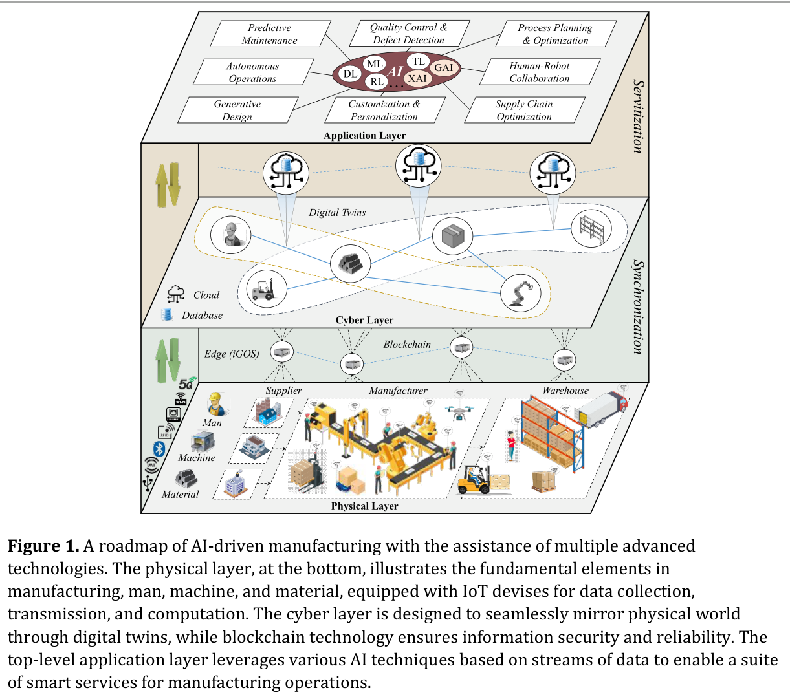
区块链技术[18]提供了一个去中心化和不可变的框架，以增强制造环境中的数据安全性、可追溯性和信任。通过在利益相关者之间实现安全且防篡改的数据共享，区块链降低了数据泄露风险并确保符合相关法规。智能合约可以自动执行访问策略并触发作业序列，加强数据溯源与运营控制之间的耦合。此外，区块链可以改善云-雾-边-端计算系统的连接性和可追溯性，从而加强AI安全性。
最后，生成式AI（GAI）[19]和可解释AI（XAI）[20]的进展将通过激发创造力、建立信任和优化流程重塑制造业。GAI专注于基于从历史数据学习的潜在表示创建新的原创内容。在工业环境中，在多模态语料库上训练的基础模型可以加速领域适应并提供人类可读的指令。同时，XAI旨在使AI系统决策和输出对人类透明和可理解。通过解决许多AI模型固有的黑箱问题，XAI促进了人机协作，同时增强了安全性与可靠性。这些技术共同描绘了一条通向强大、可扩展且可信赖的面向未来的AI制造的可信路径。
结语
总之，制造业的未来与AI的进步深度交织。AI是实现更高效率、适应性和自动化水平的基石——这是培育具有竞争力、可持续和以人为本的工业生态系统所不可或缺的。虽然在制造业中部署AI已取得重大进展，但若干关键挑战依然存在——包括数据质量、系统集成复杂性以及构建可信赖和可靠AI系统的迫切需求。数字孪生、分层计算和区块链等新兴技术为应对这些挑战提供了有前景的途径——通过增强网络物理可追溯性和可见性、模型可靠性、流程安全性和系统灵活性。充分利用这些创新提供了克服现有局限和充分实现AI在制造业中变革潜力的手段。此外，GAI和XAI有望进一步加速创新并重新定义制造范式。这一轨迹将为智能工厂铺平道路——不仅高度高效和富有韧性，而且能够实现大规模个性化定制——从而在全球市场中获得竞争优势，并推动下一波工业演进。
致谢
本研究部分受香港研究资助局策略主题研究项目（T32-707/22-N）、合作研究基金（C7076-22GF）、研究影响基金（R7036-22）和创新及科技基金（PRP/007/25LI）资助。
人工智能在制造业与价值链中的展望
Kiva Allgood¹, Devendra Jain¹, Benedikt Gieger¹
¹ 世界经济论坛先进制造与供应链中心，瑞士科洛尼/日内瓦
通讯作者：kiva.allgood@weforum.org
现状
AI已从一项有前景的技术演变为一种变革性力量，从根本上重塑着全球制造业与价值链。过去十年间，AI及其应用在数据可用性、算法和计算能力的推动下日臻成熟。因此，制造商日益认识到AI在规模化部署时驱动效率、可持续性和韧性方面阶跃式改进的潜力。世界经济论坛的全球灯塔网络（Global Lighthouse Network）——一个先进制造基地社区——正是此类AI驱动改进的有力例证。
AI的早期用例聚焦于预测性维护和质量控制。如今，AI的整合已覆盖完整价值链：需求感知、供应规划、自动化内部物流、能源优化和动态调度。值得注意的是，当前的大部分影响仍然来自传统AI模型——这些模型持续驱动着显著收益，往往在转换成本、周期时间和缺陷率方面超过50%的改进[2]。重要的是，AI不再是一项孤立技术；它正在嵌入各类适合特定目的的智能系统中——这些系统是数字化的、自适应的或自主的。
与此同时，整个制造业面临着前所未有的多重压力叠加：劳动力短缺、气候挑战、地缘政治紧张局势和可持续性要求[3]。AI有潜力填补生产力差距和人口挑战、本地化生产并使工业运营脱碳。AI驱动的仿真、自我学习智能体和混合人机协作模型的进步，有望重新定义产品的设计、制造和运输方式[4]。
尽管取得进展，但这段旅程远未完成。当一些企业正向全面部署迈进时，许多企业仍困于孤立的试点——受制于碎片化的数据生态、遗留基础设施、人才短缺或战略错位。弥合这一差距需要可扩展的数字解决方案、可持续性与韧性框架、强有力的数据管理以及劳动力能力的转变[5]。
展望未来，焦点必须从实验转向规模化影响。对于制造商而言，这包括沿着AI融入工业系统的演进轨迹定位自身。这一旅程通常经历三个递进阶段：数字化、自适应和自主。在数字化阶段，企业专注于构建基础能力，如互联数据基础设施、实时可见性和流程自动化。在自适应阶段，AI被用于情景仿真、预测性洞察和动态决策，使企业能够响应变化的市场条件。自主阶段标志着自我优化、自我修复运营的出现——例如AI代理以最少人工干预管理复杂网络[6]。在制造商沿此轨迹前行之际，成功将AI作为战略使能工具加以利用的企业，将定义下一个智能化和可持续价值创造的时代。
当前与未来的挑战
规模化AI应用受到一系列相互关联的技术、组织和伦理障碍的阻碍（如图1所示）。世界经济论坛与全球行业领导者和灯塔工厂合作，识别出一套一致的障碍，必须加以解决以释放AI下一波变革性影响的潜力：
-
数据与数字核心：尽管运营数据大量存在，但其中相当一部分在各职能部门间仍处于孤立状态，限制了端到端的可见性。许多组织运营着异构IT系统（包括遗留平台、本地数据库和不同的云服务），这些系统从未针对AI集成进行设计。缺乏互操作性和标准化数据模型阻碍了可扩展AI应用的开发。
-
治理、伦理与透明度：在使用AI时，问责制、公平性和透明度至关重要，但许多AI算法的"黑箱"特性使理解、审计或解释决策的努力变得复杂。训练数据或模型设计中嵌入的偏见可能导致歧视性结果，可能影响供应商、工人或产品质量。这些风险因AI创新的快速步伐而放大，新模型和新能力几乎每天都在涌现。因此，制造商越来越难以有效评估、验证和治理这些系统[7]。
-
超越试点规模化：许多企业在将概念验证倡议转化为企业级平台时遇到困难，原因是投资回报不明确或与遗留系统存在集成问题。这制造了一种悖论：企业承认AI的战略重要性，但对其全面部署投入不足。缺乏系统性影响的重复实验也可能导致试点疲劳——利益相关者对AI承诺的收益感到失望[8]。
-
人才与组织就绪：在制造业规模化AI还需要劳动力能力和组织文化的重大转变。开发和运营AI系统所需的技能——从数据科学和AI素养到有效人机协作所需的伦理推理和系统思维——尚未在工业劳动力中广泛分布。弥补这一差距需要大量的变革管理努力。
-
转型复杂性：叠加这些挑战的是战略转型本身的日益复杂性。制造商被越来越期望将AI工作与可持续性和韧性目标相结合。这一转变要求同时优化效率、环境影响和适应性[9]。通过先进的AI驱动优化和决策支持，可以管理诸如快速交付与碳减排等目标之间的权衡。然而，大多数组织缺乏协调此类三重转型所需的跨职能结构。
应对这些相互关联的挑战对于释放AI在制造业中的全部潜力至关重要。

应对挑战的科技进展
为应对AI在制造业应用中所面临的多方面挑战，科技进展必须指向解决持久障碍。一代新的科技进展正在涌现，推动工业环境中可能性的边界：
-
领域特定的工业基础模型：与大型通用基础模型不同，较小的、领域特定的模型——在制造特定数据（如机器日志和工艺参数）上训练——正在兴起。它们的专业化焦点使得更准确、更具上下文感知能力的预测成为可能，同时显著减少了大型模型通常所需的计算资源和能源。其紧凑的尺寸增强了在边缘（如车间内或互联机械设备中）的可部署性——在这些场景中，延迟、带宽和数据隐私是关键关切[10]。
-
可解释性工具：可解释性工具的日益普及和整合使得对AI决策的解释成为可能。在工业环境中——安全、合规和信任至关重要——理解AI系统为何做出特定建议的能力是不可或缺的。可解释AI（XAI）技术使用户能够将结果追溯到输入因素和假设。这种透明度建立了信任促进了监管合规，并允许人类专家在必要时验证AI输出，确保自动化增强而非削弱运营完整性。
-
智能体系统：最重大进展之一是通过AI智能体（虚拟的和具身的）开发智能运营。虚拟智能体在软件环境中运作，而具身智能体在工厂车间执行日益复杂的物理任务[11]。一个说明性的例子是：AI智能体自主管理车间 disruptions——在机器停机等情况下，AI智能体主动重新调度生产并实时协调物流流动。该系统以自然语言向主管提供上下文洞察，并促进快速、知情的响应，从而加强人类智能体与机器智能体之间的信任。
-
人-AI协作系统：随着AI系统承担常规、确定性任务，人类的角色正向监督、异常处理和创造性问题解决转变。这种关系日益趋向共生：智能系统处理复杂性和规模性问题，而人类则在不可预见的情况下提供上下文判断、伦理评估和适应性。此外，人类与AI之间的互动正成为更有效的协作。XAI、自然语言界面和增强现实工具使一线工人能够直观地与AI系统互动。这培养了信任，并通过将AI嵌入现有工作流程来弥合数字技能差距[12]。
这些进展共同不仅在解决当前AI应用的局限性，而且为智能、自适应和有韧性的制造业新时代奠定基础。
结语
AI已准备好重新定义制造业和价值链，成为下一个工业时代的基本操作系统。制造商必须超越试点并构建为AI量身打造的强大数字基础，以减少集成努力。
成功还取决于将AI部署与更广泛的转型目标保持一致，并将人类置于这一转型的核心。数字化、可持续性和韧性的交汇催生了一种新型工业转型模式——由AI赋能并由AI编排的模式。制造商不再将这三者视为三个独立领域，而是将它们统一为一次转型——一种"三重转型"。这一体系有效地创造了"自我修复"的运营——能够在其级联到价值网络之前预测和缓解冲击。在一个以复杂性、波动性和系统性约束为特征的时代，将AI作为转型使能工具加以拥抱的制造商，将成为领导者。
致谢
免责声明：本文的原始内容（而非任何被引用或包含的第三方内容）受CC BY 4.0许可证保护。为避免疑义，所表达的观点仅代表作者个人观点，不代表作者雇主的官方立场。
工业大数据分析
4. 工业大数据分析
工业大数据分析（IBDA）技术随之兴起，旨在从实时数据中提取洞察并改进制造决策。早期研究探索了IBDA在以下任务中的应用：为操作人员提供异常预警、预测维护需求、实现故障自动诊断、支持车间决策、优化性能以及推荐工艺改进措施[6]。
时至今日，工业大数据分析的需求比以往任何时候都更为迫切。98%的制造组织在从海量、异构的工业数据中提取可操作洞察方面面临困难[7]。仅在2024年，全球前500强企业的非计划停机损失便高达数万亿美元[8]。例如，生产线上约20%的非计划停机源于刀具磨损[9]。传统上，行业通常仅利用了刀具总寿命的50%至80%，造成了宝贵资源的浪费。此外，制造业占全球能源消耗的30%[11]，而设备故障将进一步推高这一比例。在加工过程中，实时检测刀具轨迹偏差也极为困难，这不仅增加了废品率，还损害了产品质量。其他挑战还包括：在资源不变的前提下，重新配置生产线和车间以满足日益增长的定制产品需求。
因此，制造业正大力投资数据驱动决策，以降低运营成本和碳排放，同时最大化资源利用率。在此背景下，IBDA的进一步发展对于智能制造（SM）中投资回报率（ROI）的最大化至关重要。例如，需要新的框架来快速处理大规模的异构数据流，以实现实时异常检测和自动化质量控制。IBDA还可用于优化刀具轨迹和机器参数，从而减少废品并提高质量。监测刀具和设备状态可通过预测性及规范性维护最大限度地降低非计划停机时间，进而减少制造业价值链中的碳排放和能源消耗。IBDA能够实现生产过程的动态重构，在资源有限的条件下满足定制产品日益增长的需求。
当前与未来的挑战
鉴于IBDA在智能制造中的关键作用，其发展所面临的挑战是多维度的。具体而言，IBDA的每一个要素都伴随着各自的挑战，如下所述：
工业层面： 在行业相关挑战中，隐私是知识产权保护中的一个突出问题。随着网络威胁日益增加[12]，存储和共享敏感数据存在泄露和未授权访问的风险，因此必须采取强有力的安全措施。来自不同来源的异构数据因格式和单位的差异而产生集成问题[13]。同一类型、同一状态的设备往往生成不一致的数据模式[14]。工业领域中故障事件有限，导致数据集不平衡，缺乏足够的故障数据来进行有效建模[15]。老旧设备接口陈旧，集成复杂[16]。许可限制阻碍了传感器的集成，进而限制了工业过程优化所需的数据收集与分析。即使部署了远程传感器和摄像头，湿度、温度、光照等环境因素也会影响其效能。移动工业机器人在动态环境中难以建立稳定的参考点，限制了自身的绘图能力，使得人机协作（HRC）存在安全隐患[17]。
大数据层面： 海量、异构的工业数据无处不在、不可或缺，这对存储和计算基础设施提出了严格要求。此外，还需要相关协议来优化网络冗余和延迟，以实现对高速到达数据的实时IBDA处理。
数据层面： 不仅数据格式存在差异，同一参数的数据单位也不统一，这使得集成和分析工作变得复杂，需要精细的标准化技术。当多个利益相关方（如制造商和第三方供应商）对数据权利提出主张时，便会产生数据所有权争议，引发法律和伦理困境。此外，在数据体量大、种类多、速度快的情况下，确保数据的真实性同样是一项挑战。
分析层面： IBDA中的一个关键挑战是从有噪声的数据集中进行特征学习，因为无关或损坏的数据会掩盖有意义的模式，需要先进的过滤和预处理技术。使用开源工具会引发知识产权和安全方面的担忧，使行业采用过程更加复杂[18]。可解释性仍是一大挑战，因为深度学习等复杂模型往往缺乏透明度，阻碍了用户信任的形成以及与监管要求的合规。验证、确认和不确定性量化（VVUQ）对于建立对所呈推荐结果的信任至关重要，但这项工作难度很大——在动态工业环境中确保模型准确性并量化不确定性需要严格的方法论。这些挑战阻碍了可靠、可扩展且值得信赖的分析能力的发展，迫切需要创新性解决方案来推动IBDA的进步。
应对挑战的科学技术进展
要应对这些挑战，需要在科学和技术层面进行系统化、流畅的推进，包括计算模型的无缝互操作性和情境感知适应性。隐私保护下的联邦学习技术也需要发展，需要可扩展的算法来处理异构数据，并建立针对对抗性攻击的强大防御体系。推动跨企业协作和针对边缘优化的框架，可以缩小实时模型同步中的通信延迟。虽然迁移学习可以将基于开源数据集构建的模型适配到特定行业的制造数据上，但保护组织的知识产权至关重要。
大语言模型可以在行业特定数据上进行再训练，以制造业术语回应查询。这可能催生工业GPT的开发，它能从异构数据中提供经过不确定性量化的建议，并将其易于传达给人类操作人员，防止决策瘫痪[19]。然而，在开发工业GPT时，必须极其谨慎地保护组织的知识产权。通过先进的研究方向同时应对多重挑战，以推动面向智能制造的工业大数据分析流畅化，其整体思路如图1所示

。
计算机视觉系统也可以发展到能够在极端环境中有效运行的程度，包括在光照条件变化和遮挡的情况下无障碍运行。这使得系统能够独立学习工艺行为，从而减少对数据标注的依赖。此外，在工业场景中，系统生成的数据往往是无标注的。在这种情况下，企业可以采用自主学习型数字孪生（DT），具备实时、无监督、不确定性量化且可解释的决策能力。这些数字孪生可以使用IBDA动态监测和优化工艺参数，从而提高生产率、降低能耗并减少碳排放，以实现可持续制造。这些数字孪生还可以足够轻量化，以便在边缘设备而非仅在云端运行。确定每个系统级数字孪生的保真度和刷新率，有助于将其整合，从而在任何时刻对整个制造工厂获得洞察，进而为各系统进一步优化工艺参数。数字孪生还可与轻量化基于物理的模型相结合，以提高其在制造动态特性中的效能。
结语
智能制造以IBDA为核心，相较于传统做法具有显著优势，例如降低运营和维护成本、减少碳排放、提高产品质量和资源利用率。这一认识促使了该领域的更大投资。然而，最大化ROI需要克服如图1所示的特定挑战，解决这些挑战需要系统化、同步且多学科的研究方法。尽管应对所有这些挑战需要时间，但创新解决方案可能有助于弥合传统制造系统与现代制造系统之间的差距，使组织能够在最少干预的情况下开始获得智能制造的好处。同时必须指出，无论开发何种技术，保护组织的知识产权都至关重要。此外，在数据的体量、种类和速度都很高的情况下，除非确保数据的真实性，否则IBDA无法从工业数据中提取任何可操作的洞察。应对这些挑战将有助于推动海量异构工业数据的流畅整合，同时保护其知识产权，以提取可操作的洞察。这一路径将使组织能够最大限度地降低成本并最大化生产率。
先进传感、感知与自主制造
先进传感、感知与分析
Lingbao Kong*, Qiyuan Wang, Xinlan Tang
复旦大学未来信息创新学院，中国上海
电子邮件：LKong@fudan.edu.cn
现状
在工业5.0持续推进的背景下，智能制造已成为工业制造领域的前沿焦点。在此语境下，传感技术作为连接物理世界与数字信号系统的关键桥梁，正经历从传统范式向智能范式的深刻变革。在当前多域制造主导的时代，传统的单模态传感技术因其单一信息维度、抗干扰能力弱、校准与维护成本高等局限而面临严峻挑战。相应地，如图1所示，多模态传感技术凭借信息丰富、抗干扰冗余度高、校准与维护成本低等优势，正在各类复杂或动态场景中逐步取代单模态传感技术。这一转变有效规避了单模态传感在新工业环境中遭遇的挑战，同时更好地契合了现代先进制造的迫切需求。
与单模态传感相比，多模态传感技术已在三个关键方面取得重大突破。其一在于感知能力的全面提升。通过利用多元传感探测器，多模态传感实现了跨模态信息互补。例如，如图1所示，在汽车零部件表面划痕或涂层缺陷检测中，整合工业相机、三维激光扫描仪、红外热成像仪等多种传感模态，可将缺陷检出率从90%提升至99.5%，同时将误报率降低60%[3]。其二是鲁棒性与抗干扰能力的显著改善。在机器人抓取场景中，即使发生视觉遮挡或盲区，机器人仍可通过触觉与力反馈动态调整动作[4]。这种适应性确保了任务连续性与准确性不受环境扰动影响。其三聚焦于智能与系统集成创新。一方面，通过多模态深度学习实现跨模态语义对齐，引入自监督机制以降低对标注数据的依赖。例如，在视频数据处理中，视觉、听觉与运动信息被自动关联，从而增强模型的泛化能力[5]。另一方面，采用边缘计算实现系统集成中的实时处理，减轻了对云端基础设施的依赖。在智能物流中，借助AGV（自动导引车）导航与避障技术，障碍响应时间可缩短至仅100毫秒[6]。
当前及未来挑战
尽管多模态传感技术在智能制造领域展现出巨大潜力，其发展仍面临诸多挑战。
在硬件层面，最突出的障碍在于不同传感器物理特性的显著差异，这极大地增加了硬件组件无缝集成与校准的复杂性。例如，在智能物流应用中，LiDAR（光检测与测距）传感器的高功耗与相机的低功耗需求形成鲜明对比，亟需设计复杂的电路与精密的冷却方案。此外，昂贵的生产成本构成另一 formidable 障碍。在预测性维护场景中，单个传感器的部署成本可超过200万货币单位，且在分析后续数据时还需投入大量资源用于AI模型训练与维护。
转向数据与算法领域，跨模态数据融合面临重重困难。这些挑战包括不同传感器间的语义对齐问题——例如，在自动化焊接过程中，弧焊传感器、高速相机、红外测温仪与声发射传感器的数据在数据类型与物理意义上差异巨大[7]——以及多协议异构网络的整合。例如，在工业物联网背景下，5G网络与现有工业总线的有效融合仍是难以实现的目标[8]。此外，计算复杂度与实时性要求极为严苛。以自动上料任务为例，LiDAR点云数据（每帧点数）与4K分辨率相机图像的融合必须在严格的100毫秒时间窗口内完成[9]，给计算资源带来巨大压力。
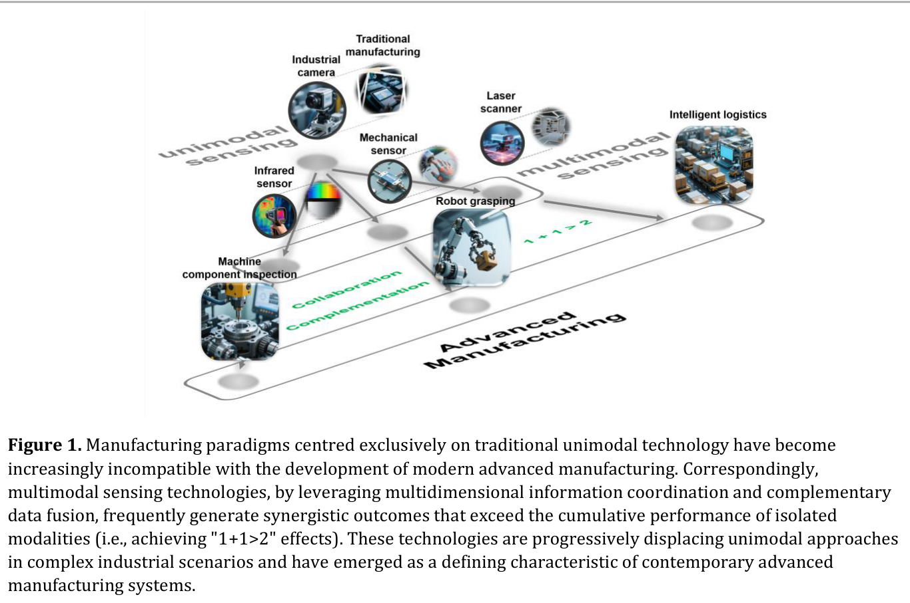
应对挑战的科学技术进展
为应对上述挑战，多模态传感技术必须在多个前沿实现突破。数字孪生技术的集成为高昂的硬件成本提供了可行解决方案。通过利用多模态传感器数据驱动虚拟工厂仿真，该技术实现了生产策略优化，最终达到降低成本与提升效率的目标[10]。
边缘智能与自学习系统的持续发展为缓解跨模态数据融合复杂度与计算需求提供了有效解决方案。边缘智能通过集成AI芯片，在终端设备层面实现多模态数据的实时融合。这不仅满足了严格的实时性要求，还确保了数据的有效整合[11]。另一方面，自学习系统采用强化学习动态优化多传感器间的权重分配，从而降低计算复杂度、增强数据可靠性、减少冗余数据——最终减轻计算负担[12]。
此外，人机协作监测技术体现了新工业范式以人为中心的理念。该技术利用卡尔曼滤波进行空间对齐，构建动态安全区域实时追踪工人手部位置。由此降低了人机协作事故发生率并提升了生产效率。这些技术的发展不仅弥补了多模态传感在实际应用中的当前缺陷，更推动了机械制造技术向更高效率、智能化与和谐化方向发展[13]。
展望未来，智能制造技术将与数字孪生、边缘智能、自学习系统及人机协作监测实现更深层次融合。这一融合将推动制造系统向"零缺陷"、"自我感知"与"以人为本"的目标迈进，标志着制造范式演进的重要飞跃。
结语
多模态传感技术推动了传统单模态传感方法向更高效率与智能化的演进。通过整合多元信息获取模态、增强抗干扰能力、开创新型智能化集成系统，该技术有效突破了制造环境中的鲁棒性壁垒。它不仅强化了制造工艺标准化与缺陷检测精度，还为制造系统提供了高保真度、高可靠性的数据基础。因此，多模态传感技术已成为智能制造生态系统中智能感知的基石。
同时，数字孪生技术、边缘集成架构与自学习系统的融入进一步加速了多模态传感技术的智能化与小型化轨迹，为当代工业奠定了不可或缺的基础设施。除这些技术进步外，以人为本原则的深度融合仍是多模态传感技术发展中的关键里程碑。通过将以人为本置于智能制造的核心，这一范式转变巩固了智能制造与时代精神无缝契合的基础，确保技术进步与人类需求及愿景内在关联。
致谢
作者谨对国家自然科学基金（52375414）与上海市科委创新专项（23ZR1404200）的支持表示衷心感谢。
参考文献
[1] AlMahasneh R, Hollósi G, Ficzere D, Bancsics M, Lukovszki C, Varga P. Uncovering Common AI Challenges Across Industrial Domains in the Transition to Industry 5.0[C]//2024 20th International Conference on Network and Service Management (CNSM). IEEE, 2024: 1-7.
[2] Liang P P, Zadeh A, Morency L P. Foundations & trends in multimodal machine learning: Principles, challenges, and open questions[J]. ACM Computing Surveys, 2024, 56(10): 1-42.
[3] Guclu E, Akin E. Enhanced defect detection on steel surfaces using integrated residual refinement module with synthetic data augmentation[J]. Measurement, 2025, 250: 117136.
[4] Li Y, Zheng L, Wang Y, Dong E, Zhang S. Impedance Learning-based Adaptive Force Tracking for Robot on Unknown Terrains[J]. IEEE Transactions on Robotics, 2025.
[5] Radford A, Kim J W, Hallacy C, Ramesh A, Goh G, Agarwal S, sastry G, Askell A, Mishkin P, Clark J, Krueger G, Sutskever I. Learning transferable visual models from natural language supervision[C]//International conference on machine learning. PmLR, 2021: 8748-8763.
[6] Chang Y H, Wu F C, Lin H W. Design and implementation of esp32-based edge computing for object detection[J]. Sensors, 2025, 25(6): 1656.
[7] Deng F, Huang Y, Lu S, Chen Y, Feng H, Zhang J, Yang Y, Hu J, Lam TL, Xia F. A multi-sensor data fusion system for laser welding process monitoring[J]. IEEE Access, 2020, 8: 147349-147357.
[8] Harmatos J, Maliosz M. Architecture integration of 5G networks and time-sensitive networking with edge computing for smart manufacturing[J]. Electronics, 2021, 10(24): 3085.
[9] Sochaniwsky A. A Lightweight Camera-LiDAR Fusion Framework for Traffic Monitoring Applications[D]. 2024.
[10] Durana P, Krastev V, Buckner K. Digital twin modeling, multi-sensor fusion technology, and data mining algorithms in cloud and edge computing-based smart city environments[J]. Geopolitics, History, and International Relations, 2022, 14(1): 91-106.
[11] Wang M, Zhang X, Chen S, Li X, Zhang Y. A bidirectional separated distillation-based cross-modal interactive fusion network for skeleton-based action recognition[J]. IEEE Sensors Journal, 2024.
[12] Guo J, Liu Q, Chen E. A deep reinforcement learning method for multimodal data fusion in action recognition[J]. IEEE Signal Processing Letters, 2021, 29: 120-124.
[13] Dani A P, Salehi I, Rotithor G, Trombetta D, Ravichandar H. Human-in-the-loop robot control for human-robot collaboration: Human intention estimation and safe trajectory tracking control for collaborative tasks[J]. IEEE Control Systems Magazine, 2020, 40(6): 29-56.
AI赋能自主制造
Sungjong Kim¹, Chan Hee Park², Byeng D. Youn¹,³
¹ 首尔大学机械工程系，大韩民国首尔08826
² 首尔市立大学机械与信息工程系，大韩民国首尔02556
³ Onepredict Corp.，大韩民国首尔06105
通讯作者
电子邮件：bdyoun@snu.ac.kr
现状
自动化制造是指利用控制系统、机械与信息技术执行预定义生产任务，且仅需最少人工介入。尽管此类系统对生产力提升贡献显著，其仍高度依赖基于规则的逻辑或专家知识，这限制了其对动态环境与复杂制造任务的适应性。近年来，熟练专家数量下降、工资与能源成本上升以及市场对多品种小批量生产需求的不断增长，凸显了制造系统变革性创新的迫切需求。
自主制造代表了进一步演进的步骤。它是指信息物理生产系统，其中机器、软件代理与嵌入式系统通过分布式智能独立执行感知、推理与动作，无需人类在常规及非结构化场景中的监督[1]。通过数字化领域专业知识并利用大规模工艺数据，自主系统提供了可扩展且适应性强的替代方案。人工智能（AI）的最新进展使这些系统能够自主整合实时反馈，实现预测性质量保证、异常检测与工艺参数自优化。
AI驱动的自主性的实施已被证明能显著提升运营效率、降低管理成本并改善系统韧性——尤其是在专家知识获取受限的全球分布式制造环境中。实证证据凸显了此类技术的有效性；例如，汽车制造业中自主质量管理系统的实施带来了52%的生产成本降低与78%的检测费用减少[2]。此外，自主制造技术预计将在质量控制、物流、能源管理、设备维护与综合工艺优化等多元运营领域展现广泛适用性。
当前及未来挑战
实现真正的AI赋能自主制造需要无缝整合三个基础组件——感知、推理与动作——同时建立稳健的平台以管理集成的自主制造系统。
在感知阶段，制造系统必须建立稳健且可扩展的数据管道，能够可靠地提取、预处理、存储与管理多样的多模态传感器数据。尽管可用数据丰富，当前管道架构相对于生产系统的整体成熟度往往发育不足。这些管道的设计常未充分考虑下游推理与控制任务。因此，获取的数据存在数据可用性问题——如噪声、低分辨率、不一致采样、数据过量及与系统上下文同步不良——阻碍系统仅传输实时决策与自主操作所需的相关、高质量数据[3]。
推理阶段涉及推导支持工艺级决策的可操作洞察。此阶段面临两个核心挑战：确保AI模型的可解释性与泛化能力。对于AI系统有效服务于制造运营，其必须跨关键类别提供结构化信息，包括当前及预测系统状态（系统评估）、识别的操作任务（问题定义）、因果因素（根因诊断）与规范性建议（决策制定）。然而，许多AI模型作为"黑箱"运作，阻碍工程师验证或信任推理输出。泛化同样存在问题，因为模型在领域迁移（如操作条件、产品配置或工厂环境变化）时往往难以维持稳健性能，导致物理上不一致或无代表性的结果[4]。
动作阶段需要将推理输出转化为可执行操作，如控制命令、最优设定点选择或人类可读的决策报告。尽管AI近期取得进展，当前AI模型常以缺乏语义清晰度的抽象或模型中心形式输出，阻碍了在制造系统中的有效解读与实施。若无额外的上下文化处理，这些输出难以直接操作，需工程师手动解释推理结果并确定适当干预措施，从而增加认知负担并延迟运营响应[5]。
最后，当前平台如制造执行系统（MES）与可编程逻辑控制器（PLC）呈层级结构，缺乏支持自主制造操作的灵活性。主要挑战包括分布式制造组件间的互操作性差、对实时自组织与制造生命周期整合的支持有限。
应对挑战的科学技术进展
在感知阶段，集成了抽取-转换-加载（ETL）机制的数据管道被用于将原始信号转换为结构化、分析就绪格式[6]。虚拟传感技术被用于通过利用制造过程获取的数据估计难以测量的变量[7]。为提升数据质量与上下文保真度，噪声去除、采样率对齐与异构数据源同步等预处理方法被应用[8]。此外，基于本体的技术被开发用于定义收集数据的标识并建立关联信息间的上下文关系[9]。通过启用上下文感知的数据链接与语义解释，其促进了后续阶段的数据筛选与选择，尽管制造数据丰富且异构。
在推理阶段，可解释性通过可解释AI技术推进，包括建模前策略（如领域知情的特征提取）与建模后工具（如注意力机制分析、SHAP[10]）。为改善领域迁移下的泛化能力，引入生命周期感知学习策略以支持数据漂移检测与持续学习[11]。此外，将物理约束集成到AI架构中的努力——通过物理启发的组件（如小波核）与基于控制方程的正则化技术（如微分约束）——有助于确保跨不同操作设置的物理一致性与可靠性[12,13]。
在动作阶段，主要目标是使AI输出转化为可操作的制造决策。由大语言模型（LLM）驱动的自然语言接口使输出摘要与结构化成为人类可读的格式，从而增强可解释性与操作就绪性[14]。这需要将语言表示与制造数据对齐以确保上下文相关性，并通过指令微调与基于代理的LLM促进领域专业知识整合[15,16]。基于强化学习（RL）的优化方法，包括近端策略优化（PPO）与深度Q网络（DQN），被用于从推理输出推导自适应控制策略，使系统能有效响应动态操作条件[17,18]。此外，机器学习运营（MLOps）框架通过版本控制、性能监控与基于反馈的再训练支持AI驱动动作的连续性与可靠性，确保系统生命周期内的持续稳健性[19]。
在此基础上，去中心化自主制造（DAM）平台架构被引入以实现自主决策、去中心化控制与自组织生产能力[20]。通过利用多代理系统与安全通信协议，该平台允许分布式制造节点有效协作、响应中断并在无集中协调的情况下执行制造任务。
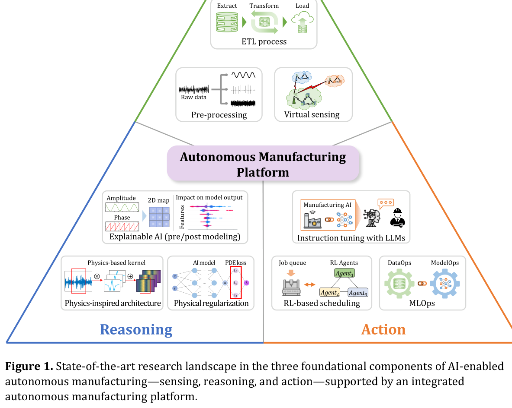
结语
AI赋能自主制造将通过在生产系统的感知、推理与动作层嵌入分布式智能，重新定义工业运营。超越传统基于规则的自动化，自主系统利用先进AI模型进行上下文感知决策、适应动态环境，并以最少人工介入自优化工艺。鉴于全球性挑战——如熟练专家减少、运营成本上升与对敏捷多品种生产的需求不断增长——这一范式转变日益关键。
近期技术进步共同使机器与软件代理能够在复杂制造环境中自主感知、解读与行动。此外，去中心化自主制造平台的出现为自组织生产系统提供了韧性与可扩展的基础设施。通过将多代理系统与安全、可扩展通信集成，这些平台允许分布式制造节点有效协作、实时响应中断并在无集中控制的情况下自主执行任务。
预期收益广泛，涵盖预测性质量控制、智能维护、能源优化与物流协调。随着AI模型变得越来越可解释、稳健且具有上下文感知能力，自主制造系统预计将成为下一代智能工厂的支柱——能够在工业条件下高效运行、适应响应并持续改进。
致谢
本研究部分受韩国国家科学与信息通信技术部（NRF）资助的国际研究与开发项目（No. 2022K1A4A7A04096329），以及贸易、工业与能源部（MOTIE，韩国）资助的技术创新计划（或工业战略技术开发计划——汽车产业技术开发——绿色汽车）（RS-2024-00444961，基于设计平台开发和演示专用电动汽车）支持。
参考文献
[1] Mo F, Monetti FM, Torayev A, Rehman HU, Mulet Alberola JA, Rea Minango N, Nguyen HN, Maffei A, Chaplin JC. A maturity model for the autonomy of manufacturing systems. International Journal of Advanced Manufacturing Technology. 2023 May 1;126(1–2):405–28.
[2] Singh J, Ahuja IPS, Singh H, Singh A. Development and Implementation of Autonomous Quality Management System (AQMS) in an Automotive Manufacturing using Quality 4.0 Concept– A Case Study. Comput Ind Eng. 2022 Jun 1;168.
[3] Goknil A, Nguyen P, Sen S, Politaki D, Niavis H, Pedersen KJ, Suyuthi A, Anand A, Ziegenbein A. A Systematic Review of Data Quality in CPS and IoT for Industry 4.0. ACM Comput Surv. 2023 Dec 31;55(14 S).
[4] Li D, Yang Y, Song YZ, Hospedales TM. Deeper, Broader and Artier Domain Generalization. 2017.
[5] Naqvi MR, Elmhadhbi L, Sarkar A, Archimede B, Karray MH. Survey on ontology-based explainable AI in manufacturing. Journal of Intelligent Manufacturing. Springer; 2024.
[6] Walha A, Ghozzi F, Gargouri F. Data integration from traditional to big data: main features and comparisons of ETL approaches. Journal of Supercomputing. 2024 Dec 1.
[7] Pal A, Kant K. Exploiting Proxy Sensing for Efficient Monitoring of Large-Scale Sensor Networks. ACM Trans Internet Technol. 2020 May 1;20(2).
[8] Tawakuli A, Havers B, Gulisano V, Kaiser D, Engel T. Survey: Time-series data preprocessing: A survey and an empirical analysis. Journal of Engineering Research (Kuwait). 2024.
[9] Sapel P, Molinas Comet L, Dimitriadis I, Hopmann C, Decker S. A review and classification of manufacturing ontologies. J Intell Manuf. 2024.
[10] Kim S, Lee S, Lee J, Kim M, Kim SJ, Yoon H, Youn BD. Fault-relevance-based, multi-sensor information integration framework for fault diagnosis of rotating machineries. Mech Syst Signal Process. 2025 Jun 1;232.
[11] Tercan H, Deibert P, Meisen T. Continual learning of neural networks for quality prediction in production using memory aware synapses and weight transfer. J Intell Manuf. 2022 Jan 1;33(1):283–92.
[12] Würth T, Krauß C, Zimmerling C, Kärger L. Physics-informed neural networks for data-free surrogate modelling and engineering optimization – An example from composite manufacturing. Mater Des. 2023 Jul 1;231.
[13] Li T, Zhao Z, Sun C, Cheng L, Chen X, Yan R, Gao RX. WaveletKernelNet: An Interpretable Deep Neural Network for Industrial Intelligent Diagnosis. IEEE Trans Syst Man Cybern Syst. 2022 Apr 1;52(4):2302–12.
[14] Zhang Q, Xu C, Li J, Sun Y, Bao J, Zhang D. LLM-TSFD: An industrial time series human-in-the-loop fault diagnosis method based on a large language model. Expert Syst Appl. 2025 Mar 10;264.
[15] Sun Y, Zhang Q, Bao J, Lu Y, Liu S. Empowering digital twins with large language models for global temporal feature learning. J Manuf Syst. 2024 Jun 1;74:83–99.
[16] Zheng S, Pan K, Liu J, Chen Y. Empirical study on fine-tuning pre-trained large language models for fault diagnosis of complex systems. Reliab Eng Syst Saf. 2024 Dec 1;252.
[17] He Z, Tran KP, Thomassey S, Zeng X, Xu J, Yi C. Multi-objective optimization of the textile manufacturing process using deep-Q-network based multi-agent reinforcement learning. J Manuf Syst. 2022 Jan 1;62:939–49.
[18] Zhang Y, Zhu H, Tang D, Zhou T, Gui Y. Dynamic job shop scheduling based on deep reinforcement learning for multi-agent manufacturing systems. Robot Comput Integr Manuf. 2022 Dec 1;78.
[19] Bayram F, Ahmed BS. Towards Trustworthy Machine Learning in Production: An Overview of the Robustness in MLOps Approach. ACM Comput Surv. 2025 Jan 22;57(5).
[20] Leng J, Zhong Y, Lin Z, Xu K, Mourtzis D, Zhou X, Zheng P, Liu Q, Zhao JL, Shen W. Towards resilience in Industry 5.0: A decentralized autonomous manufacturing paradigm. Vol. 71, Journal of Manufacturing Systems. Elsevier B.V.; 2023. p. 95–114.
增材制造与激光制造
7. 增材制造
Guo Dong Goh, Xi Huang, Wai Yee Yeong
南洋理工大学机械与航空工程学院，新加坡 639798
南洋理工大学3D打印新加坡中心，新加坡 639798
现状
增材制造（Additive Manufacturing, AM），俗称3D打印，已从一种原型制造工具发展为横跨航空航天、生物医学、电子与建筑等多个行业的可行生产技术。通过逐层构建物体，AM能够制造复杂几何形状和定制化功能梯度零件，并将材料浪费降至最低。然而，确保打印零件的可靠性和一致性仍然是关键问题——缺陷或工艺参数的波动可能导致力学性能下降，并阻碍AM在最终用途、安全关键零件中的应用。近年来，AM与机器学习（Machine Learning, ML）的融合日益被视为智能制造的关键赋能技术，通过从数据中提取洞见并自动化决策来应对这些挑战。
机器学习算法在大规模数据集中识别复杂模式方面表现出色，在AM中正被用于揭示工艺参数、材料行为与零件质量之间复杂的相互关系。ML在AM工作流程中的早期成功已得到验证：应用于设计阶段（如ML驱动的拓扑优化和生成式设计，用于轻量化结构）、材料开发（预测配方或微观结构以实现目标性能）、工艺优化（为质量和效率调优打印参数），以及原位监测中的缺陷检测（图1
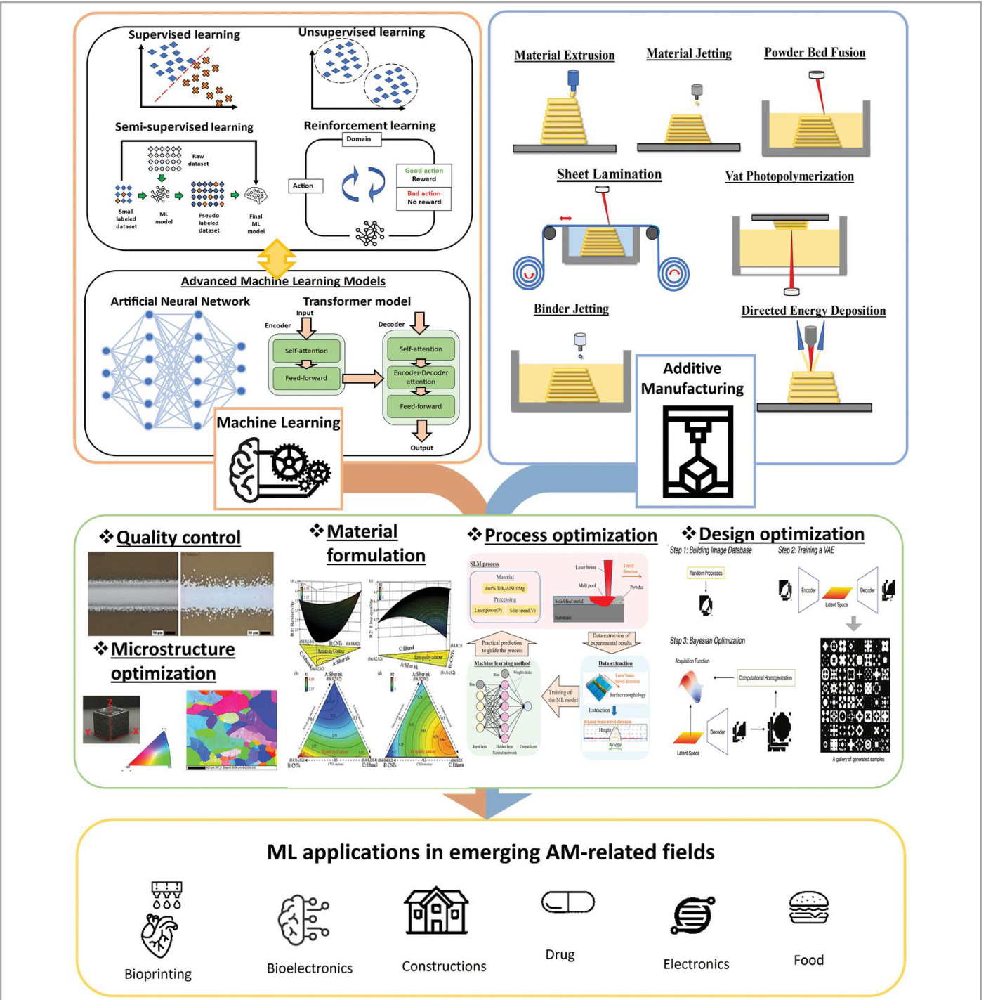
）。
当前挑战与未来挑战
尽管备受关注，但仍需解决若干关键挑战以充分实现ML在AM中的潜力。数据获取与质量是基础性障碍：ML模型需要大规模、高质量的数据集，但AM实验耗时较长且传感器成本高昂，导致数据稀缺或分散。不同机器和材料之间的打印条件差异很大，且行业内缺乏标准化的数据格式和共享机制。因此，在某一数据集上训练的模型可能难以泛化。例如，用于缺陷检测的ML模型可能需要数千张标注图像，覆盖不同缺陷类型、构建几何形状和光照条件——这些数据往往难以获取或成本高昂。在金属AM研究中，研究人员指出获取用于训练计算机视觉模型的真实缺陷标签数据存在困难；高速光学相机只能捕捉表面现象，无法发现亚表面缺陷，而原位X射线CT扫描难以与图像对齐。这凸显了一个更广泛的传感器和标注挑战：如何在3D打印过程中高效获取丰富的同步数据（视觉、热学、声学等）及准确的标签（缺陷位置、材料性能）。
另一个主要挑战是ML模型在AM中的泛化能力。为某一打印机或材料训练的模型在应用于不同配置时往往表现欠佳，这是由于机器硬件、校准或工艺动态的差异。將基于ML的工艺优化器或质量预测器适配到新的AM机器，通常需要为该特定场景进行大量数据收集和再训练。这阻碍了生产环境中可扩展性的提升——在生产环境中，会引入成批打印机或新型号机器。迁移学习和域适应等技术正在被探索，但确保跨机器的稳健性能仍然非易事。同样，可扩展性和实时实施也带来挑战：将ML嵌入打印机的实时控制回路需要快速的推理速度以及可靠的软硬件集成。许多深度学习模型计算密集，如果未经优化，可能拖慢制造速度。例如，一个复杂的神经网络可能精确检测缺陷，但如果无法以打印机的帧率运行以进行实时监测，则可能成为瓶颈——尤其是在熔池监测等需要高帧率的工艺中。实现毫秒级响应时间可能需要模型压缩、边缘计算设备或专用加速器，这些都增加了系统复杂性。
实际部署也存在挑战。某些AM工艺的随机性（如粉末床融合中的飞溅、丝材进料变异性）意味着ML模型必须处理噪声高维数据和稀有事件。确保模型不仅能检测异常，还能在无人干预的情况下做出可靠的纠正决策是一个涉及风险的前沿领域：时机不当或错误的纠正本身可能导致故障。此外，许多ML算法的黑箱性质会降低用户对关键制造场景的信任。工程师和认证机构可能对不透明模型做出的决策持谨慎态度，这凸显了对可解释人工智能和严格验证标准的需求。基于ML增强的AM工艺的认证和资质认定在很大程度上仍是未知领域——目前缺乏关于如何批准使用ML驱动参数调整或缺陷纠正制造的零件的标准。最后，还存在组织和技术技能障碍；实施这些先进系统需要跨学科专业知识（材料、ML、软件），而制造团队仍在培养这些能力。
应对挑战的科学与技术进展
研究工作正在积极推进技术现状以应对上述挑战，在多个方面取得了有前景的成果。一个重要进展领域是打印过程中的实时缺陷检测与纠正。针对基于挤出的3D打印，研究人员开发了计算机视觉模型，可自动检测打印异常（如灯丝欠挤出或过挤出）并在构建过程中进行干预。Brion和Pattinson致力于解决构建真正可泛化的误差纠正系统的需求。他们构建了一个多头神经网络，在涵盖192个零件、多种几何形状、材料、打印机和刀具轨迹的120万张自动标注图像上进行训练。通过在采集过程中标注偏离最佳打印参数的情况，他们创建了一个多样化数据集，使网络能够在不同的挤出方法中实时检测和纠正错误。他们的控制回路不仅能纠正缺陷，还提供决策过程的可视化，增强了跨不同AM设置的透明度和适用性。
另一个值得注意的进展领域是使用ML进行多目标工艺优化，这解决了在无需大量试错的情况下平衡相互竞争的质量指标的挑战。传统AM工艺调优通常需要迭代实验以实现权衡（如在最小化孔隙率的同时最大化强度）。ML驱动的代理模型和优化算法可以加速这一搜索过程。研究人员使用ML驱动的代理模型优化气溶胶喷射打印纳米油墨薄膜的强脉冲光烧结，平衡薄膜电阻和表面粗糙度——这两个因素传统上是相互制约的。通过在小型实验数据集上训练，他们的多目标算法识别出可同时获得低薄层电阻和低粗糙度的工艺设置，揭示了手动调优可能会错过的最佳窗口。这种方法展示了ML如何能够驾驭复杂的AM权衡并在无需新硬件的情况下提升材料性能。类似地，贝叶斯优化和强化学习方案正在被探索，以同时调优数十个AM工艺参数，加速工艺认证。例如，基于迁移学习的框架能够利用先前机器的知识预测新机器的最佳激光加工参数，减少了采用新型打印机模型所需的工作量。这些进展指向一个"自优化"打印机的未来——自动调整以达到目标结果。
在材料和性能领域，ML技术正在实现通过AM获得特定应用材料性能的突破。例如，研究人员在一个由硬质和软质光聚合物混合的216个PolyJet打印样本上训练神经网络，以预测肖氏硬度和弹性模量，误差小于1%——优于响应面模型。通过反转该模型，他们可以指定所需组织刚度，并直接获得所需材料配比和层结构。这使得通过试错无法实现的患者特异性解剖模型或可调触觉特性的假体成为可能。更广泛地说，ML正在通过识别复杂的过程-结构-性能关联来加速AM材料开发。例如，在生物电子学和生物打印中（打印活细胞或软聚合物），数据驱动模型帮助发现可打印的生物墨水配方并校准工艺参数，以确保打印组织的可行性和性能。在电子打印中，ML已被用于预测打印参数如何影响导电性，并调整参数以生产缺陷最少的功能电路。这些案例研究表明，通过从实验数据中学习，ML算法可以驾驭多材料和功能打印的巨大设计空间以满足特定目标。
研究人员正在通过将物理信息神经网络与数字孪生模拟及经验ML相结合来解决泛化问题，从而使模型扎根于物理现实。例如，在金属粉末床融合中，通过用高保真熔池模拟增强有限的实验数据，孔检测准确率提升至87%。Transformer等新兴架构也正在被探索，因其能够建模顺序的、高维的AM数据并捕捉细微缺陷。与此同时，NIST增材制造材料数据库等倡议正在建立开放基准——汇编构建日志、原位传感器读数和质量指标——以推动开发更具泛化能力的AM ML模型。总的来说，传感、数据增强、算法效率和混合建模方面的进展正在将AM从一种手动的、经验驱动的实践转变为数据驱动的、自适应的工艺，建立起对ML集成将克服当前局限性并解锁更高自动化和性能的信心。
总之，传感、数据增强、算法效率和混合建模方面的进展正在共同推动边界拓展：曾经的手动、经验驱动实践正在演变为数据驱动的、自适应工艺。随着每一个成功案例的实现——从实时纠正系统到预测性材料调优——信心不断增强，ML的集成将解决AM当前的许多局限性，并解锁更高水平的自动化和性能。
结语
机器学习将使增材制造转变为智能的、数据驱动的范式。通过实现更智能的设计、自优化参数和自主质量控制，ML使生产更加可靠和高效。高质量的工艺数据对于将AM扩展到工业规模与硬件同等重要。尽管在数据共享、模型可移植性和实时部署方面仍存在挑战，但正在进行的进展——弥合模拟与实验之间的差距、标准化数据格式、开发验证协议——正在铺平道路。未来的AM系统将从每次构建中持续学习，减少错误、提高良率并扩展设计可能性。因此，将ML与AM集成提供了敏捷工厂所需的精度和灵活性，能够以最少的人为干预生产复杂、定制化的产品。
8. 激光制造中的机器学习
Yung C Shin
普渡大学机械工程系，美国印第安纳州西拉斐特
现状
机器学习（ML）在各种激光制造领域中的应用日益广泛，包括预测建模、工艺监测、工艺控制、缺陷检测、微观结构和力学性能预测，以及工艺参数优化。激光焊接、增材制造和激光切割等激光制造工艺涉及复杂的物理机制：包括但不限于激光能量吸收、热传递、熔化、流体流动、蒸发、凝固等。获得所需力学性能和微观结构的最佳工艺条件通常需要大量的参数变化实验或多物理场数值模拟——后者计算成本高昂且耗时较长。随着业界努力减少激光加工的实施时间和成本，机器学习已成为一种有前景的方法，用于建立数据驱动或代理模型——这些模型可以显著降低迭代寻找因果关系的高成本，或在某些情况下替代计算成本高得让人难以承受的基于物理的高保真建模。近年来，可以找到许多将机器学习用于工艺监测的例子，特别是使用视觉传感器检测熔池边界、表面缺陷、不完全焊缝和切割、匙孔深度等。一旦开发完成，它已成为自动工艺控制的有用工具，因为机器学习能够实时预测工艺条件。机器学习还可用于根据生成的数据调优工艺参数或优化工艺。它还被用于预测激光加工后的微观组织和硬度。此外，通过增材制造工艺利用机器学习合成新材料也取得了一些成功的尝试。例如，研究人员尝试预测高熵合金的热力学稳定相。正如这些例子所证明的，随着机器学习学科的进一步发展，机器学习的作用和应用只会不断增加。在某种意义上，机器学习可能是实现材料加工中许多激光工艺的优化、工艺控制和稳健实施预测科学的唯一途径，因为摩尔定律表明，即使采用大规模并行处理，计算能力也需要至少再过二十年才能赶上可用于实时设计、优化和控制的高保真建模的计算速度需求。
当前挑战与未来挑战
尽管机器学习在激光加工的各种应用中迅速普及，但当前大部分机器学习需要大量数据，而从物理系统实验生成这些数据的成本可能非常高昂。此外，数据驱动模型通常仅适用于开发该模型所用的特定设置或操作，因此缺乏像基于物理的预测模型那样的向广泛工艺条件范围推广的能力。例如，为特定类型的激光和工件材料开发的数据驱动模型可能无法直接扩展到另一组激光和材料组合。这将需要为每种激光和材料组合建立单独的数据驱动模型。为了扩大其适用性并降低生成大量数据的成本，需要更高效的方法来建立机器学习模型。例如，物理信息机器学习是将多年来通过大量科学研究建立的已知物理定律或控制方程整合起来的有前景方法，这将大幅减少建立数据驱动模型所需的数据量，并可能扩大机器学习模型的泛化能力。另一个问题在于如何利用现有数据——这些数据虽然丰富，却往往分散存放。对于许多常用激光-材料组合的激光工艺，多年来已经生成了大量数据，但由于数据以各种格式、大小、图像和分辨率存在，它们无法轻易用于构建数据驱动模型。因此，学术界可能需要致力于建立数据格式或数据存储库的标准，以便它们能够用于通过机器学习开发数据驱动模型。另一个挑战是如何组合不同类型的异构机器学习模型，以实现系统级监测、控制或优化。对于每种激光工艺，可能需要一个集成的工艺监测、量化和控制框架。图1
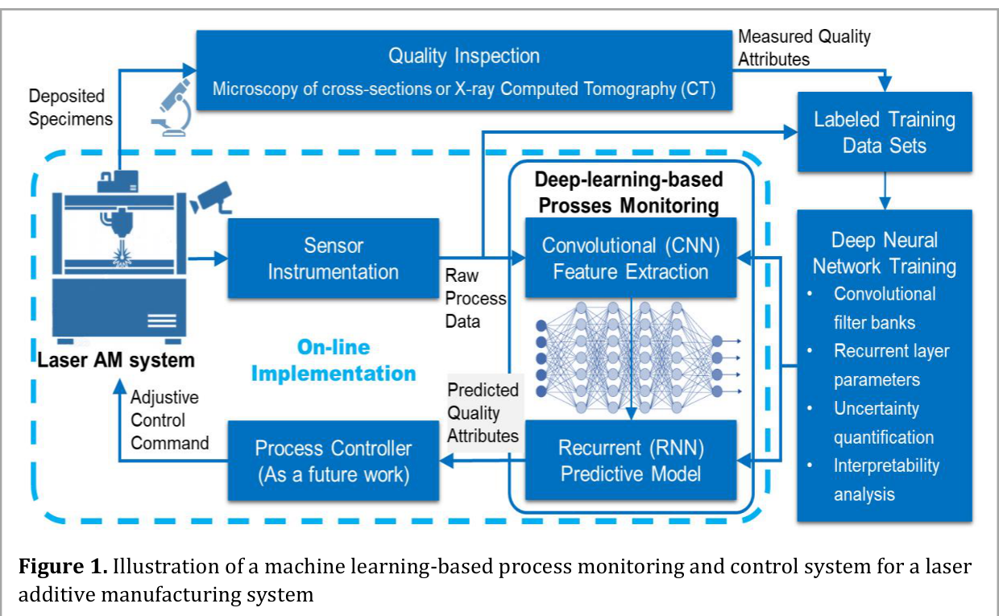
展示了一种用于激光增材制造工艺的集成质量检验、工艺监测和反馈控制的可能方法。
应对挑战的科学与技术进展
多年来已经开发了许多学习方法，可应用于材料激光加工的各个方面。在寻找最佳工艺参数方面，贝叶斯优化、随机森林和各种人工神经网络范式等机器学习技术已被采用。卷积神经网络、长短期记忆网络（LSTM）和带ML增强的卡尔曼滤波器通常是熔池监测和控制的选择。在激光加工过程中使用视觉系统、X射线扫描、超声扫描或扫描电子显微镜（SEM）图像进行缺陷检测时，各种卷积神经网络一直备受欢迎。人们已尝试通过各种神经模糊模型和物理信息神经网络为复杂物理问题开发代理模型。在此成功的基础上，研究人员需要对每种应用评估更广泛的机器学习模型，以便确定最佳方法。学术界还需要为系统级优化和控制开发集成的机器学习模型。激光加工界也可以利用人工智能（AI）和机器学习 rapid advances，在引入更先进的理论和方法时加以应用。他们还需要关注可扩展ML工艺监测和诊断的新类型传感器和传感技术。常用传感器包括相机、红外传感器、声发射传感器、光电二极管、光谱仪等，而原位X射线设备也已成功用于监测熔池、飞溅等。这些传感器必须能够轻松集成到商业激光加工设备中，并提供必要的速度和分辨率——因为某些激光工艺（如激光粉末床融合和激光焊接）是以非常高的速度进行的。
结语
如上所述，机器学习在各种激光制造工艺的工艺监测、控制、零件质量监测和优化方面有着非常广阔的前景。然而，必须克服本文所述的各种挑战，才能使机器学习在工业中得到广泛应用，而且必须有相应的传感技术和传感器的进一步发展。学术界需要共同努力建立数据格式和存储库的标准，以免工作分散化。
数字孪生与智能供应链
9. 智能制造数字孪生
He Zhang1, Zitong Wang1, Fei Tao1,2*
1 Digital Twin International Research Center, International Institute for Interdisciplinary and Frontiers, Beihang University, Beijing, China
2 School of Automation Science and Electrical Engineering, Beihang University, Beijing, China
* E-mail: ftao@buaa.edu.cn
现状
数字孪生的理念可追溯至二十世纪六十年代的阿波罗13号任务，当时采用了多个仿真器来评估故障，并训练宇航员和任务控制人员应对氧气罐爆炸事件。经一段沉寂期后，数字孪生于二十一世纪重新崛起并引发广泛关注。Grieves教授提出了数字孪生的三维模型，阐述了其对产品全生命周期管理的价值与意义[1]。美国国家航空航天局（NASA）将其列为未来发展蓝图的关键路径之一[2]。陶飞教授提出了五维数字孪生模型，包含物理实体、虚拟模型、数据、连接和服务，以进一步推动数字孪生的实践应用[3]。迄今为止，数字孪生已被应用于多个领域，智能制造是最具活力的应用领域之一，因其契合工业4.0的核心宗旨——通过数字技术实现供应链与价值链中垂直与水平信息流的无缝整合，构建高度智能化的生产系统[4,5]。此外，数字孪生已被应用于智能制造的诸多方面，革新了传统制造模式。
尽管部分企业或研究人员已在智能制造领域开展数字孪生实践，但由于认知理解与技术水平的局限，数字孪生应用的整体成熟度尚不足以充分发挥其优势与价值。此外，近年来强调以人为中心、可持续性与韧性的工业5.0已被提出，对数字孪生的发展提出了新的要求[6]。而大语言模型（Large Language Model, LLM）等先进技术的飞速发展，也为数字孪生带来了新的机遇[7]。在此背景下，数字孪生仍需进一步发展，以提升其智能化水平、成熟度与应用规模。
当前及未来挑战
智能制造中数字孪生所面临的当前及未来挑战涵盖多个层面，包括应用场景、关键技术及安全性等。当前数字孪生的工业应用场景主要集中在汽车、飞机、船舶等领域的实时状态监测、质量预测与智能控制。然而，极端制造（如微细加工、超精密制造、大型系统制造）领域的数字孪生研究仍处于相对空白阶段。此外，现有数字孪生水平亦难以应对极度复杂系统或工程。
数据是制造业数字孪生的关键驱动力[8]。随着传感器与通信技术的发展，越来越多的制造过程数据得以采集[9]。然而，一方面，制造过程中可能产生的瞬态异常仍难以捕捉；另一方面，极端环境下的制造数据仍难以采集。此外，传感器与控制器所采集的海量数据，连同数字孪生模型所产生的数据，受限于计算能力，对快速分析与处理构成重大挑战。
模型是实现智能制造数字孪生的重要基础之一。然而，当前数字孪生模型仍以一次性定制方案的形式构建，针对特定用例量身打造，限制了其泛化能力[10]。对相关领域知识的需求进一步限制了其应用与发展。部分学者已探索纯数据驱动的数字孪生方法，但基于黑箱算法的此类方法存在可解释性挑战。一旦出现问题，难以有效界定责任。
智能制造中数字孪生的实现离不开相关软件或平台的支持。目前，部分企业已开发了相关工具，如Ansys Twin Builder、Azure Digital Twins及3DEXPERIENCE。然而，不同软件之间的兼容性不足，各软件的功能亦不足以支持跨领域多场景的完整数字孪生链条[11]。
应对挑战的科技进展
为应对这些挑战，多个领域正涌现重要的科技创新。这些进展旨在提升模型的准确性、数据的互操作性、计算效率与安全性，以进一步推动可扩展的工业应用。
系统工程思维与复杂性理论相结合，是将数字孪生应用于更复杂对象与场景的有效途径。基于模型的系统工程（Model-Based Systems Engineering, MBSE）等系统工程框架有助于统一多域模型与数字线程，从而实现协同智能制造。此外，复杂性科学可通过对大规模工业系统固有的非线性动力学进行多尺度分析与复杂网络研究，有助于增强系统韧性[12]。
为解决延迟与计算瓶颈问题，混合边缘-云架构正在被部署。边缘端智能芯片的处理能力不断增强，有助于实现低延迟与高实时性数据传输、增强数据隐私与安全性、降低带宽消耗与成本[13]。此外，随着量子计算技术的发展与成熟，其可形成集群协同处理更大规模的数据集[14]。
人工智能（AI）的进步正在改变数字孪生建模的方式。当前，物理学信息神经网络（Physics Informed Neural Networks, PINNs）等先进算法正更深入地整合领域知识，以提升可解释性[15,16]。此外，生成式AI将进一步支持合成数据生成，以弥补训练数据集的不足，提升预测性维护的准确率。未来，在生成式AI的支持下，基于用户需求自动生成复杂数字孪生模型也将成为可能[17]。基于区块链的可追溯解决方案正在被实施，以降低安全风险[18]。
ISO 23247等标准化框架——自动化系统与集成·制造业数字孪生框架——正在解决数据孤岛问题[19]。Amazon IoT TwinMaker和Eclipse Ditto等工具通过模块化API和通用资产模型实现跨平台集成。此外，makeTwin——一种数字孪生软件平台的统一参考架构——已被提出[11]。然而，相关国际标准仍需进一步发展以提高兼容性。所有相关利益方的协作对形成数字孪生工业软件生态系统同样至关重要。
AI、边缘-云协作、区块链与标准化等技术进步正共同应对智能制造数字孪生的核心挑战。量子计算、可解释AI与跨行业协作等方面的持续创新将进一步加速数字孪生应用。
结论
数字孪生已成为工业4.0与工业5.0的基石，促进了智能制造中物理系统与虚拟系统的融合。尽管数字孪生在实时监测、预测性分析与智能控制方面具有显著优势，但在极端制造环境等复杂场景中的应用、确保数据完整性以及克服计算与互操作性局限等挑战依然存在。跨行业协作创新配合稳健的政策框架，将释放数字孪生的全部潜力，使其从被动工具转变为主动赋能下一代工业智能的核心引擎。
致谢
本工作受北京市自然科学基金资助（Grant No. L243009）、国家自然科学基金资助（Grant No. 52120105008）及中国博士后科学基金资助（Grant No. 2024M754054）。
参考文献
[1] Grieves M 2014 Digital Twin: Manufacturing Excellence Through Virtual Factory Replication (White Paper) 1–7
[2] Glaessgen E and Stargel D 2012 The digital twin paradigm for future NASA and US Air Force vehicles 53rd AIAA/ASME/ASCE/AHS/ASC Structures, Structural Dynamics and Materials Conference 20th AIAA/ASME/AHS Adaptive Structures Conference 14th AIAA 1818 (doi:10.2514/6.2012-1818)
[3] Tao F, Zhang M, Liu Y et al 2018 Digital twin driven prognostics and health management for complex equipment CIRP Ann. 67 169–172 (doi:10.1016/j.cirp.2018.04.055)
[4] Tao F and Qi Q 2019 Make more digital twins Nature 573 490–491 (doi:10.1038/d41586-019-02849-1)
[5] Tao F, Zhang H and Zhang C 2024 Advancements and challenges of digital twins in industry Nat. Comput. Sci. 4 169–177 (doi:10.1038/s43588-024-00603-w)
[6] Zhang H, Li Y, Zhang S et al 2025 Artificial Intelligence-Enhanced Digital Twin Systems Engineering Towards the Industrial Metaverse in the Era of Industry 5.0 Chin. J. Mech. Eng. 38 40 (doi:10.1186/s10033-025-01210-0)
[7] Gautam A, Aryal M R, Deshpande S et al 2025 IIoT-enabled digital twin for legacy and smart factory machines with LLM integration J. Manuf. Syst. 80 511–523 (doi:10.1016/j.jmsy.2025.03.022)
[8] Friederich J, Francis D P, Lazarova-Molnar S et al 2022 A framework for data-driven digital twins of smart manufacturing systems Comput. Ind. 136 103586
[9] Zhang M, Tao F, Huang B et al 2024 Digital twin data: methods and key technologies Digit. Twin 1 2 (doi:10.12688/digitaltwin.17467.2)
[10] Kapteyn M G, Pretorius J V R and Willcox K E 2021 A probabilistic graphical model foundation for enabling predictive digital twins at scale Nat. Comput. Sci. 1 337–347 (doi:10.1038/s43588-021-00069-0)
[11] Tao F, Sun X, Cheng J et al 2024 makeTwin: A reference architecture for digital twin software platform Chin. J. Aeronaut. 37 1–18 (doi:10.1016/j.cja.2023.05.002)
[12] Grieves M 2024 Intelligent digital twins and the development and management of complex systems Digit. Twin 1 8 (doi:10.12688/digitaltwin.17574.1)
[13] Alcaraz C and Lopez J 2022 Digital twin: A comprehensive survey of security threats IEEE Commun. Surv. Tutor. 24 1475–1503 (doi:10.1109/COMST.2022.3171465)
[14] Gyongyosi L and Imre S 2019 A survey on quantum computing technology Comput. Sci. Rev. 31 51–71 (doi:10.1016/cosrev.2018.11.002)
[15] Kobayashi K and Alam S B 2024 Explainable, interpretable, and trustworthy AI for an intelligent digital twin: A case study on remaining useful life Eng. Appl. Artif. Intell. 129 107620 (doi:10.1016/j.engappai.2023.107620)
[16] Kim S, Choi J H and Kim N H 2022 Data-driven prognostics with low-fidelity physical information for digital twin: physics-informed neural network Struct. Multidiscip. Optim. 65 255 (doi:10.1007/s00158-022-03348-0)
[17] Mata O, Ponce P, Perez C et al 2025 Digital twin designs with generative AI: crafting a comprehensive framework for manufacturing systems J. Intell. Manuf. 1 1–24 (doi:10.1007/s10845-025-02583-8)
[18] Putz B, Dietz M, Empl P et al 2021 Ethertwin: Blockchain-based secure digital twin information management Inf. Process. Manag. 58 102425 (doi:10.1016/j.ipm.2020.102425)
[19] Yoo S K, Sun K J and Kim S H 2024 Digital Twin Standardization: Trends and Future Prospects Electron. Telecommun. Trends 39 79–86 (doi: 10.22648/ETRI.2024.J.390308)
10. 智能供应链与物流
Jagjit Singh Srai1
1 Department of Engineering, University of Cambridge, UK
E-mail: jss46@cam.ac.uk
现状
人工智能（AI）作为一套知识体系而非单一技术，已历经数十年的发展。尽管目前供应链与物流（Supply Chain & Logistics, SC&L）中AI技术的应用仍处于起步阶段，但其有望成为"工业6.0"转型的下一次重大变革，推动认知自动化的发展[1]。当前，需求预测、供应规划领域正经历快速发展，支撑近实时物流优化的新型物理与数字基础设施[2]不断涌现，同时促进新的商业模式[3]，实现自主运营与超个性化服务。这些早期应用与试点开发正处于更广泛的数字化供应链转型进程中，整合贯穿"端到端"供应链的离散运营。表1列出了当前智能供应链与物流中的AI应用示例。这些应用可归类为供应链特定领域的"点解决方案"，如工厂单元操作与最后一公里物流[4]，也可作为支撑AI跨企业扩展的"基础设施"，而最值得关注的或许是支持自主"运营/商业模式"[5]的多连接AI与数字应用——例如通过代理型AI（Agentic-AI）实现分布式决策。
当前及未来挑战
与数字化供应链与物流转型中部署的其他技术类似，AI具有巨大的潜在收益，技术干预可同时提升生产率和供应链对需求变化的响应能力。然而，在供应链中采用AI技术仍面临巨大挑战，包括：劳动力技能不足、对可能影响工作安全的技术之抵触、数据质量与数据整合挑战、AI模型的可解释性、潜在的系统偏差，以及高度分布式系统的治理安排。图1总结了AI在供应链中的应用、涌现的挑战及应对这些挑战的未来技术。就技能而言，世界经济论坛2025年就业报告[6]指出，到2030年，三分之一的工作岗位将涉及人机协作的增强系统，另有三分之一将实现完全自动化，与当前水平相比仅需手动操作的活动将减少50%。这将改变供需规划岗位的性质，劳动密集型入门岗位将大幅减少。
表1. 当前状态——供应链与物流中AI应用示例
| AI应用领域 | 部署的AI技术 | 增强的供应链产出 |
|---|---|---|
| 需求预测 | 机器学习、时间序列 | 预测准确率提升 |
| 最后一公里配送 | 路线优化 | 服务增强/缺货减少 |
| 仓库自动化 | 机器人-视觉系统-机器人 | 速度、生产率、拣选准确率提升 |
| 库存管理 | 预测性分析 | 库存降低 |
| 工厂单元操作 | 机器学习/数字孪生 | 工艺与良率优化 |
| 供应商管理 | AI赋能数字平台 | 采购灵活性与可靠性提升 |
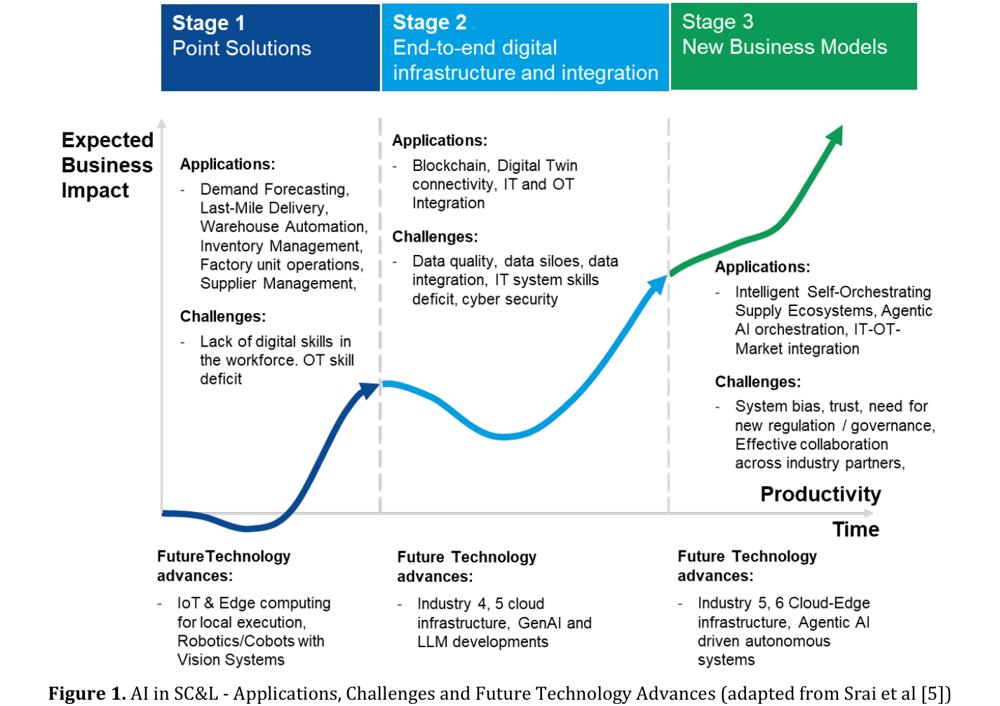
（改编自Srai等[5]）
供应链与物流中AI应用的另一关键挑战在于，当决策代理分布在多个AI智能体与人类行为者之间时，责任归属与问责问题变得尤为突出。这需要在数字技术采用[7]上开展多方行为者协作，并建立治理机制，以遏制偏差的放大——需考虑相互依存性、隐私及系统层面风险，而非仅关注个体/智能体的决策。
应对挑战的科技进展
对于运筹管理[8]和运筹学[9]供应链与物流领域的研究者而言，AI既带来了许多研究挑战，也提供了塑造其未来发展的机遇。随着企业超越单一功能特定AI投资，规模化挑战将需要重大的基础设施开发，运营技术（OT）与信息技术（IT）专业人员需在数据整合活动中协作。主要挑战在于：组织如何跨企业规模化AI应用，以及与分布式自动化决策相关的问责、数据管理与隐私问题。为应对后者，需要新的监管框架与治理模式，而供应链与物流跨越多个司法管辖区的特性将使这一任务更为复杂。被标榜为工业5的技术发展将带来更多的人机交互，以进一步提升生产率，同时解决材料与能源使用效率问题，以应对范围三净零排放可持续性挑战。将支撑智能自编排供应生态系统的工业6技术[1]，包括由IT-OT-市场平台数据整合所支持的代理型AI编排，以及减少云数据传输与相关网络风险的本地边缘计算。
结论
AI增强机器人与自主系统
11. AI增强机器人与自主系统
Satyandra K. Gupta¹
¹ 南加州大学先进制造中心，美国加利福尼亚州洛杉矶
电子邮件：guptask@usc.edu
现状
过去十年间，人工智能技术取得了显著进展，包括强化学习、深度学习、大语言模型和生成式AI等[2-6, 10]。这些进展赋予了机器人和自主系统新的能力。我们在日常生活中接触到的大多数AI都属于数字AI，例如生成求职申请信、电影观看推荐、创作绘画以及医学影像中肿瘤检测等。而驱动机器人行为则需要另一种类型的AI。例如，在飞机机翼上进行打磨作业的机器人需要AI来实现自主运行，这种AI被称为物理AI。物理AI承担一个或多个目标，利用传感器数据生成机器人执行的动作序列以达成目标。物理AI通过传感器监控任务执行并规划机器人动作以完成任务。物理AI在以下与机器人和自主系统相关的领域得到应用：（1）感知；（2）规划；（3）控制；（4）人机交互；（5）从人类演示中学习；（6）测试用例生成；（7）多机器人协作。
图1
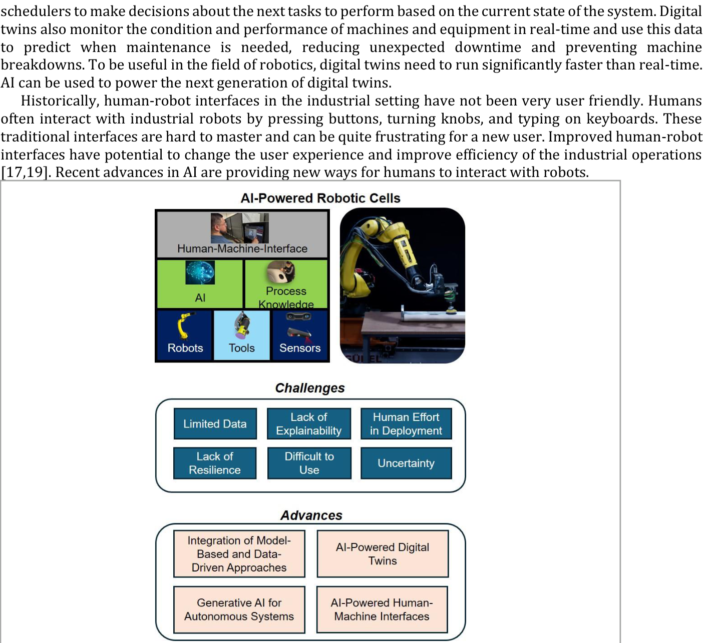
展示了实现AI驱动的机器人工作单元所面临的挑战，同时列出了应对这些挑战所必需的进展。物理AI应用的风险特征通常与数字AI应用有着根本性的不同。风险包含两个维度：（1）发生错误的概率；（2）产生错误的后果。当错误后果不严重时，可以容忍较高的错误概率。因此，在许多数字AI应用中，1%的错误概率是可接受的。相反，许多工业应用要求错误概率低至百万分之一。使用数据驱动方法降低错误概率需要使用海量数据，但在工业应用中获取数据的代价极为高昂。因此，需要将基于模型的方法与数据驱动方法相结合以解决数据规模问题。
机器人系统的部署需要投入大量的人力工作，这主要源于编写软件和测试系统所需的时间。机器人系统日益增加的复杂性使这一问题更加严重。不幸的是，人类专业知识的可获得性往往成为机器人部署的瓶颈。生成式AI正在成为应对这一挑战的工具。数字孪生已成为复杂物理系统的有用工具，AI驱动的数字孪生正越来越多地被用于支持机器人和自主系统的运行。最后，AI正在为人机交互创造新的模态。
当前和未来面临的挑战
数字AI在训练过程中使用大量数据。在许多工业应用中，收集高质量数据需要耗费大量时间并产生极高的成本。因此，纯粹的数据驱动AI方法在许多工业应用中并非可行的模式。我们需要物理AI来驱动机器人技术。以下是两个代表性用例，说明物理AI如何在工业应用中使用。
• 缺陷检测是机器人制造的重要组成部分。机器学习已成为分析和分类图像的强大技术[11]。然而，收集训练机器学习系统所需的大量物理缺陷图像往往不可行。一个替代方案是开发生成逼真合成图像的流程。近期研究表明，利用逼真合成图像与真实缺陷图像相结合的训练过程在实践中效果良好。
• 机器人工作单元应能够通过自主进行实验来为新材料构建过程模型[5,14]。虽然输入工艺参数与工艺性能之间的精确定量关系可能未知，但许多变量之间的定性关系往往是已知的。在训练阶段可以利用损失函数来惩罚偏离已知工艺约束的情况。这种方法可以强化已知模型并加速模型构建过程[9]。
数字孪生是真实世界系统的数字对应物[7,13]。数字孪生中使用的数字表示是通过传感器和物联网设备的数据创建的，并实时模拟物理对象或系统。数字孪生被用于向任务规划器和调度器提供信息，以便根据系统的当前状态决定下一步执行的任务。数字孪生还实时监控机器和设备的状况与性能，并利用这些数据预测维护需求，减少意外停机并防止机器故障。为了在机器人领域发挥作用，数字孪生需要以显著快于实时的速度运行。AI可用于为下一代数字孪生提供动力。
从历史上看，工业环境中的人机接口并不十分用户友好。人类通常通过按按钮、转旋钮和在键盘上打字来与工业机器人交互。这些传统界面难以掌握，对新用户来说可能相当令人沮丧。改进的人机接口有潜力改变用户体验并提高工业运营效率[17,19]。AI的最新进展正在为人类与机器人的交互提供新的方式。
应对挑战的科学和技术进展
AI正越来越多地被用于增强数字孪生技术的能力，并创造新的能力以支持下一代机器人技术。以下是几个示例：
• 仿真是生成精加工操作最优计划所必需的。传统仿真在处理具有不确定性的零件模型时缺乏所需的速度。机器学习正被用于基于神经网络创建快速仿真，赋予数字孪生新的规划和预测能力。
• 基于AI的预测性健康管理系统可被数字孪生用于确保自动检测不利事件的发生，并采取纠正措施。例如，数字孪生可以利用力和视觉数据确定机器人精加工中快速刀具磨损的原因，并采取纠正措施加以预防。
近期努力在将生成式AI应用于机器人领域以提高人类生产效率方面已显示出初步成功的迹象[8,15,16]。以下示例突出了在机器人领域使用生成式AI的机会。
• 机器人通常需要执行复杂的动作来成功完成任务。以打磨为例，机器人需要以复杂的运动模式移动打磨工具以产生无划伤的表面光洁度。生成式AI现在提供了从文本描述生成代码的能力，使人类能够以更自然、更省时的方式与机器人交流，并自动创建机器人运动。
• 许多应用要求机器人执行复杂任务[12]。这需要将顶层任务分解为更简单的子任务，并确定任务顺序。通过大语言模型（LLM）的最新进展[20]，我们可以提出诸如"提供从锁定架子上获取工具的分步指导"之类的查询，并生成执行整体任务所需的各种子任务序列。一旦确定了原子任务，机器人可以使用运动规划器生成执行任务的动作。
AI正在以下方面革新人机界面：
• 自然语言处理和人类语音理解的最新进展正在为人类与机器人的交互启用新的模态[18]。
• 有时人类可能会犯错并要求机器执行不安全操作[1]。通过监控人类行为和任务状态，机器可以预测未来不安全情况的发生并向人类发出警报。AI可用于模拟可能的未来，并通过考虑不确定性来进行风险评估。
• 大多数传统界面在设计时并未考虑易学性。AI驱动的界面可以在训练阶段为用户提供实时反馈、指导和帮助，帮助他们有效地浏览复杂任务或排除故障。此外，配备AI的虚拟助手可以提供交互式支持教程，提高用户在训练阶段的生产力和学习效果。
结语
机器人应用所需的物理AI无法作为运行在云端的单一整体系统来实现。机器人应用中的物理AI应被视为涉及多个AI组件交互的复杂系统。该系统应使用正确的功能分解，以确保能够实现性能和模块化之间的理想权衡。存在许多不同的AI方法，单一方法不太可能足以提供所需的性能。因此，每个功能块都应通过仔细考虑优缺点来选择正确的AI方法。因此，在物理AI系统中拥有正确的系统架构是在工业应用中取得成功的关键。在工业应用中，从时间和成本角度生成大量数据是不可能的。物理AI的设计应使其能够使用由物理实验生成的有限数据进行训练。需要一种结合基于模型和数据驱动方法的方法来成功地将物理AI部署到工业应用中。在复杂应用中部署机器人工作单元目前需要大量的人力工作。完成这项工作所需的人力资源往往成为瓶颈，并可能导致部署延迟。生成式AI正在提供新工具，以减少工业应用部署机器人所需的人类专业知识。AI驱动的数字孪生正在引领智能系统的新时代，通过降低成本、减少错误、提高质量、提升性能并减少环境足迹。人类是工业运营的重要组成部分，因此人机交互问题需要在系统设计过程中积极应对。AI可用于革新人机界面，通过促进更直观的交互来帮助工人。
致谢
本工作由南加州大学先进制造中心支持。感谢我的现在和 former学生们对本工作的贡献。作者已确认本研究中的任何可识别参与者均已给予出版同意。
参考文献
[1] Al-Hussaini, S.; Guan, Y.; Gregory, J. M.; Pollard, K.; Khooshabeh, P.; and Gupta, S. K. (2024). Assessing the Impact of Alerts on the Human Supervisor's Decision-Making Performance in Multi-Robot Missions. ACM Transactions on Human-Robot Interaction, 14(1): 1–40.
[2] Chi, C.; Xu, Z.; Feng, S.; Cousineau, E.; Du, Y.; Burchfiel, B.; Tedrake, R.; and Song, S. (2024). Diffusion Policy: Visuomotor Policy Learning via Action Diffusion. The International Journal of Robotics Research.
[3] Gao J. et al. (2024) Physically Grounded Vision-Language Models for Robotic Manipulation. 2024 IEEE International Conference on Robotics and Automation (ICRA), Yokohama, Japan, pp. 12462-12469.
[4] Gregory, J. M.; and Gupta, S. K., 2024. Opportunities for Generative Artificial Intelligence to Accelerate Deployment of Human-Supervised Autonomous Robots. Proceedings of the AAAI Symposium Series, 2(1): 177–181.
[5] Gupta, S.K. (2025). Embodied AI for Smart Robotic Cells in Manufacturing Applications. AAAI Conference, Senior Member Track.
[6] Huang, W.; Abbeel, P.; Pathak, D.; and Mordatch, I., (2022). Language models as zero-shot planners: Extracting actionable knowledge for embodied agents. In International Conference on Machine Learning, 9118–9147.
[7] Huang, Z.; Shen, Y; Li, J.; Fey, M.; and Brecher, C. (2021). A Survey on AI-Driven Digital Twins in Industry 4.0: Smart Manufacturing and Advanced Robotics. Sensors, 21(19).
[8] Kang, J. H.; Dhanaraj, N.; Wadaskar, S.; and Gupta, S. K. (2024). Using Large Language Models to Generate and Apply Contingency Handling Procedures in Collaborative Assembly Applications. In 2024 IEEE International Conference on Robotics and Automation (ICRA), 15585–15592.
[9] Karniadakis, G.; Kevrekidis, I. G.; Lu, L.; Perdikaris, P.; Wang, S.; Yang, L. (2021). Physics-informed machine learning. Nature Reviews Physics volume 3, pages 422–440.
[10] Kusiak, A. (2020). Convolutional and generative adversarial neural networks in manufacturing. International Journal of Production Research, 58(5): 1594–1604.
[11] Manyar, O. M.; Cheng, J.; Levine, R.; Krishnan, V.; Barbic, J.; and Gupta, S. K. (2022). Physics Informed Synthetic Image Generation for Deep Learning based Detection of Wrinkles and Folds. ASME Journal of Computing and Information Science in Engineering, 1–18.
[12] Manyar, O. M.; McNulty, Z.; Nikolaidis, S.; and Gupta, S. K. (2023). Inverse Reinforcement Learning Framework for Transferring Task Sequencing Policies from Humans to Robots in Manufacturing Applications. In 2023 IEEE International Conference on Robotics and Automation (ICRA), 849–856. London, UK.
[13] Onaji, I.; Tiwari, D.; Soulatiantork, P.; Song, B.; and Tiwari, A. (2022). Digital twin in manufacturing: conceptual framework and case studies. International Journal of Computer Integrated Manufacturing, 35(8), 831–858.
[14] Patel, R.; Kanyuck, A.; McNulty, Z.; Yu, Z.; Carlson, L.; Heng, V.; Johnson, B.; and Gupta, S. K. (2024). Automated Plan Refinement for Improving Efficiency of Robotic Layup of Composite Sheets. In 2024 IEEE 20th International Conference on Automation Science and Engineering (CASE), 3132–3139.
[15] Shen, W.; Garrett, Caelan; Kumar, N.; Goyal, A.; Hermans, T.; Kaelbling, L.P.; Lozano-Pérez, T.; Ramos, F. (2025). Differentiable GPU-Parallelized Task and Motion Planning. Robotics: Science and Systems, Los Angeles, California, June 21 – June 25, 2025.
[16] Singh, I.; Blukis, V.; Mousavian, A.; Goyal, A.; Xu, D.; Tremblay, J.; Fox, D.; Thomason, J.; and Garg, A. (2023). ProgPrompt: program generation for situated robot task planning using large language models. Autonomous Robots, 1–14.
[17] Suzuki, R.; Karim, A.; Xia, T.; Hedayati, H.; and Marquardt, N. (2022). Augmented Reality and Robotics: A Survey and Taxonomy for AR-enhanced Human-Robot Interaction and Robotic Interfaces. CHI '22: Proceedings of the 2022 CHI Conference on Human Factors in Computing Systems.
[18] Tellex, S.; Gopalan, N.; Kress-Gazit, H.; and Matuszek, C. (2020). Robots That Use Language. Annual Review of Control, Robotics, and Autonomous Systems Volume 3.
[19] Wiemann, R.; Posniak, L.; Pregizer, C.; and Raatz A. (2018). Intuitive Robot Programming Using Augmented Reality. Procedia CIRP, Volume 76, Pages 155-160.
[20] Zhang, J.; Zhang, J.; Pertsch, K.; Liu, Z.; Ren, X.; Chang, M.; Sun, S.-H.; and Lim, J. (2023). Bootstrap Your Own Skills: Learning to Solve New Tasks with Large Language Model Guidance. In 7th Annual Conference on Robot Learning.
AI赋能可持续制造
12. AI赋能可持续制造
Byung Gun Joung, Albin John, John W. Sutherland
普渡大学可持续工程与环境工程学院，美国印第安纳州西拉法叶
联系邮箱：bjoung@purdue.edu
现状
人工智能（AI）正在深刻变革制造业，而其中一个极具潜力的应用方向是可持续制造领域的AI，即通过AI改善环境绩效。随着全球对气候变化、资源枯竭和环境影响的关注日益加剧，制造商们正开始利用AI技术来优化资源效率、减少废弃物并降低碳排放。AI在制造业中的应用是推进国际可持续发展目标的关键助力——包括实现净零排放目标以及达成联合国可持续发展目标（SDGs）所规定的各项指标——同时也可与替代能源采用[1]、能效提升[2]、可持续产品设计[3]等其他途径形成互补。AI赋能制造或许是数字化制造之后的下一个根本性飞跃，而数字化制造的目标是实现制造过程的计算机化。现有的制造技术虽然目前在应对环境影响和生产变异性方面仍有局限，但通过AI的超优化可以实现环境智能嵌入、增强灵活性并扩展规模，以应对不断变化的世界需求。随着物联网技术的发展和计算能力的提升，人工智能和机器学习正越来越多地被应用于制造业。除了其他潜在的性能提升之外，我们相信AI/ML能够加速"更绿色"制造的追求，例如脱碳[1]。例如，AI正被用于通过嵌入实时环境智能、预测适应性和可扩展优化来提升设施级能效，从而降低峰值需求和碳强度。
AI在重塑 industries 管理资源、减少浪费和最小化环境影响方面发挥着越来越重要的作用。关于AI用于可持续发展的研究不仅推动了数据驱动的分析和学习，还呼唤着新指标和新指标体系的开发，以有效评估可持续绩效[4]。目前，AI在可持续制造中的应用主要集中在以下几个关键领域：
i）工艺优化[5]：优化（实时）资源利用和工艺效率（例如，高度变化的需求）；
ii）工艺控制与质量保证[6]：由深度学习模型驱动的视觉系统用于检测缺陷、监测排放并确保工艺精度——减少返工和材料浪费；
iii）供应链优化[7]、[8]：AI预测需求、管理库存并优化运输路线，间接减少排放和资源使用。
尽管取得了这些成功，但AI在制造业中的广泛采用仍然有限。许多制造商——尤其是中小型企业（SMEs）——面临实施障碍，例如员工专业知识不足、基础设施和培训前期成本高昂、数据隐私担忧以及投资回报率问题。此外，许多AI实施仍然专注于经济绩效。AI成果与环境关键绩效指标（如碳足迹、水资源利用、材料效率）的对齐仍处于发展之中。与此同时，数字孪生正成为管理可扩展性和适应性的关键组成部分，以应对工艺设计和优化中的复杂性和变异性。这些虚拟模型可以模拟各种操作条件、材料流、设备配置以及与现实世界部署相关的不确定因素——如资源可用性波动、设备退化以及工艺变异性——使工程师能够在物理实施之前识别低碳和低废路径。例如，它们被用于评估不同的生产场景，以最小化劣质产品、能源使用和化学废弃物。AI可以通过先进机器学习算法增强实时数据分析、预测建模和决策，显著提升数字孪生的能力。
AI还可用于加速生命周期评估（LCA）工作流程，用基于历史数据[9]、产品规格[10]和生产日志[11]的自动估计替代手动清单分析。AI驱动的LCA工具现在可以使用在先前评估产品上训练的替代模型来预测新复杂设计的从摇篮到坟墓的环境影响，这些工具可以轻松集成到设计和开发过程中以提供环境足迹信息。在材料工程领域，生成式模型（如变分自编码器和强化学习）正被应用于发现可持续替代品——如生物基聚合物或可回收合金——以满足性能约束同时最小化环境负担。这些工具显著缩短了研发时间和成本，开发出环境影响更小的材料。然而，当前大多数生命周期指标严重依赖预定义的排放因子，存在各种不确定性[12]，这些因子汇总了每单位活动的环境影响（例如，每千瓦时多少千克CO₂）。虽然这些因子有用，但它们通常缺乏在可持续制造领域预测现实世界行为所需的空间、时间和社会背景粒度。因此，它们忽略了与某些原材料相关的场地特异性环境和健康危害——如毒性、颗粒物排放、重金属暴露、内分泌干扰特性以及水污染风险——这些可能未反映在传统以温室气体为中心的指标中。
目前，AI在可持续制造方面展现出巨大前景，但实际实施仍是零散的。早期采用者正在引领方向，但需要更广泛、更系统的转变才能充分发挥AI在可持续制造中的潜力。本章探讨了当前和未来可能阻碍/延迟AI在可持续驱动型制造中广泛采用的挑战，同时也识别了为实现长期影响必须解决的差距。随后重点介绍了可以弥合这些差距的科学和技术进步，为透明、适应性强且对环境负责的AI赋能绿色制造系统铺平道路。
当前和未来的挑战
尽管具有巨大潜力，AI和ML仍面临结构、技术和文化障碍，限制了其在水循环制造中的全面实施。与可持续制造相关的AI应用的一个主要问题是获取有意义、相关且准确的数据。清洁、有标签且可访问的数据集对于有效模型训练至关重要，但许多设施运营的是孤岛式、不一致或不完整的数据。遗留系统通常缺乏互操作性，使数据整合成本高昂且耗时。此外，对知识产权和网络安全的担忧造成了跨供应链开放数据共享的阻力。
AI模型的透明度、可解释性和可信度也是确保其在各种制造应用中有效和负责任部署的关键问题[13]。许多最先进的AI模型（如深度神经网络）作为"黑箱"运作，使工程师和决策者难以完全理解或信任其输出。这限制了跨领域和多模态AI在问责制和可追溯性至关重要的任务（如遵守环境法规或安全标准）中的采用。此外，数据异构性和计算成本及基础设施限制需要得到解决，以充分释放AI在可持续制造中的潜力。
关于AI采用的另一个挑战是劳动力就绪性，因为员工需要有效使用该技术的技能[14]。AI的成功实施不仅需要数据科学家和工程师，还需要能够理解如何解释模型输出并据此采取行动的熟练操作员。迄今为止，为AI集成环境中的劳动力提升技能仅在少数情况下出现，或许是由于培训/教育成本。最近大型语言模型（LLM）的进展可以支持在职培训。这些模型最适合用于通用场景，但在更详细/高度专业化的场景中可能会遇到困难。
跨领域和多模态AI代表了在制造业内部推进可持续性的一个有前景的前沿。通过整合不同数据类型——如传感器读数、文本文档、视觉检查图像和环境指标——AI系统可以形成对复杂制造生态系统的更全面理解。此外，集中式数据平台可以在协调整个可持续发展工作不同阶段的领域特定知识方面发挥关键作用。例如，将机器传感器数据与维护日志和供应链记录相结合，可以改进故障诊断、减少材料浪费并优化整个产品生命周期的能源使用。表1显示了当前应用领域以及相关技术和基础设施需求，这些对于实现AI如何用于可持续制造至关重要。
应对挑战的科学和技术进步
最近的科学和技术进步对于克服AI在可持续制造中采用的挑战至关重要，涉及能源、材料和工艺等领域。这些进展提高了效率，优化了资源使用，并在整个产品生命周期中实现了更好的环境影响监测和减少。
一个主要进展领域是AI辅助能源优化。机器学习模型现在可以分析大量传感器和操作数据，以动态控制制造系统中的能源消耗[15]。先进算法实现实时决策以减少能源浪费、在非高峰时段安排机器运转，并将可再生能源整合到生产线中。此外，预测模型增强了需求预测和能源存储管理，使工业能源使用更加可持续和具有韧性。
表1. 制造应用领域及相关基础设施/技术需求
| 成熟度 | 应用领域 | 基础设施需求 | 技术需求 |
|---|---|---|---|
| 新兴 | 循环经济优化 | 可持续性数据中心（用于可扩展性、互操作性和_____） | 跨领域和多模态AI |
| 新兴 | 绿色材料发现 | 基于智能体的自主AI | |
| 低 | 质量保证 | 传感与执行系统 | 实时LCA和技术经济分析（TEA） |
| 低 | 产品设计 | AI可解释性和可信度 | |
| 低 | 生命周期评估 | AI赋能自适应制造 | |
| 低 | 数字孪生 | ||
| 中 | 工艺控制 | 标准化的LCA数据库 | 现有技术在 workforce 中的更广泛传播 |
| 中 | 工艺优化 | ||
| 中 | 能源优化 | ||
| 中 | 供应链优化 | ||
| 中 | 预测性维护 |
与此同时，AI驱动的数字孪生和仿真技术的进步彻底改变了制造商以可持续性为出发点设计、构建、运营和评估系统的方式[16]。数字孪生——即物理资产的虚拟表示——使工程师能够在实施之前模拟各种场景以最小化排放、水资源使用和材料浪费。当与AI结合时，这些模型可以适应变化的条件并在产品整个生命周期中持续优化性能。
另一个关键发展在于使用AI进行可持续材料发现。机器学习算法正在加速识别低碳材料[17]、可回收聚合物[18]和环保复合材料[19]，通过从大量实验数据中预测材料特性和行为。这显著减少了对与传统材料创新相关的试错方法的依赖，加速了向更绿色替代品的转型。
此外，AI可解释性和领域特定建模的进展正在弥合数据科学与工业实践之间的差距。可解释AI和物理信息机器学习的新方法使从业者能够更好地理解AI模型如何做出决策，并确保其与工程原理和可持续性目标的对齐[20]。这些进展对于赢得信任、提高透明度、效率和支持在复杂制造环境中与人类互动相协调的负责任AI采用至关重要。
最后，将实时AI与能源系统、材料研究、工艺仿真和可解释性方面的突破相结合，正在推动绿色制造的变革性改进。这些科学和技术进步对于克服当前挑战并确保AI成为可持续工业发展的核心驱动力至关重要。
结语
人工智能（AI）已成为追求可持续性和绿色制造的变革性推动者。其分析复杂数据集、优化资源使用和支持智能决策的能力，为减少制造系统环境影响提供了重大机遇。从预测性维护到能效调度，从可持续产品设计到供应链透明度，AI技术正在推动与长期可持续性目标一致的操作改进。
然而，要在这一背景下充分发挥AI的潜力，不仅仅需要技术就绪。它需要一种结合数据科学、领域专业知识和可持续性科学的多学科方法——当然，还需要制造科学和工程。AI成功整合到制造中必须不仅考虑技术性能，还要考虑可解释性、数据治理和伦理影响。此外，确保AI解决方案可访问和可扩展至关重要，特别是对于通常缺乏采用先进技术资源的中小型企业（SMEs）。
随着各行业加速向净零排放转型，AI将在实现适应性、透明和弹性的制造系统方面发挥越来越重要的作用。在制造多个层级和层面设计高度互联的系统可以加速AI的大规模集成并释放其最大潜力。未来的研究应专注于推进可解释和集中式AI系统、将实时LCA与可持续性指标整合到决策过程中、以及跨部门合作共享知识和最佳实践。通过持续创新和负责任的实施，AI可以为将制造系统重塑为可持续发展引擎做出重大贡献。
参考文献
[1] Solomon BD, Krishna K. The coming sustainable energy transition: History, strategies, and outlook. Energy policy. 2011 Nov 1;39(11):7422-31, doi: https://doi.org/10.1016/j.enpol.2011.09.009.
[2] Pimenov DY, Mia M, Gupta MK, Machado ÁR, Pintaude G, Unune DR, Khanna N, Khan AM, Tomaz Í, Wojciechowski S, Kuntoğlu M. Resource saving by optimization and machining environments for sustainable manufacturing: A review and future prospects. Renewable and Sustainable Energy Reviews. 2022 Sep 1;166:112660, doi: https://doi.org/10.1016/j.rser.2022.112660.
[3] Chiu MC, Chu CH. Review of sustainable product design from life cycle perspectives. International Journal of Precision Engineering and Manufacturing. 2012 Jul;13:1259-72, doi: 10.1007/s12541-012-0169-1.
[4] Bachmann N, Tripathi S, Brunner M, Jodlbauer H. The contribution of data-driven technologies in achieving the sustainable development goals. Sustainability. 2022 Feb 22;14(5):2497, doi: 10.3390/su14052497.
[5] Aldoseri A, Al-Khalifa K, Hamouda A. A roadmap for integrating automation with process optimization for AI-powered digital transformation. Preprints. 2023 Oct 17;1055:v1, doi: https://doi.org/10.20944/preprints202310
[6] Aragani VM. The Future of Automation: Integrating AI and Quality Assurance for Unparalleled Performance. International Journal of Innovations in Applied Sciences & Engineering. 2024;10(S1):19-27.
[7] Abaku EA, Edunjobi TE, Odimarha AC. Theoretical approaches to AI in supply chain optimization: Pathways to efficiency and resilience. International Journal of Science and Technology Research Archive. 2024 Mar;6(1):092-107. doi: 10.53771/ijstra.2024.6.1.0033
[8] Alomar MA. Performance optimization of industrial supply chain using artificial intelligence. Computational Intelligence and Neuroscience. 2022;2022(1):9306265. doi: https://doi.org/10.1155/2022/9306265
[9] Akhshik M, Bilton A, Tjong J, Singh CV, Faruk O, Sain M. Prediction of greenhouse gas emissions reductions via machine learning algorithms: Toward an artificial intelligence-based life cycle assessment for automotive lightweighting. Sustainable Materials and Technologies. 2022 Apr 1;31:e00370. doi: https://doi.org/10.1016/j.susmat.2021.e00370
[10] Kwong CK, Jiang H, Luo XG. AI-based methodology of integrating affective design, engineering, and marketing for defining design specifications of new products. Engineering Applications of Artificial Intelligence. 2016 Jan 1;47:49-60. doi: https://doi.org/10.1016/j.engappai.2015.04.001
[11] Akbar BH, Al-Aradi HJ, Achmad PR, Khan WU. Achieving Productivity and Operational Efficiency, and High-Quality Data Through Automation in Well Log Data Quality Control and Acceptance Process Using AI/ML Techniques. In Abu Dhabi International Petroleum Exhibition and Conference 2022 Oct 31 (p. D021S068R004). SPE. doi: https://doi.org/10.2118/211173-MS
[12] Finnveden G. On the limitations of life cycle assessment and environmental systems analysis tools in general. The International Journal of Life Cycle Assessment. 2000 Jul;5:229-38. doi: https://doi.org/10.1007/BF02979365
[13] Soldatos J, Kyriazis D. Trusted Artificial Intelligence in Manufacturing. Boston, MA, USA: Now Publishers; 2021. doi: 10.1561/9781680838770
[14] Leesakul N, Oostveen AM, Eimontaite I, Wilson ML, Hyde R. Workplace 4.0: Exploring the implications of technology adoption in digital manufacturing on a sustainable workforce. Sustainability. 2022 Mar 11;14(6):3311. doi: https://doi.org/10.3390/su14063311
[15] Guo Y, Zhang W, Qin Q, Chen K, Wei Y. Intelligent manufacturing management system based on data mining in artificial intelligence energy-saving resources. Soft Computing. 2023 Apr;27(7):4061-76. doi: https://doi.org/10.1007/s00500-021-06593-5
[16] He B, Bai KJ. Digital twin-based sustainable intelligent manufacturing: a review. Advances in Manufacturing. 2021 Mar;9(1):1-21. doi: https://doi.org/10.1007/s40436-020-00302-5
[17] Mahjoubi S, Barhemat R, Meng W, Bao Y. AI-guided auto-discovery of low-carbon cost-effective ultra-high performance concrete (UHPC). Resources, Conservation and Recycling. 2023 Feb 1;189:106741. doi: https://doi.org/10.1016/j.resconrec.2022.106741
[18] Wilson AN, St John PC, Marin DH, Hoyt CB, Rognerud EG, Nimlos MR, Cywar RM, Rorrer NA, Shebek KM, Broadbelt LJ, Beckham GT. PolyID: Artificial intelligence for discovering performance-advantaged and sustainable polymers. Macromolecules. 2023 Oct 19;56(21):8547-57. doi: 10.1021/acs.macromol.3c00994
[19] Kuppusamy Y, Jayaseelan R, Pandulu G, Sathish Kumar V, Murali G, Dixit S, Vatin NI. Artificial neural network with a cross-validation technique to predict the material design of eco-friendly engineered geopolymer composites. Materials. 2022 May 10;15(10):3443. doi: https://doi.org/10.3390/ma15103443
[20] Srivastava PR, Mangla SK, Eachempati P, Tiwari AK. An explainable artificial intelligence approach to understanding drivers of economic energy consumption and sustainability. Energy Economics. 2023 Sep 1;125:106868. doi: https://doi.org/10.1016/j.eneco.2023.106868.
机器学习、深度学习与物理信息ML
13. 机器学习与深度学习
当前及未来挑战
基于机器学习/深度学习的智能制造所面临的最严峻挑战在于高质量标注数据的匮乏。由于工业环境中的安全性、成本及操作复杂性，收集足够的标注数据集——尤其是针对罕见故障场景的数据——极度困难。尽管部分研究已尝试利用生成对抗网络（GAN）生成合成故障数据，并采用长短期记忆网络（LSTM）进行时序建模[5]，但这些方法并非总能适用于那些无法收集真实故障数据的制造现场。
其次，泛化能力有限及可解释性不足仍是关键问题。例如，针对特定刀具优化的预测模型往往难以推广到不同的机器或操作条件。为解决这一问题，可解释人工智能（XAI）技术正被越来越多地引入，以提高人工智能模型的可解释性[6]。
第三，实现实时性能及轻量化模型部署仍是持续存在的技术瓶颈。尤其在边缘人工智能环境中，资源受限的环境要求模型既高效又准确。近年来的趋势包括通过知识蒸馏压缩大规模模型，并利用领域特定数据进行微调，以在性能与复杂度之间取得平衡[7]。
最后，文化的和体制性障碍同样不可忽视。中小型企业往往因基础设施不足、技术能力有限或前期投资较大而在人工智能采用上面临延误或失败。在已记录的工业4.0转型失败案例中，不切实际的管理期望、基础设施赤字以及内部阻力是主要因素[8]。
应对挑战的科学技术进展
多项技术路径已被提出以克服上述挑战（如图1所示
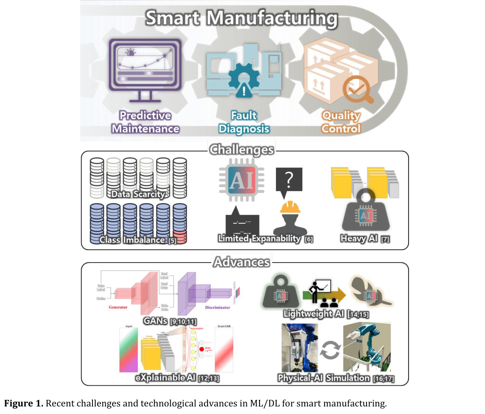
）：
首先，迁移学习、自监督学习、基于GAN的合成数据生成及联邦学习被用于解决数据稀缺和类别不平衡问题。具体而言，领域适应技术已被用于在有限样本下泛化模型性能，而GAN则被用于合成故障数据或利用未标注数据集[9,10,11]。
其次，可解释人工智能（XAI）技术正越来越多地被用于降低质量检测的计算成本，同时为操作人员提供可解释的人工智能预测。CAM和Grad-CAM等可视化技术有助于识别决策依据，而虚拟传感器重建及噪声修正方法则被开发用于提高数据质量和可信度[12,13]。
第三，轻量级实时机器学习/深度学习模型架构的研发已付出大量努力。可变形卷积、通道注意力及双向特征融合等技术已被嵌入现代网络设计，以在保持高精度的同时实现30至100 FPS的推理速度，从而支持在生产环境中的边缘部署[14,15]。
第四，数字孪生与混合建模的融合日益重要。结合基于物理的仿真与传感器驱动数据模型的混合框架在预测部件寿命方面表现出显著改进。这些方法在提高真实操作中的预测精度和可扩展性方面尤为有效[16,17]。
最后，隐私保护学习方法受到广泛关注，以解决跨企业数据共享问题。联邦学习框架支持在不就露敏感制造数据的前提下协作训练高性能模型，其有效性已在实际生产数据集上得到验证[18]。
结论
综上所述，尽管基于机器学习/深度学习的智能制造发展迅速且潜力巨大，其仍面临若干根本性挑战。这些挑战包括：获取标注高质量工业数据集的困难、在多样化操作场景中泛化能力的局限、复杂模型的可解释性不足，以及基础设施与准备程度方面的重大差距——这些问题对中小型企业而言尤为突出。
应对这些挑战需要一套综合性的分层策略。首先，增强的数据采集管道不仅需要基于传感器的监测，还需纳入基于仿真（数字孪生）的合成数据增强。跨领域整合异构结构化和非结构化数据，将有助于构建更为全面的人工智能模型。
以人为中心的可解释性也须从设计早期阶段便予以纳入。除透明化可视化外，特征重要性高亮、注意力热图及上下文解释等技术应使操作人员能够理解和验证基于人工智能的决策。这将有助于建立信任并提高现场接受度。
此外，轻量级人工智能模型架构的持续创新至关重要。在需要实时决策的边缘计算环境中，必须开发新型深度学习/机器学习方法，以在准确性与计算效率之间取得平衡。尤其值得关注的是，在保持高性能的同时最大限度降低能耗的模型设计，以及利用本地化现场数据逐步提升模型精度的联邦微调技术。
最终，人工智能制造系统的成功部署与规模化推广，需要学术界、产业界与政府之间的协调合作。当技术创新通过实证测试验证，并与体制及劳动力战略相契合时，智能制造将超越自动化，成为透明、有韧性、以人为本的智能生产系统。
参考文献
[1] Rosati R, Romeo L, Cecchini G, Tonetto F, Viti P, Mancini A and Frontoni E 2023 From knowledge-based to big data analytic model: a novel IoT and machine learning based decision support system for predictive maintenance in Industry 4.0 J. Intell. Manuf. 34 107–121
[2] Farahani B and Monsefi A K 2023 Smart and collaborative industrial IoT: A federated learning and data space approach Digit. Commun. Netw. 9 436–447
[3] Zhang J, Su H, Zou W, Gong X, Zhang Z and Shen F 2020 CADN: A weakly supervised learning-based category-aware object detection network for surface defect detection Pattern Recognit. 109 107571
[4] Chen H, Du Y, Fu Y, Zhu J and Zeng H 2023 DCAM-Net: A rapid detection network for strip steel surface defects based on deformable convolution and attention mechanism IEEE Trans. Instrum. Meas. 72 1–12
[5] Alzubaidi L, Bai J, Al-Sabaawi A, Santamaría J, Albahri A S, Al-Dabbagh B S N et al 2023 A survey on deep learning tools dealing with data scarcity: definitions, challenges, solutions, tips, and applications J. Big Data 10 46
[6] Lei Y, Yang B, Jiang X, Jia F, Li N and Nandi A K 2020 Applications of machine learning to machine fault diagnosis: A review and roadmap Mech. Syst. Signal Process. 138 106587
[7] Zhang H, Semujju S D, Wang Z, Lv X, Xu K, Wu L et al 2025 Large scale foundation models for intelligent manufacturing applications: a survey J. Intell. Manuf. 1–52
[8] Pfeifer M R 2021 SMEs in failed transition towards Industry 4.0: A case study of a Czech SME J. Innov. Bus. Best Pract. 1–16
[9] Jain S, Seth G, Paruthi A, Soni U and Kumar G 2023 Synthetic data augmentation for surface defect detection and classification using deep learning J. Intell. Manuf. 1–14
[10] Zhong H, Yu S, Trinh H, Yuan R, Lv Y and Wang Y 2025 A time-saving fault diagnosis using simplified fast GAN and triple-type data transfer learning Struct. Health Monit. 24 869–882
[11] Mehta M, Chen S, Tang H and Shao C 2023 A federated learning approach to mixed fault diagnosis in rotating machinery J. Manuf. Syst. 68 687–694
[12] Bordekar H, Cersullo N, Brysch M, Philipp J and Hühne C 2025 eXplainable artificial intelligence for automatic defect detection in additively manufactured parts using CT scan analysis J. Intell. Manuf. 36 957–974
[13] Fabiocchi D, Giulietti N, Carnevale M and Giberti H 2024 AI-driven virtual sensors for real-time dynamic analysis of mechanisms: A feasibility study Machines 12 257
[14] Wan D, Lu R, Shen S, Xu T, Lang X and Ren Z 2023 Mixed local channel attention for object detection Eng. Appl. Artif. Intell. 123 106442
[15] Zhang X, Song Y, Song T, Yang D, Ye Y, Zhou J and Zhang L 2024 LDConv: Linear deformable convolution for improving convolutional neural networks Image Vis. Comput. 149 105190
[16] Iranshahi K, Brun J, Arnold T, Sergi T and Müller U C 2025 Digital twins: Recent advances and future directions in engineering fields Intell. Syst. Appl. 200516
[17] Sahin T, Wolff D, von Danwitz M and Popp A 2024 Towards a hybrid digital twin: Physics-informed neural networks as surrogate model of a reinforced concrete beam arXiv preprint arXiv:2405.08406
[18] Piran F J, Chen Z, Imani M and Imani F 2025 Privacy-preserving federated learning with differentially private hyperdimensional computing Comput. Electr. Eng. 123 110261
13.1 基于归纳偏置的物理信息机器学习
Olga Fink^1^，Vinay Sharma^1^
^1^ 洛桑联邦理工学院（EPFL）智能维护与运营系统
电子邮件：olga.fink@epfl.ch
现状
在智能制造中，物理信息机器学习（PIML）[1]正成为构建数据高效、物理一致、可解释且可信的人工智能系统的关键推动者。制造环境的特点是流程复杂、系统相互关联，且通常存在稀疏或噪声传感器数据[2]。PIML通过将领域知识——如控制方程、结构约束或物理对称性——直接嵌入学习过程来解决这些挑战。
PIML引入三类偏置以引导模型获得可泛化且物理合理的解：归纳偏置、观测偏置和学习偏置。归纳偏置是嵌入于模型架构中的先验假设——如空间局部性[3]、守恒定律[4]或时间连续性[5]——它们约束了解空间。观测偏置源于数据的采样或表示方式，而学习偏置则产生于优化策略，如正则化或特定损失函数。
在智能制造中，由于物理过程的复杂性和多样的传感器配置，归纳偏置发挥着尤为重要的作用。关于传感器位置（关系性）、时间动态和信号特性的知识可被有效地整合为归纳偏置，以增强模型的泛化能力、可解释性和数据效率[6]。它使得模型能够在有限数据下学习，同时确保预测结果符合已知的物理和操作约束。例如，嵌入热动力学、材料行为、磨损过程或守恒定律知识的模型，更适用于预测性维护、质量保证和控制[7][8]。归纳偏置同样增强了可解释性——这对操作人员信任和安全关键场景的部署至关重要。
归纳偏置的一个重要子类是结构偏置和关系偏置[3]，它们在建模现代制造系统时日益重要，因为传感器测量往往表现出强烈的空间和时间相关性。结构偏置编码了关于系统层级化或模块化组织的假设，而关系偏置则捕捉组件之间的相互作用和相互依赖关系。图神经网络（GNN）天然能够利用这些偏置，并在智能制造中展现出强大的潜力。
GNN能够将机器、传感器和子系统建模为图中的节点，以边表示它们之间的物理、功能或空间关系。这使其非常适用于故障传播分析、根因诊断和系统级健康监测等任务。时空图神经网络[10]进一步融入了时间动态，使得跨分布式系统演变传感器数据的实时分析成为可能。
在智能制造中，GNN正越来越多地用作代理模型，以逼近复杂动力系统的行为——在这些系统中，直接仿真（如有限元或多物理场模型）计算成本极高[11][12][13]。通过从系统级传感器数据和已知组件相互作用中学习，GNN能够以高保真度模拟物理过程，从而实现快速、可扩展的诊断、控制和优化。
随着智能制造向互联的赛博物理环境演进，融合结构偏置和关系偏置——特别是通过基于GNN的PIML模型——将成为构建稳健、可扩展、透明的人工智能驱动决策系统的核心。
当前及未来挑战
代理建模是智能制造的关键推动者，为复杂的物理和赛博物理系统提供高效近似。这些模型对于实时应用至关重要——如系统诊断、控制和预测性维护——因为在这些场景中，完整规模的仿真（如有限元或多物理场模型）计算代价过于高昂。尽管前景广阔，代理模型仍面临若干与制造环境相关的开放性挑战。
一个主要需求是：在不断变化的操作条件下实现快速的在线动力学预测。模型必须在系统负载、速度或热状态发生变化时仍能提供可靠、实时的输出。此外，它们还须支持长轨迹滚动展开——即将模型输出反馈作为输入，迭代预测系统在未来长时间跨度内的状态——同时最小化误差累积，以确保预测在时间维度上的稳定性。
学习动态的可解释性和可说明性仍然至关重要。许多高性能模型表现为黑箱，使得验证或解释其输出变得困难——这在安全关键的制造环境中是不可接受的局限性。代理模型不仅需要准确，还须透明且具有物理意义。
工业系统天生具有噪声且数据丰富。模型必须处理噪声、异构的传感器输入，这些输入往往具有不同的采样率和分辨率。它们还须能够直接从观测轨迹中学习，即使在系统参数或控制方程未知的情况下，这要求强大的归纳偏置和关系偏置。
除鲁棒性和表达力之外，可扩展性同样必不可少。制造过程日益涉及多物理场相互作用（如热-机械耦合）和多保真度数据流——从高分辨率仿真到低质量实时传感器。代理模型必须连贯地整合这些信息，并在空间和时间分辨率上实现规模化。
最具挑战性的问题之一是泛化能力和外推能力。人们不仅期望代理模型在训练数据域内泛化，还期望它们能够外推到全新的系统配置和操作条件而无需重新训练。这在柔性或模块化制造场景中尤为重要，因为系统布局和用例不断演变。许多当前模型缺乏处理此类部署场景的适应性，尤其是在故障数据稀疏或不断演变的情况下[14]。
此外，逆参数推断——如从观测数据中识别过程条件、材料属性或系统级参数——以及退化、磨损或其他长期系统演化的显式建模，仍是重大挑战。这些局限性限制了代理模型在智能制造中的更广泛应用，而准确、可解释和动态的模型对于过程优化、自适应控制、质量保证和生命周期管理至关重要。
应对挑战的科学技术进展
物理信息图神经网络（PI-GNN）为解决上述挑战提供了一条有前景的路径。最近的发展将几何和物理归纳偏置集成到传统GNN中——从领域特定的物理先验（如基尔霍夫定律[15]或热通量连续性[16]）到更广泛的原则，如对称性[17]、热力学定律[18]和动量守恒[4]——从而将传统GNN扩展为PI-GNN。这些物理归纳偏置增强了GNN固有的关系偏置，使得对组件间相互作用的建模既有物理基础又计算高效，带来了以下关键能力：
- 数据效率与长轨迹预测：物理感知的归纳偏置约束了假设空间，使模型能够从稀疏、噪声数据中准确学习，并防止长期预测中出现非物理的漂移。
- 泛化能力与外推能力：模块化相互作用学习和嵌入的物理知识增强了对未见拓扑、边界和操作制度的迁移能力。
- 可解释性与可说明性：物理定律指导消息传递机制，使成对相互作用能够表示有意义的内部变量（如应力或热通量），从而支持安全关键系统的透明度。
为充分实现PI-GNN作为生产级工具的潜力，研究须在以下三个关键领域取得进展：
1. 跨领域应用与通用物理信息先验：虽然某些近期的PI-GNN——如热力学一致性网络[18]和动量保持等变图网络[4]——显示出跨领域潜力，但大多数仍受限于领域特定的归纳偏置。要适用于耦合热-机械、机电和流-固系统，未来的架构必须将通用物理定律——能量、动量、质量和电荷守恒——直接嵌入其消息传递机制。
2. 虚拟传感：估计不可观测变量——如金属增材制造中的残余应力或高粘度混合器中的内部剪切力——对过程监测至关重要。由于这些量无法直接测量，具有强物理先验的PI-GNN能够从异构、多保真度数据中推断这些内部变量。其学习到的成对消息隐含地表示接触负载等量[5]。在物理定律（如动量守恒）的指导下，这些消息可被解码为来自可观测动态的可解释变量，支持自适应控制和缺陷预防。
3. 社区基准测试：推进智能制造中的PI-GNN研究需要基准数据集，这些数据集结合高保真仿真与跨不同操作条件的真实传感器数据。这些数据集应捕捉领域偏移、传感器噪声和过程变异性，以实现对泛化能力和鲁棒性的严格评估。来自专用试验台的内部状态测量——如接触负载——对推动虚拟传感尤为重要。
当这些关键进展被整合时，将为稳健、可解释、可扩展的PI-GNN模型奠定基础，使其作为跨多种系统类型的可靠数字代理模型发挥作用，以支持下一代智能制造环境中的更智能、更可持续的系统设计、实时监测和自适应控制。
结论
物理信息机器学习正成为构建数据高效、可解释且符合物理原理的人工智能系统的关键推动者——这是在具有复杂动态、稀疏传感和安全关键约束的智能制造环境中的必备要求。
虽然图神经网络本身并非物理信息驱动，但其为表示制造系统的结构化、关系性质提供了天然框架。当通过额外的广义基于物理的归纳偏置——如守恒定律、对称性或能量一致性——进行扩展时，GNN可以作为跨多物理场、多尺度环境有效的代理模型和推理引擎。
这些物理信息图神经网络在故障传播分析、虚拟传感、长时域控制和自适应监测等任务上展现出强大潜力。它们还提供了可微分、结构化的模型，可集成到现代控制架构中。
要充分实现这一潜力，还需要在泛化、外推、动态图适应和从仿真到现实的迁移等领域开展进一步研究。开发将仿真与传感器数据相结合的标准化基准测试至关重要。
随着智能制造向自主化、赛博物理系统演进，PI-GNN等物理引导学习框架将在构建稳健、可信的人工智能解决方案中发挥日益重要的作用。
致谢
本工作得到了瑞士国家科学基金会（SNSF）资助200021_200461的支持。
参考文献
[1] Karniadakis G E, Kevrekidis I G, Lu L, Perdikaris P, Wang S and Yang L 2021 Physics-informed machine learning Nat. Rev. Phys. 3 422–440
[2] Brunton S L and Kutz J N 2022 Promises and pitfalls of physics-informed machine learning for sensing, imaging, and inference Mech. Syst. Signal Process. 171 108831
[3] Battaglia P W, Hamrick J B, Bapst V, Sanchez-Gonzalez A, Zambaldi V, Malinowski M et al 2018 Relational inductive biases, deep learning, and graph networks arXiv preprint arXiv:1806.01261
[4] Sannikov A, Lanusse F and Mandal A 2023 Momentum-preserving equivariant graph neural networks for physical dynamics modeling ICASSP 2023 – 2023 IEEE Int. Conf. Acoust. Speech Signal Process. (IEEE) pp 1–5
[5] Fink O, Wang Q, Svensson M and Kuznetsov M 2024 Physics-informed neural networks for剩余应力预测 in metal additive manufacturing Proc. Mach. Learn. Res. 220 1–16
[6] Reich Y, Kimmich A and Svensson M 2023 Incorporating domain knowledge into machine learning for manufacturing applications Adv. Eng. Inform. 56 101905
[7] Soleimani M and Choudhury M A A 2022 Physics-informed neural networks for predictive digital twins in manufacturing J. Manuf. Syst. 62 453–464
[8] Zhang H, Wang Q, Svensson M and Kuznetsov M 2024 Surrogate models for smart manufacturing: A review and future directions J. Intell. Manuf. 35 1237–1260
[9] Wu L, Wang Q, Liu J and Soleimani M 2023 Graph neural networks in smart manufacturing: A review and applications J. Manuf. Syst. 68 234–251
[10] Shi W, Chen Y, Liu J and Soleimani M 2024 Spatiotemporal graph neural networks for predictive maintenance in industrial IoT sensors 2024 IEEE Trans. Ind. Inform. 20 3345–3356
[11] Brunton S L, Proctor J L and Kutz J N 2024 Sparse identification of nonlinear dynamics for model predictive control in mechanical systems ASME J. Comput. Nonlinear Dyn. 19 041001
[12] Sargsyan K, Brunton S L and Kutz J N 2023 Surrogate models for multiscale physics in manufacturing processes AIAA Scitech 2023 Forum (AIAA) pp 1–12
[13] Reich Y and Kimmich A 2024 Hybrid digital twins: Combining physics-based models and machine learning for smart manufacturing Adv. Eng. Inform. 59 102188
[14] Mehta N, Chen Y and Shao C 2023 Generalization challenges in surrogate models for smart manufacturing Proc. ASME IDETC/CIE 2023 (ASME) vol DETC2023 pp 1–8
[15] Ruderman A, Rabinowitz G and Gove R 2022 Physics-informed graph neural networks for electrical circuit modeling IEEE Trans. Neural Netw. Learn. Syst. 33 4521–4532
[16] Zhao Z, Wang Q and Kuznetsov M 2024 Heat flux-aware graph neural networks for thermal modeling in manufacturing processes Int. J. Heat Mass Transf. 220 124912
[17] Finzi M, Weller S and Roscher K 2024 Symmetry in graph neural networks for physical systems NeurIPS 2024 (Curran Associates) pp 1–15
[18] Yang L, Zhang H and Karniadakis G E 2024 Thermodynamics-consistent neural networks for physical systems modeling arXiv preprint arXiv:2401.05873
生成式AI与制造设计
15. 生成式AI与制造设计
Faez Ahmed¹, Wei "Wayne" Chen², Mark Fuge³
¹ 马萨诸塞理工学院机械工程系，美国剑桥
² J. Mike Walker '66 机械工程系，德克萨斯A&M大学，美国大学城
³ 苏黎世联邦理工学院机械与过程工程系，瑞士
E-mail: faez@mit.edu
现状
机器为何尚不能设计其他机器（yet）？ 工程师们长期想象着一个机器能够设计其他机器的世界 [1,2]，而生成式AI系统（如扩散模型和大语言模型）的最新进展使这一梦想重新焕发生机。这些系统已经能够起草代码、总结文档，甚至提出初步的工程概念。那么，为何航空航天公司没有利用它们从头开始设计和认证整个无人机呢？
本文认为，问题不在于想象力的匮乏，而在于一系列科学和组织层面的障碍。为了描绘这一图景，我们沿两个轴来划分问题（图1

）。其中一个轴是设计深度：即AI在建模三维几何、模拟代理模型、设计优化或不确定性量化等专门任务中的表现能力。另一个轴是设计广度：即AI在跨领域和整个产品生命周期中整合数据和知识的能力。
每个轴都受到两种约束。首先是科学上的局限——现有方法本身尚不具备相应能力。其次是采纳障碍——涉及信任、数据、互操作性和组织惯性。这四个象限（图1）共同揭示了AI在现实工程设计中为何承诺多于实践的关键原因。本文首先综述其中部分障碍，然后提出一份简要的路线图以克服它们。
当前与未来挑战
1.1 科学障碍
1.1.1 广度方面的科学障碍：为何AI难以跨越设计全过程
尽管学习设计广度的障碍很多，但主要问题有五个：（1）设计表示之间缺乏互操作性，（2）表示的异质性，（3）模型推理能力有限，（4）人机协作效率低下，（5）无法探索高维设计空间。
广度的第一个障碍是数据碎片化。现代工程生命周期产生了大量信息，包括需求文档、CAD模型、仿真结果、测试日志、物料清单和制造文档，但这些数据散布在互不兼容的系统之中。没有一致、可互操作的历史记录和格式，AI系统就无法学习跨越整个设计生命周期的端到端映射或模型。
第二个问题是异质性。不同领域的表示形式各异——网格、曲样、点云、物料清单——而且子系统的交互方式高度耦合且呈非线性。设计往往需要在多代码环境中使用多学科、多保真度的模型 [3]。当今的领域特定代理模型在分布外（OOD）区域中表现失效。现实工程设计可能需要建模超出原始训练数据的行为，例如飞机面临颤振、控制失稳或电子-热交互等问题。
第三个障碍是现有模型在深度推理和规划能力上的差距。语言模型能够缝合来自不同领域的思想 [4]，但其产生幻觉的倾向 [5] 使其作为任务关键系统的集成器变得不可靠。目前，它们通常仅限于协助头脑风暴或连接高层知识 [6]。生成看似合理却不安全或性能不佳的设计的风险，限制了它们的应用范围。
第四个障碍是人机协作科学尚不成熟。我们尚未理解工程师如何在生命周期中实际与现代AI工具互动，如何建立信任，如何传达隐性目标，如何分配决策权，以及机器与人各自最适合扮演什么角色 [7]。
最后，第五个障碍是许多现有AI模型难以生成具有变革性的详尽设计。基于历史数据训练的模型能够很好地插值，但它们能否真正有所发明？随着设计空间呈组合增长，基于蛮力的数据驱动或优化方法变得难以为继。我们需要能够组合知识并高效、有效搜索的可靠方法。然而，当今的方法和基准几乎完全专注于狭窄的单一阶段任务，而非跨阶段创新。
1.1.2 深度方面的科学障碍：为何窄化模型仍然失效
实现深度方面的科学障碍可分为四类：（1）泛化困难，（2）缺乏模型诊断，（3）输出的快速准确验证，（4）AI与现有工具链的整合。
首先，即使在单一任务中，AI也难以泛化。工程领域的数据集稀疏、专有且任务特定。迁移学习在计算机视觉等领域已显示出减少数据需求的潜力 [8]，但在工程设计中效果较差，因为数据、表示和问题的异质性很高。例如，在汽车空气动力学上训练的模型不太可能迁移到无人机机翼。工程师需要一种方法来了解模型何时在其训练流形内运行，何时不在。
第二个挑战是理解机器学习模型何时以及为何失效。仿真工具（如CFD求解器）可以通过网格收敛等方法进行检验。相比之下，机器学习模型往往难以调试，其误差边界难以解释，尤其是在训练数据被隐藏的情况下。工程师需要校准的不确定性估计和透明的诊断，以实现机器学习的可靠使用。
第三个障碍是验证。如果AI提出了一个设计方案，我们如何知道它满足我们的需求？在某些情况下，基于物理的检查是可行的，但在大多数应用中，仅靠基于物理的验证可能不够充分，而人工验证又难以实现。
最后一个障碍是整合的需求。AI往往试图取代成熟工具，而非与之互补。在这类情境中，混合工具可能大有裨益：AI加速优化器、建议实验方案或引导仿真——同时与现有设计流程、工具和人类用户整合。
1.1.3 科学期望的未来状态：机器必须学会什么
机器设计机器需要什么条件？答案在于四种广泛的AI能力。
首先，组合能力：AI必须识别跨领域耦合和涌现现象 [3]。它必须理解局部几何如何影响全局气动弹性，或增材制造路径如何影响微观结构进而影响疲劳寿命。
其次，抽象能力：AI应学会在适当的保真度下构建和选择正确的代理模型，并知道这些抽象何时失效。像莱特兄弟一样，它应能够设计实验来修正自己的理论。
第三，不确定性下的决策：AI必须智能地规划实验和仿真，跨任务复用知识，量化迁移不确定性，并认识到何时"足够"就是足够。
第四，与人类和社会的协作：AI必须能够引出意图、展示权衡、为其决策辩护，并经受伦理和监管审查。它必须知道何时寻求帮助。
实现这一目标路上的里程碑包括：检测错误理论、发现涌现危险、重构表述不当的问题、揭示隐藏的权衡、在约束下适应、在多个领域展示真正的创新并建立可信的类比。最终，组织本身也必须准备好吸收这些进步。
1.2 采纳障碍
1.2.1 广度方面的采纳障碍：组织惯性
即使方法已经熟练，组织仍面临实际障碍。互操作性是一个问题：跨工具、供应商和遗留系统的数据集成既昂贵又难以管理和维护。知识产权和隐私也是敏感话题。公司需要确保其专有模型和数据集不会泄露到公共系统或流向其他公司。
反馈循环是另一个问题。现实设计场景中的许多关键目标——如检验便利性、可维护性、不断演变的监管优先级——并未明确写入AI目标。随着情况变化，人类必须能够施加新的约束，AI工具也必须能够适应。
流程契合是一个重要障碍。工程工作流程依赖版本控制、迭代审查和认证里程碑。不符合这些流程的AI工具往往被弃用。文化因素也起作用：工程师对"有创意"的机器持怀疑态度，许多人乐于自己完成工作。
与此同时，劳动力也缺乏培训。土木、机械或航空航天等领域的工程师接受的训练是解读CFD、FEA或物理实验，而非AI方法。我们在设计和制造中的AI工具和培训两方面均存在欠缺。
1.2.2 深度方面的采纳障碍：信任与认证
对于深度导向的工具，核心的采纳问题是信任 [9]。首先，工程师想知道模型基于了什么：多少数据，什么质量，什么多样性。如今，这类"数据表"和上下文信息几乎不存在。这一问题因与现有工具缺乏整合而加剧。其次，工程师无法依赖缺乏稳健性、泛化能力、可解释性、透明性、可重复性和可问责性的模型 [10]。
认证增加了另一个障碍。例如，航空监管机构要求可审计的证据链。如果一个设计来自黑箱AI，谁来签字批准就成了一个问题。"接近现有设计"的增量修改——如通过迭代优化获得的设计——可能更容易认证，但这会抑制激进的AI支持创新。
投资回报率（ROI）也难以评估，因为缺乏标准化的评估方法。AI何时优于经典方法？在哪些指标上？在什么问题下？改善多少？除非有明确的比较证据且演示能够进入生产阶段，否则企业相对于可信工作流程的AI ROI可能难以估算。
1.2.3 深度方面的采纳障碍：信任与认证
对于深度导向的工具，核心的采纳问题是信任 [9]。首先，工程师想知道模型基于了什么：多少数据，什么质量，什么多样性。如今，这类"数据表"和上下文信息几乎不存在。这一问题因与现有工具缺乏整合而加剧。其次，工程师无法依赖缺乏稳健性、泛化能力、可解释性、透明性、可重复性和可问责性的模型。
应对挑战的科技进步
我们基于四大支柱来讨论研究和部署的路线图：数据和基础设施、模型能力与泛化、劳动力与组织、信任与合规。（四大支柱、三级视野、明确指标）
2.1 研究路线图
数据和基础设施。 我们需要开放且与设计相关的数据集和基准 [11]，能够跨越模态、学科和生命周期阶段，并衡量可制造性和ROI等指标 [12]。共享实验平台应允许进行大规模、可控制的比较。
模型能力与泛化。 多模态基础模型和基于智能体的架构能够解读多样的工程制品并管理相互依赖。但它们必须超越插值，走向稳健的OOD泛化：物理先验 [13]、因果规则 [14]、主动学习 [15] 和元学习 [16] 可能至关重要。工程领域也需要样本效率和导航多模态的能力。
劳动力与组织。 我们需要民族志和人机交互研究来了解工程师的实际工作方式，同时需要新的互操作性标准来简化工具链整合。为缩小学术研究与行业实践之间的差距，应研究AI在真实工程团队中的整合 [17]。教育也必须为"AI精通"的工程师应对混合工作流程和现实挑战做好准备。
信任与合规。 模型必须产生可解释、可审计的设计追溯记录，符合认证要求 [18]。标准化评估框架应与监管期望相匹配。
2.2 部署路线图
数据和基础设施。 近期优先事项是制定数据治理标准、统一平台并策划用于基准测试的开放数据集。跨行业投资生成跨越领域和多模态表示的大规模合成和真实数据集，将扩大GenAI的适用范围。最终，允许AI以自监督方式访问求解器，将使其能够进行自身可扩展的数据集增强。
模型能力与泛化。 早期工作应聚焦于模型准确性、效率和约束可行性。一旦实现，焦点可以转向稳健泛化、处理多目标以及可靠的OOD性能。最终，AI应走向以最少人工指导处理系统级设计任务。
劳动力与组织。 短期内，组织应启动AI素养计划、更新课程并运行试点项目，以培养技能和适应工作流程。进展需要正式的合作框架、混合团队和共享最佳实践。长期目标是建立一种AI精通的文化，使工程师能够在劳动力研究和采纳指标的指导下与GenAI进行常规协同设计。
信任与合规。 短期工作必须将AI生成的设计映射到现有认证标准，并建立伦理/知识产权指南。标准化验证、开放基准和问责框架也将至关重要。长期来看，AI设计产品的正式认证路径将逐步形成，由监管机构、工业界和学术界共同确保可靠性、安全性和合规性。
2.3 衡量进展：从基准到实际成果
指标必须追踪高层系统成果和技术细节。在系统层面：设计周期缩短、首次认证通过率提高、跨学科整合范围扩大，以及劳动力的采纳与满意度。在技术层面：有效性、样本效率、校准的不确定性、OOD稳健性、可制造性和ROI是关键。
重要的是，指标必须在四个象限之间解耦——广度与深度、科学与采纳——以使利益相关者能够准确看到进展发生在哪里、停滞在哪里。在设计和制造领域建立大量多样化和现实的基准以衡量进展，仍需要大量的研究和投资 [19]。相比之下，由于多样的基准 [20]，LLM的进展得到了加速——设计和制造领域能否带来同样的益处？
结语
机器为何不能设计机器？ 机器尚不能设计机器的原因并非一个单一的缺失突破，而是科学和制度层面赤字的组合。从科学上讲，我们的模型缺乏跨异质性、高度耦合领域的稳健泛化、不确定性量化和系统级推理能力。从制度上讲，我们缺乏可互操作的数据基础设施、认证框架、文化接受度和劳动力整合。
前进的道路清晰明确：建立与领域相关的基准和数据集；用物理、不确定性和组合推理强化模型；重新设计人机协作的工作流程；将信任和认证流程编纂成法。只有在广度和深度两个维度上同时解决科学和采纳问题，我们才能将AI设计从精巧的演示转化为经过认证的工程实践。
致谢
Ahmed PI感谢美国国家科学基金会 CAREER Award No. 2443429 的支持。
参考文献
[1] Finger S and Dixon J R 1989 A review of research in mechanical engineering design. Part I: Descriptive, prescriptive, and computer-based models of design processes. Research in engineering design 1 51–67
[2] Antonsson E K and Cagan J 2001 Formal engineering design synthesis. (Cambridge University Press)
[3] Antonau I, Warnakulasuriya S, Baars S, Baimuratov I, Wittenborg T, Kreuzeberg L, Attravanam A and Wüchner R 2025 Challenges in realizing 3rd generation multidisciplinary design optimization. Advances in Computational Science and Engineering 5 1–21
[4] Bordas A, Le Masson P, Thomas M and Weil B 2024 What is generative in generative artificial intelligence? A design-based perspective. Research in Engineering Design 35 427–443
[5] Ji Z, Lee N, Frieske R, Yu T, Su D, Xu Y, Ishii E, Bang Y J, Madotto A and Fung P 2023 Survey of hallucination in natural language generation. ACM computing surveys 55 1–38
[6] Ren R, Ma J and Luo J 2025 Large language model for patent concept generation. Advanced Engineering Informatics 65 103301
[7] Zhang G, Raina A, Cagan J and McComb C 2021 A cautionary tale about the impact of AI on human design teams. Design studies 72 100990
[8] Zhuang F, Qi Z, Duan K, Xi D, Zhu Y, Zhu H, Xiong H and He Q 2020 A comprehensive survey on transfer learning. Proceedings of the IEEE 109 43–76
[9] Siau K and Wang W 2018 Building trust in artificial intelligence, machine learning, and robotics. Cutter business technology journal 31 47
[10] Niresi K F, Bissig H, Baumann H and Fink O 2024 Physics-enhanced graph neural networks for soft sensing in industrial internet of things IEEE Internet Things J.
[11] Phuyal S, Bista D and Bista R 2020 Challenges, opportunities and future directions of smart manufacturing: A state-of-the-art review Sustain. Prod. Consump. 23 287–302 (doi: 10.1016/j.spc.2020.06.002)
[12] Battaglia P W, Hamrick J B, Bapst V, Sanchez-Gonzalez A, Zambaldi V, Malinowski M, Tacchetti A, Raposo D, Santoro A, Faulkner R et al 2018 Relational inductive biases, deep learning, and graph networks arXiv:1806.01261
[13] Sharma V and Fink O 2025 Dynami-CAL GraphNet: A physics-informed graph neural network conserving linear and angular momentum for dynamical systems arXiv:2501.07373
[14] Sharma V, Oddon R T, Tesini P, Ravesloot J, Taal C and Fink O 2025 Equi-Euler GraphNet: An equivariant, temporal-dynamics informed graph neural network for dual force and trajectory prediction in multi-body systems arXiv:2504.13768
[15] Zhu G, Wang S and Wang L 2024 Heterogeneous graph neural network for modeling intelligent manufacturing systems Meas. Sci. Technol. 36 015114
[16] Peng J-Z, Hua Y, Li Y-B, Chen Z-H, Wu W-T and Aubry N 2023 Physics-informed graph convolutional neural network for modeling fluid flow and heat convection Phys. Fluids 35 085104
[17] Xue T, Gan Z, Liao S and Cao J 2022 Physics-embedded graph network for accelerating phase-field simulation of microstructure evolution in additive manufacturing npj Comput. Mater. 8 201
[18] Zhao M, Taal C, Baggerohr S and Fink O 2025 Graph neural networks for virtual sensing in complex systems: Addressing heterogeneous temporal dynamics Mech. Syst. Signal Process. 230 112544
[19] Yu B, Yin H and Zhu Z 2018 Spatio-temporal graph convolutional networks: A deep learning framework for traffic forecasting Proc. IJCAI 3634–3640
[20] Sanchez-Gonzalez A, Godwin J, Pfaff T, Ying R, Leskovec J and Battaglia P 2020 Learning to simulate complex physics with graph networks Proc. ICML 8459–8468
[21] Shivaditya M V, Alves J, Bugiotti F and Magoulès F 2022 Graph neural network-based surrogate models for finite element analysis Proc. DCABES 54–57
[22] Maurizi M, Gao C and Berto F 2022 Predicting stress, strain and deformation fields in materials and structures with graph neural networks Sci. Rep. 12 21834
[23] Zhao Y, Li H, Zhou H, Attar H R, Pfaff T and Li N 2024 A review of graph neural network applications in mechanics-related domains Artif. Intell. Rev. 57 315
[24] Donon B, Clément R, Donnot B, Marot A, Guyon I and Schoenauer M 2020 Neural networks for power flow: Graph neural solver Electr. Power Syst. Res. 189 106547
[25] Satorras V G, Hoogeboom E and Welling M 2021 E(n) equivariant graph neural networks Proc. ICML 9323–9332
[26] Tierz A, Alfaro I, González D, Chinesta F and Cueto E 2025 Graph neural networks informed locally by thermodynamics Eng. Appl. Artif. Intell. 144 110108
赋能机器学习的语义框架
15. 生成式AI与制造设计
（此节内容未包含于本次翻译的原文件中。）
16. 赋能机器学习的语义框架
Arild Waaler1, Martin G. Skjæveland1 and Dimitris Kyritsis1
1 Department of Informatics, University of Oslo, Norway
E-mail: arild@uio.no
现状
当今工程实践在根本上依赖于技术信息，而这些信息以文档为基础，散布于各种工具与领域之中，并与孤立的组织结构相绑定。尽管各学科在不同程度上采用了本体（ontology）等形式化模型，但在整个工程生命周期中，却缺乏一个共享的基础来构建系统级知识。因此，所谓的数字线程——即从需求出发，经由设计、实现直至运营的可追溯连接——常常断裂或模糊不清。
与此同时，人工智能，特别是机器学习和生成式模型，正在迅速被整合到工程工作流程中。然而，在缺乏明确定义的对象和关系的情况下，这些方法难以产生可信的结果。当结构隐含或缺失时，AI模型变得不可靠，工程师们也无从验证或解释AI模型的输出。这造成了AI的承诺与高风险工程实践的现实之间的巨大鸿沟——在这些场景中，精确性、安全性、可信性和可追溯性是不可妥协的。
当前与未来的挑战
为解决这一问题，亟需建立既可验证又易于理解的结构化工程知识表示。这需要使跨工程学科的专家用户能够验证、复用并完善支撑AI和自动化的信息模型及数据模型。关键在于，此类验证应以既定的系统工程原理为基础：抽象用于信息隐藏，层次分解用于模块化，拓扑用于管理流，接口用于封装，以及分类用于复用。
形式化验证的要求更为严格：需要一种支持可判定推理的逻辑基础。这包括定义和检查类公理、检测不一致性，以及在可判定的逻辑子集中推导出后果的能力。缺乏这样的基础，技术信息模型就无法被可靠地查询、复用或在规模上集成。
技术信息的结构缺失同样削弱了可扩展工业知识图谱的建设努力。尽管RDF [8]和OWL [9]等知识图谱和本体标准已被广泛使用，但它们往往缺乏与工程实践的连接，无法捕捉系统的结构逻辑。我们需要一个有原则的基础——将工程语义与基于语义的表示相连接，既作为建模框架，又作为机器可读的AI管道输入 [1]。
要在工程中实现数字化转型，我们需要允许工程师以人类可读且机器可执行的方式描述系统的语言。这类语言必须支持抽象、模块化、接口封装和复用——这些都是系统工程的核心原则。它们还必须允许工程师表达部分的、不断演化的结构，反映系统模型在任何时刻都不可能完整的现实。
与此同时，为支持自动化、AI和形式化推理，这些语言必须具有定义良好的逻辑基础。OWL等本体语言提供基于描述逻辑的精确语义 [10]，支持分类、一致性检查和推理。然而，它们往往不适合捕捉工程系统的丰富结构和上下文：它们缺乏对系统级构造（如分解层次结构、连接关系）、模态（如预期配置与实际配置）以及生命周期特定视图的原生支持。
这揭示了一个根本性的概念鸿沟。工程需要表达内涵结构（intensional structure）的建模语言——即系统元素的角色、约束和关系定义——而基于本体的方法通常侧重于外延分类和静态分类体系。现有的工具和语言很少支持以一种可递增开发、复用和验证的方式一致地表达内涵。
这一鸿沟也体现在知识图谱的构建中：现有的本体语言提供了语义严谨性，却缺乏工程师建模真实系统所需的结构表现力。因此，可扩展的工业知识图谱仍然难以构建和维护。此外，许多先进的ML算法依赖于结构化的、语义丰富的图输入——这一需求在工程领域尚未得到充分满足 [1]。
弥合这些鸿沟需要重新思考工程知识的表示方式：从工程实践的需求出发，同时将模型建立在逻辑语义的基础上，并使能自动化。以下是关键挑战：
- 如何定义既可读又逻辑精确的结构规格？
- 如何在部分模型和不断演化的设计中保持可追溯性？
- 如何将特定领域的工程实践与共享的本体基础相协调？
- 如何将人类驱动的设计与机器生成的模型结构相结合？
为应对这些挑战，一个新的框架必须将内涵作为第一公民（first-class citizens），使模型具有上下文性、组合性、语义透明性，并且对AI友好。
应对挑战的科学与技术进展
弥合工程建模需求与形式化本体能力之间的差距，需要一种新型框架——将系统工程的表达能力与形式化逻辑的精确性相结合。信息建模框架（Information Modelling Framework, IMF）[7, 2]正是为满足这一需求而设计。它提供了一个简洁而全面、可扩展的核心语言，使工程师能够以形式化可解释、可递增构建且可验证的方式表达系统元素的内涵定义。
IMF的基础在于内涵与外延之间清晰的分离。一个IMF元素表达的是一个结构规格——即系统元素"应为何"的参数化定义，而非"当前存在什么"。每个这样的规格都附带一个切面（aspect）：一种结构化的上下文，捕捉信息域（如功能、实现）、模态（如预期的、实际的）以及生命周期视角（如产品、项目），见图1
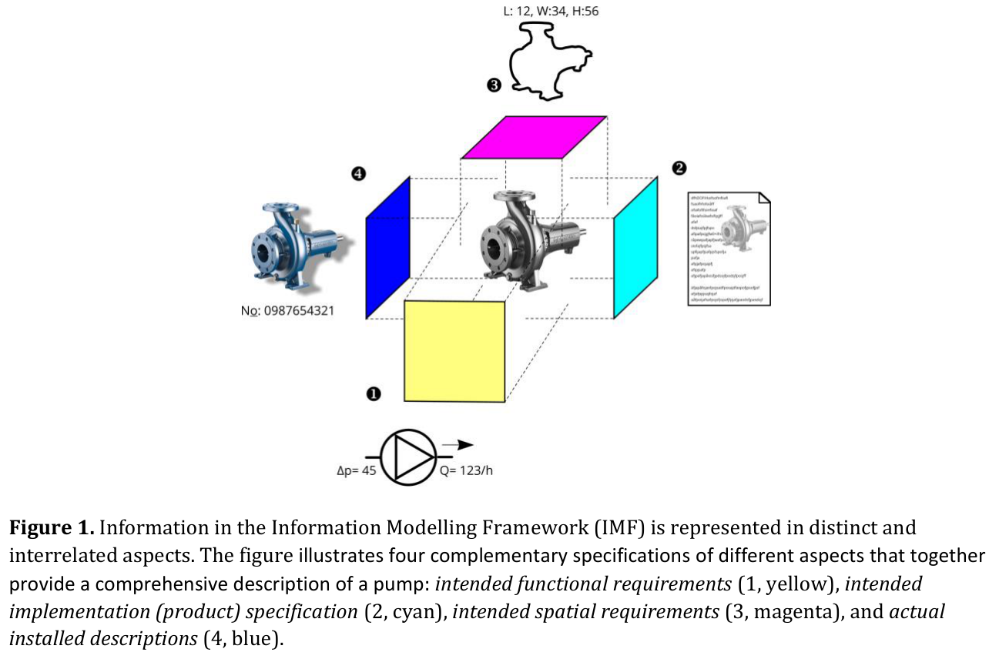
。这种框架使得 alternative designs（替代设计方案）、需求与实现的对比，以及不同利益相关方的视图——都能够在统一的形式化体系中得到连贯的建模。
形式上，IMF使用来自类型λ演算的构造来定义结构规格。诸如hasPart、connectedTo和hasTerminal等关系被解释为函数应用，其语义建立在内涵逻辑的基础上。由此产生的模型可以被翻译为外延公理集（例如在描述逻辑中），使形式化推理工具能够验证性质、检测不一致性并支持模型补全。
由于IMF模型建立在形式化语义的基础上并可序列化为知识图谱（RDF），它们成为工业知识图谱的自然基础。这些图谱在语义上丰富，按照系统工程逻辑构建，且机器可读。此外，IMF模型的RDF表示可以被先进的ML管道直接消费，为AI模型提供格式良好、经语义验证的工程结构。
IMF在一个公开可访问的规范中定义 [7]，并得到资产信息建模推荐实践 [2] 的支持。此外，IMF项目还发布了其语义技术资源，包括其OWL本体和SHACL形状模式 [3]。IMF不是一个固定的标准，而是一个结构化、形式化、开放式的模型开发平台。它已在欧盟资助的项目RE4DY [4]、SM4RTENANCE [5]和Tec4MaaSEs [6]中得到探索——见图2
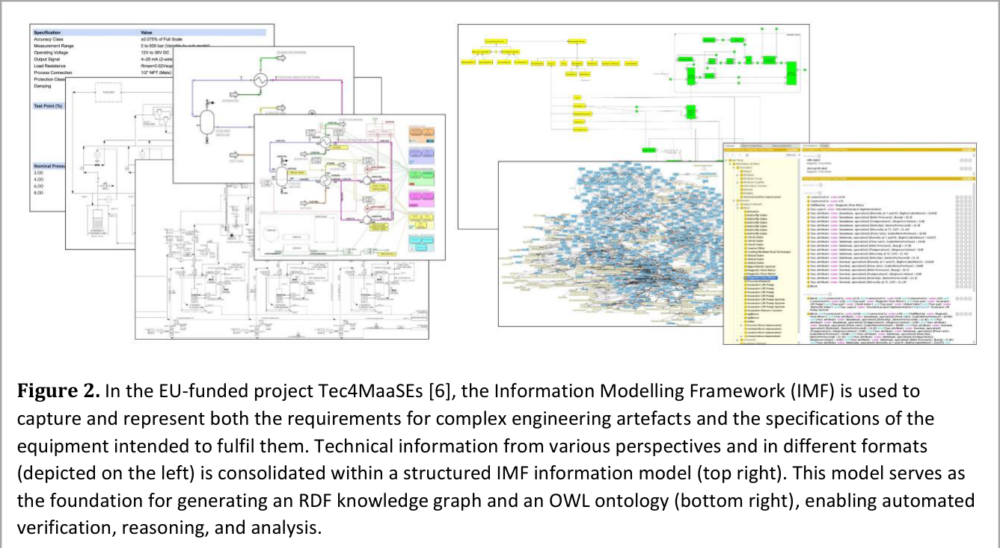
的示例。
结论性 remarks
信息建模框架（IMF）为构建工程知识提供了一个有原则的基础，既支持人类理解、AI驱动的自动化和形式化验证。通过弥合系统建模实践与基于逻辑的本体之间的鸿沟，IMF使新一代模块化、语义精确且跨上下文适应的工程工具成为可能。
关键在于，IMF为可扩展的工业知识图谱提供了基础。其RDF序列化格式既支持语义集成，也支持直接输入机器学习工作流——这是工程AI的关键使能器。
IMF不仅是一种静态语言，更是一个研究和创新计划。它邀请工程师、逻辑学家、数据科学家和工具开发者共同合作，扩展其能力并将其应用于现实世界的挑战。通过将系统原理与形式化语义相结合，IMF支持可信、可解释且可扩展的数字工程基础设施的建设。
致谢
本研究得到欧洲委员会在Horizon Europe项目RE4DY（资助号101058384）、SM4RTENANCE（资助号101123490）和Tec4MaaSEs（资助号101138517）中的部分支持。
参考文献
[1] Waaler A and Kiritsis D 2025 Information Modelling Framework for Digital Engineering Digital Engineering 4 100042 doi:10.1016/j.dte.2025.100042
[2] DNV 2024 Asset Information Modelling Framework: Structuring Digital Assets DNV-RP-0670 Online: https://www.dnv.com/digital-trust/recommended-practices/asset-information-modelling-dnv-rp-0670/ (accessed June 2025)
[3] IMF Programme IMF Semantic Technology Resources. 2025. Online: http://ns.imfid.org (accessed June 2025)
[4] RE4DY Project 2025. Online: https://re4dy.eu (accessed June 2025)
[5] SM4RTENANCE Project 2025. Online: https://sm4rtenance.eu (accessed June 2025)
[6] Tec4MaaSEs Project 2025. Online: https://tec4maases.eu (accessed June 2025)
[7] IMF Programme 2025 IMF Overview and Manual Online: https://www.imfid.org/ (accessed June 2025)
[8] W3C. RDF 1.1 Primer. 2014. https://www.w3.org/TR/rdf11-primer/ (accessed June 2025)
[9] W3C. OWL 2 Web Ontology Language Document Overview (Second Edition). 2012. https://www.w3.org/TR/rdf11-primer/ (accessed June 2025)
[10] Franz Baader, Ian Horrocks, Carsten Lutz, Uli Sattler, An Introduction to Description Logic. Cambridge University Press. 2017.
数字孪生赋能自主制造的物理预测控制
17. 数字孪生赋能自主制造的物理预测控制与实时决策
建模与仿真构建了机器学习代理模型，用于模型预测控制（MPC），实现与物理系统的双向反馈；该方法已在定向能沉积（DED）中得到验证，采用时间序列密集编码器（TiDE）预测熔池特征并优化激光功率，从而提高质量并减少缺陷[4]。
尽管取得了上述最新进展，当前制造业中部署的大多数数字孪生仍远未实现完全自主，仍需人类专家参与循环，以验证模型更新并处理边缘情况决策——即超出正常工况的罕见或异常情景[5]。展望未来，制造业数字孪生必须从"数字阴影"演进为自优化智能体，不仅能够预测故障、优化工艺，还能学习不断演变的工艺动态、适应新产品，并在多个制造工艺之间协同作业，从而为下一代数字孪生奠定基础——驱动精益化、弹性化和可持续的制造生态系统[6]。
当前及未来面临的挑战
现代制造工艺（如增材制造和精密焊接）涉及复杂的时空物理特性，难以在实时条件下进行建模。尽管有限元法或计算流体力学等高保真方法能够捕捉这些动态，但其计算成本过高，无法应用于闭环控制，因此快速机器学习代理模型至关重要[7]。通过从传感器和仿真数据中提取模式，这些代理模型能够在边缘设备上实现毫秒级预测，从而支持超低延迟推理。然而，大多数数字孪生仅孤立地建模时间或空间动态，且许多系统将工艺视为黑箱而非学习其底层物理规律，这在从稀疏数据中发现物理规律和泛化至新工况方面均构成挑战[8]。在高成本工艺中数据稀缺的状况进一步加剧了上述困难，尤其是针对罕见缺陷的情形，限制了标定和自适应能力。尽管离线再训练可以恢复精度，但在不中断生产的情况下实现连续的在线更新仍然困难重重；Koopman算子和降阶模型等方法虽具潜力，但仍需进一步研究[9]。
在数字孪生范式中，从代理建模过渡到实时决策需要贯穿系统全生命周期的不确定性感知机器学习与决策，这通常涉及模型保真度与计算效率之间的权衡。例如，当使用离散事件仿真[10]实现MPC时，模型与优化方法的选择（如使用简化线性近似的二次规划，或使用详细物理模型进行数值优化）会极大地影响精度、决策频率和整体控制质量。此外，由于系统行为在不同工况或生命周期不同阶段可能发生变化，有效且数据高效的连续模型自适应方法仍然是未解决的难题。
上述挑战凸显了持续验证、确认和不确定性量化（VVUQ）的重要性，这仍是制造业数字孪生部署中的一大障碍[3,6]。尽管ISO 23247（制造业数字孪生框架）等标准提供了结构性指导，但并未涉及可信度评估或VVUQ。数字孪生本身具有复杂性，面临认知不确定性 aleatory不确定性和未知不确定性，需要稳健的VVUQ来确保可靠性。数字孪生的动态特性要求在条件演变过程中持续进行验证以保持准确性，这也引发了对更新频率和计算可行性的思考。
微观组织在制造中起着关键作用，其演化取决于几何结构和工艺条件，并最终决定决定构件性能的力学、热学和化学性能。理解工艺—微观组织—性能之间的关系对于优化至关重要[11]，然而预测零件尺度的演化仍然具有挑战性，原因包括仿真成本高、物理现象的随机性以及高速或高温工艺中原位监测的局限性。例如，在增材制造中，快速热循环产生非线性的、路径相关的晶粒结构，难以建模[12]。这些复杂性也影响了几何、材料和工艺的协同设计，其中微观组织非均匀性使优化变得更加复杂。应对这一挑战需要在早期设计决策中纳入与微观组织相关的目标，并通过自适应工艺优化加以细化。
应对挑战的科学和技术进展
为建模跨时空演化的动态制造工艺，机器学习方法（如时空神经算子、图神经网络和Transformer编码器）已被用于从传感器数据、仿真数据和历史日志中提取模式。异构数据融合已通过潜变量高斯过程（LVGP）和时间融合Transformer等方法得到解决[13]，而自适应采样、多保真度建模、迁移学习和合成数据预训练有助于缓解数据稀缺问题。不确定性通过高斯过程、贝叶斯神经网络或深度集成模型来处理，这些模型提供经过校准的置信区间，以支持风险感知决策。为满足性能需求，轻量化架构和优化的边缘部署实现了快速、成本高效的推理。在这些进展的基础上，预训练神经网络现在作为代理模型用于快速评估，支持高效策略学习以将状态映射到动作，并生成概率预测以指导不确定性感知的实时决策[15]。
为确保代理模型在整个系统生命周期中保持可靠性，近期研究聚焦于连续模型验证[16]和自适应。这不仅涉及检测模型何时与物理系统不再对齐，还涉及以最少性能损失的方式高效更新模型。概念漂移检测的新兴方法提高了实时监控的稳健性，尤其对于神经网络和多变量预测框架[17]。同时，轻量化自适应方法（如低秩微调）能够以最小数据实现快速更新，在适应不断演化的制造条件的同时保持保真度。这些进展对于赋能可信的自改进数字孪生系统至关重要，使其能够在动态操作环境中支持弹性化和自适应的决策。
人工智能与机器学习领域的最新进展正在改变制造业中微观组织的预测和优化方式，以应对广泛实验的不切实际性和基于物理建模的高计算成本[18]。多尺度建模方法现在将宏观加工条件与微观和介观尺度的材料行为相结合，从而更准确地预测微观组织演化及其对材料性能的影响。这些模型正越来越多地通过数据驱动技术加以增强，例如生成对抗网络（GANs）生成逼真的微观组织用于虚拟设计[19]，卷积神经网络（CNNs）从微观组织图像预测应力-应变曲线和材料性能，递归神经网络（RNNs）通过学习路径敏感的塑性响应来捕捉历史依赖性塑性[12]。这些能力被嵌入到集成优化框架中，利用贝叶斯优化、进化算法和迁移学习来发现能够产生最佳微观组织和性能目标的工艺条件。通过将这些方法扩展到几何、材料和工艺的协同设计，深度学习和逆优化能够考虑非均匀微观组织演化[20]。尽管协同设计是高维问题，但JAX-FEM等可微分物理建模方法支持基于梯度的优化，直接将设计变量与微观组织结果关联起来，在保持物理保真度的同时加速最优解的搜索。
结语
总之，推进制造业数字孪生需要解决以下关键需求：时空建模、基于代理模型的实时控制、不确定性量化和微观组织感知协同设计。最前沿的物理信息机器学习方法（包括时空神经算子、图神经网络和Transformer编码器）提供了统一的工艺建模能力。可靠部署还依赖于通过快速代理模型、多模态数据融合、自适应采样、迁移学习、概念漂移检测和多尺度预测框架实现的连续模型更新。展望未来，下一代自主数字孪生将整合网络安全联邦学习、可扩展数据基础设施、可信人工智能以及边缘到云的集成，从而实现自学习和自适应决策。这些进展将支持具备工艺、材料和设计并发优化能力的弹性化、可持续和敏捷制造。
参考文献
[1] Karkaria, V., Goeckner, A., Zha, R., Chen, J., Zhang, J., Zhu, Q., Cao, J., Gao, R. X., and Chen, W., 2024, "Towards a Digital Twin Framework in Additive Manufacturing: Machine Learning and Bayesian Optimization for Time Series Process Optimization," J. Manuf. Syst.
[2] van Beek, A., Nevile Karkaria, V., and Chen, W., 2023, "Digital Twins for the Designs of Systems: A Perspective," Struct. Multidiscip. Optim., 66(3), p. 49.
[3] 2024, Foundational Research Gaps and Future Directions for Digital Twins, National Academies Press, Washington, D.C.
[4] Chen, Y.-P., Tsai, Y.-K., Karkaria, V., and Chen, W., 2025, "Uncertainty-Aware Digital Twins: Robust Model Predictive Control Using Time-Series Deep Quantile Learning," J. Mech. Des., 148(021702).
[5] Zemskov, A. D., Fu, Y., Li, R., Wang, X., Karkaria, V., Tsai, Y.-K., Chen, W., Zhang, J., Gao, R., Cao, J., Loparo, K. A., and Li, P., 2024, "Security and Privacy of Digital Twins for Advanced Manufacturing: A Survey."
[6] Shao, G., Hightower, J., and Schindel, W., 2023, "Credibility Consideration for Digital Twins in Manufacturing," Manuf. Lett., 35, pp. 24–28.
[7] Karkaria, V., Tsai, Y.-K., Chen, Y.-P., and Chen, W., "An Optimization-Centric Review on Integrating Artificial Intelligence and Digital Twin Technologies in Manufacturing," Eng. Optim., 0(0), pp. 1–47.
[8] Böttjer, T., Tola, D., Kakavandi, F., Wewer, C. R., Ramanujan, D., Gomes, C., Larsen, P. G., and Iosifidis, A., 2023, "A Review of Unit Level Digital Twin Applications in the Manufacturing Industry," CIRP J. Manuf. Sci. Technol., 45, pp. 162–189.
[9] Kabashkin, I., 2024, "Digital Twin Framework for Aircraft Lifecycle Management Based on Data-Driven Models," Mathematics, 12(19), p. 2979.
[10] Thelen, A., Zhang, X., Fink, O., Lu, Y., Ghosh, S., Youn, B. D., Todd, M. D., Mahadevan, S., Hu, C., and Hu, Z., 2022, "A Comprehensive Review of Digital Twin — Part 1: Modeling and Twinning Enabling Technologies," Struct. Multidiscip. Optim., 65(12), p. 354.
[11] Kalia, K., and Ameli, A., 2023, "Understanding the Process-Microstructure-Property Relationships in Material Extrusion Additive Manufacturing of Polylactic Acid Microcellular Foams," Addit. Manuf., 72, p. 103636.
[12] Mozaffar, M., Bostanabad, R., Chen, W., Ehmann, K., Cao, J., and Bessa, M. A., 2019, "Deep Learning Predicts Path-Dependent Plasticity," Proc. Natl. Acad. Sci., 116(52), pp. 26414–26420.
[13] Comlek, Y., Ravi, S. K., Pandita, P., Ghosh, S., Wang, L., and Chen, W., "Heterogeneous Multi-Source Data Fusion Through Input Mapping and Latent Variable Gaussian Process."
[14] Karkaria, V., Chen, J., Luey, C., Siuta, C., Lim, D., Radulescu, R., and Chen, W., 2024, "A Digital Twin Framework Utilizing Machine Learning for Robust Predictive Maintenance: Enhancing Tire Health Monitoring."
[15] Chen, Y.-P., Karkaria, V., Tsai, Y.-K., Rolark, F., Quispe, D., Gao, R. X., Cao, J., and Chen, W., 2025, "Real-Time Decision-Making for Digital Twin in Additive Manufacturing with Model Predictive Control Using Time-Series Deep Neural Networks," J. Manuf. Syst., 80, pp. 412–424.
[16] Bitencourt, J., Wooley, A., and Harris, G., 2025, "Verification and Validation of Digital Twins: A Systematic Literature Review for Manufacturing Applications," Int. J. Prod. Res., 63(1), pp. 342–370.
[17] Zhang, K., Bui, A. T., and Apley, D. W., 2023, "Concept Drift Monitoring and Diagnostics of Supervised Learning Models via Score Vectors," Technometrics, 65(2), pp. 137–149.
[18] Papadimitriou, I., Gialampoukidis, I., Vrochidis, S., and Kompatsiaris, I., 2024, "AI Methods in Materials Design, Discovery and Manufacturing: A Review," Comput. Mater. Sci., 235, p. 112793.
[19] Hsu, T., Epting, W. K., Kim, H., Abernathy, H. W., Hackett, G. A., Rollett, A. D., Salvador, P. A., and Holm, E. A., 2020, "Microstructure Generation via Generative Adversarial Network for Heterogeneous, Topologically Complex 3D Materials," JOM, 73(1), pp. 90–102.
[20] Shang, X., Liu, Z., Zhang, J., Lyu, T., and Zou, Y., 2023, "Tailoring the Mechanical Properties of 3D Microstructures: A Deep Learning and Genetic Algorithm Inverse Optimization Framework," Mater. Today, 70, pp. 71–81.
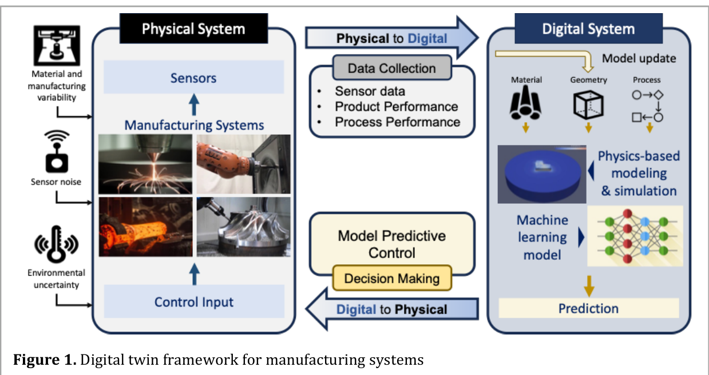
制造可信AI
18. 制造可信AI
现状
历史表明，人们对新技术的信任并非一蹴而就。工业自动化、航空自动驾驶仪以及自动驾驶汽车最初都面临着质疑，只有在证明了其可靠性、安全性，以及与人类监督和法规的有效整合之后，才逐渐获得广泛认可。制造业中的人工智能（AI）正面临类似的抉择：要想获得信任，AI系统不仅需要表现出色，还必须具备可解释性、可问责性，并能嵌入人类和制度背景之中。
AI正在快速变革制造业，推动了预测性健康管理与故障诊断[1]、预测性维护[2]、质量控制[3]、工艺优化[4]以及工业数字孪生[5]等领域的发展。这些技术提高了复杂多阶段制造环境中的吞吐量和良率，减少了停机时间，并提升了产品质量。然而，AI固有的不透明性和“黑箱”特性引发了关于透明度、可靠性和安全性的重大关切，尤其是在航空航天和医疗器械制造等高风险领域。这些关切可能导致抵触情绪或过度依赖，最终削弱AI的变革潜力。
对AI的信任不仅限于技术性能，还涉及文化和组织层面的要素。尽管具有强烈创新文化的企业可能更愿意采用AI，但其他企业则需要更强的可靠性和合规性保障。即使是高度精确的模型配合可解释AI，如果其解释无法有效表征系统行为，仍可能无法赢得信任。毕竟，如果人类无法理解或据此行动的AI“解释”，就不能称之为真正的解释。
信任的制度维度同样至关重要。由于AI系统本身无法承担法律责任，责任最终仍由人和组织承担。这使得可信性不仅对采用AI至关重要，还关系到责任划分、降低责任风险以及监管监督。在高后果制造领域，信任还取决于可保险性和可认证性：系统不仅需要在性能上可靠，还必须在法律和运营上值得信赖。
当前与未来的挑战
迈向制造可信AI的道路面临着相互关联的挑战，我们将其分为两类：计算与建模方面的挑战，以及人类与社会方面的挑战（见图1）。
1. 计算与建模方面的挑战
可解释性与可解释性： 现代AI系统通常以黑箱形式运作，深度架构创建的高度抽象的潜在表征难以被直接解释，这使得用户难以理解预测过程。大多数系统也缺乏阐述其输出背后推理过程的机制，从而限制了其可解释性。
数学基础： 与有限元法和数值积分等成熟的计算框架不同，许多现代AI模型——尤其是具有复杂架构和基础模型的AI——其理论分析相对有限[6,7]（例如在一致性、稳定性和收敛性方面）。这种理论差距意味着系统的部署往往仅基于经验性能，难以推广到未见过和数据稀缺的场景，难以理解意外行为，也难以进行系统性改进。
验证、确认与不确定性量化（VVUQ）： 尽管在噪声数据、稀疏数据以及可能存在模型误设假设的条件下运行，AI系统通常只提供预测结果而不附带有意义的置信度度量。这种缺乏原则性的不确定性量化（UQ）可能导致过度自信的预测——引发意外风险和失效——或过度保守的预测，从而造成不必要的安全裕度和资源浪费。稳健的部署还需要在全面的VVUQ框架下进行形式化验证（确立数学正确性和数值精度）和确认（确保对真实世界系统的准确表征）[8]。
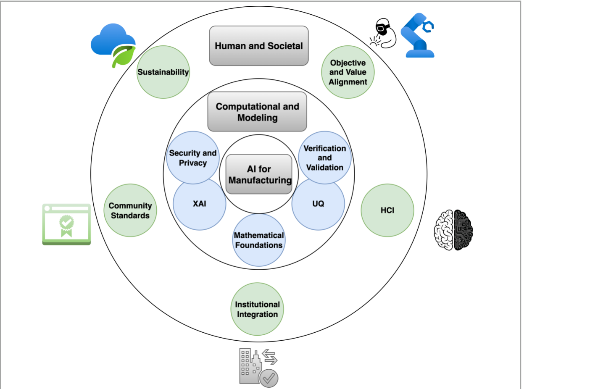
计算建模中的技术基础（内环）支撑着人类与社会因素（外环），这些因素对于制造业环境中AI的成功采用至关重要。
安全性与隐私： 随着AI系统对数字基础设施的依赖程度日益加深，其受到恶意行为者对抗性攻击的脆弱性也不断增加。集中式数据存储库、云服务和互联设备面临着数据投毒、模型逆向和数据泄露等威胁[9]，这些威胁可能导致性能下降、敏感信息泄露以及信任受损。
生成式AI： 大型语言模型（LLM）和智能体系统的出现引入了新的关切，包括幻觉输出、不可预测行为以及难以追溯的推理路径。随着此类系统被部署于敏感的制造环节——工艺规划、设计、维护和运营——不仅理解它们能做什么变得越来越重要，理解它们何时、何地以及为何失效同样至关重要。
2. 人类与社会方面的挑战
人机交互（HCI）： 信任需要针对用户的角色、背景和决策情境，有效传达预测、不确定性解释和说明[10]。例如，现场操作员需要直观的可视化呈现，而管理者则需要与战略绩效指标相关的汇总摘要。信任也随时间演变，要求系统支持迭代交互、反馈和适应，以应对用户和制造环境的变化。
组织整合： AI必须促进包括运营、工程和业务战略在内的不同团队之间的有效沟通。解释必须既具有角色特异性，又能在不同职能之间转化，通常需要专门的多智能体系统而非孤立的模型。AI的采用还必须在遵守公平、公正和非歧视原则的同时，应对组织文化，特别是在劳资关系紧张和对工作岗位流失的担忧的情况下。此外，AI与遗留系统及领域专业知识成功整合对于保存宝贵的人类知识和直觉至关重要。
目标与价值错位： AI模型通常优化狭义的数学损失函数，而这些函数可能无法反映真实世界的优先级、伦理标准或用户意图。在制造业中，这可能导致新的失效模式或忽略对利益相关者重要的长期权衡。“所有模型都是错误的”这一说法在AI时代获得了新的意义，当模型与新兴领域现实错位时，这种错误可能悄无声息地以灾难性方式显现。
可持续性： 训练和部署大型模型不断增长的能源需求给电力基础设施带来了压力。高计算成本也阻碍了工业界的采用，特别是对较小的制造商而言。如果没有能在节能算法和基础设施方面的创新，AI的环境足迹可能成为阻碍负责任长期采用的障碍。
科学技术进展以应对挑战
我们将制造可信AI的最新进展按上述挑战类别进行组织：计算与建模方面的进展，以及人类与社会方面的进展。
1. 计算与建模方面的进展
可解释AI（XAI）： 事后解释方法如Shapley值[11]、反事实解释[12]和显著性归因[13]持续推动着为可解释模型输出提供解释的进展。此外，因果建模[14]和反事实推理的发展为因果关系提供了稳健的洞察，并支持对制造决策至关重要的“如果”情景分析。
数学基础： 研究人员日益深入研究AI模型的解析特性，包括复杂的训练动力学如相变、双重下降和grokking现象[6,15]。将AI与经典数值分析和科学计算相融合的努力对于将AI整合到制造计算基础设施中至关重要。物理信息AI和混合建模方法，如神经算子[16]和物理信息神经网络（PINNs）[17]，将数据驱动学习与领域特定的物理定律相结合，通过基于约束的学习和在训练范围之外改进外推来增强信任。
先进的不确定性量化： 不确定性量化提供了描述和交流认知不确定性（epistemic uncertainty）和随机不确定性（aleatoric uncertainty）的框架[18]。贝叶斯方法为表示认知不确定性（由于知识有限而导致模型不知道的内容）提供了原则性框架，特别有利于在同化稀疏、噪声和间接观测数据时更新不确定性估计。基于集成的方法和非贝叶斯方法能有效捕捉随机不确定性（固有变异性或随机性），这在制造过程通常是随机的环境中至关重要。这些方法共同为决策支持提供了不仅有AI模型预测，还有其置信水平。
AI生命周期监控： 检测分布漂移、概念漂移和异常的技术使模型降级的实时感知成为可能[19]。这些能力对于管理AI模型的完整生命周期至关重要，使模型能够根据不断变化的真实世界条件持续得到验证、更新或退役。
2. 人类与社会方面的进展
以人为中心的设计： 研究越来越强调用户自适应和交互式解释，而非静态输出。现代解释界面支持基于对话的细化，用户可以在其中提出后续问题并将解释导向他们认为有意义的方面[10]。这种方法支持信任校准，帮助用户建立适当的心理模型，以判断何时依赖AI、何时质疑AI。
人机协作： 人机协作[20]的进展专注于AI辅助而非替代人类决策者的场景，例如配有自主系统和人工操作员的工厂车间。这些方向将使人类专业知识与AI能力之间的协调更加顺畅和安全。
标准与社区基础设施： 共享标准、法规和社区基础设施的建设势头日益增强，包括带有标签结果、元数据和不确定性的基准数据集；评估性能以及可解释性和鲁棒性的标准化指标；第三方认证和确认框架；以及促进透明度和可重复性的开源平台和文档标准。
可持续AI开发： 节能AI进展包括模型压缩、硬件感知训练和碳意识部署，旨在减少开发和运营的资源需求。随着部署模型的规模和数量持续增长，这些方法变得越来越重要，确保AI的采用在环境上保持负责任。
结语
可信AI是下一代制造的基本要求。随着AI系统变得越来越强大和普及，其不透明性、错位和失效的风险也随着其潜在收益而一同增长。应对这些挑战需要在计算与建模以及人类与社会基础方面取得协调进展。
AI的成熟过程与传统工程学科通过严格理论、可验证实践和赢得社区信任的发展历程相似。实现这一愿景需要数学家、计算机科学家、工程师、社会科学家、领域专家和最终用户的共同努力。成功的实现将使制造业中的AI系统不仅强大，而且可理解、可靠并值得信赖。
RAMS与AI/ML集成
19. 智能制造中的依赖性实现：RAMS与AI/ML集成
故障预测与健康管理（PHM）主要关注物理退化与失效模式[1]。这些方法侧重于通过结构化的维护计划与统计分析来最大化设备运行时间并降低风险。然而，制造系统的性质正在发生变化。信息物理系统（CPS）、工业物联网（IIoT）以及嵌入式人工智能（AI）的兴起，正将工业环境转变为智能化的互联生态系统[2]。在此背景下，资产不再是无联系的机械部件，而是动态的、软件集成的实体——实时运行、与用户和其他机器交互，并持续适应情境与环境的变化。为应对这一新格局的需求，我们提出以依赖性为中心的资产管理（DCAM）——一个前瞻性框架，对RAMS范式进行扩展与演化[3]。DCAM将传统可靠性工程与系统级依赖性科学及AI保障方法相结合，以应对数字溯源性、信息物理韧性及生命周期适应性等现代挑战。DCAM倡导一种全生命周期导向的依赖性方法，将可靠性思维嵌入从设计到运营、演化与更新的最早阶段。它借助数字技术——包括机器学习、数字孪生及边缘/云架构——来支持预测诊断、自适应维护及情境感知决策。通过将关注点从平均故障间隔时间（MTBF）等静态可靠性指标转向系统韧性及AI模型可信度的动态指标，DCAM使技术性能与透明度、可持续性及运营完整性等更广泛目标保持一致。它使制造商不仅能够应对机械故障，还能应对AI驱动自动化与分布式智能所带来的风险与不确定性。随着制造系统变得越来越复杂和自主化，RAMS必须相应地演进。DCAM在传统可靠性原则与面向未来的依赖性策略之间架起桥梁——将物理、数字与组织维度统一到一个面向智能制造的框架中。在提供基础的同时，表1突出展示了资产管理范式如何从以可靠性为中心及以软件驱动的方法演化至DCAM所体现的集成化、AI赋能的视角，从而应对智能制造中信息物理系统的复杂性及生命周期可持续性。
当前与未来挑战
人工智能（AI）与机器学习（ML）融入制造系统，推动了一场从反应性维护向预测诊断与自主决策的转变[4]。这一转型虽带来显著收益，但也引入了新的复杂性，对可靠性、可用性、可维修性及安全性（RAMS）的传统方法构成挑战[5]。一个关键挑战在于传统可靠性工程与更广泛系统级依赖性之间的割裂。现有的RAMS工具（如故障模式与效应分析（FMEA）及以可靠性为中心的维护（RCM））仍主要聚焦于硬件，往往忽视了现代工业系统所涉及的网络、数字及情境要素。相比之下，来自软件领域的依赖性框架强调容错性、鲁棒性及完整性等属性——但通常缺乏与物理退化模型或生命周期资产管理的整合[6]。这种割裂阻碍了统一策略的发展，难以应对AI赋能制造基础设施的混合性质。第二个挑战源于AI/ML驱动诊断与决策系统中生命周期保障与溯源性的缺失。随着AI模型日益嵌入运营流程，其输出必须具备可解释性、可审计性，并对现实世界的不确定性具有鲁棒性。然而，当前实践往往缺乏在不同部署场景、数据分布或运营情境下评估AI可靠性的机制[7]。这引发了一个双重问题：AI必须为系统依赖性做出贡献，同时AI本身的行为也必须是可靠的。为此，需要持续验证流程、运行时监控、应急机制以及专为安全关键环境中的AI模型量身定制的保障框架。第三，物理组件与数字组件之间日益增长的相互依赖引入了新的脆弱性。边缘计算设备的故障、传感器数据的损坏或网络连接的丧失可能导致系统级联失效，并在更大范围内破坏可用性与安全性[8]。这些信息物理风险要求诊断模型和维护策略具备情境感知能力、自适应性以及动态响应能力——这些都是传统RAMS方法难以有效提供的。组织与人的因素同样构成重大障碍。采用AI驱动的RAMS不仅需要技术，还需要转型——包括 workforce技能提升、运营文化变革以及对数据驱动决策的信任[9]。对自动化的抵制或跨学科协作的缺乏可能导致转型延迟甚至失败，尤其是在遗留系统和实践仍占主导地位的行业中。最后，可持续性目标对RAMS思维提出了变革性压力。当今的制造系统不仅要在技术和经济性能上达标，还须评估其环境影响、资源效率及长期社会价值。这将RAMS的角色从故障规避扩展至生命周期管理——要求方法能够将环境和循环性指标与传统可靠性指标一并纳入考量[10]。这些挑战共同表明，需要新一代依赖性框架——将物理、数字与组织维度统一起来。以依赖性为中心的资产管理（DCAM）方法回应了这一需求，提供了一个将适应性、可解释性和可持续性嵌入下一代制造依赖性核心的整体基础。
应对挑战的科学与技术进展
克服智能制造时代传统RAMS框架的局限性需要新的科学和技术方法——这些方法能够应对信息物理系统、自主运营及数据驱动决策环境的复杂性[11]。以依赖性为中心的资产管理（DCAM）框架通过将生命周期思维、人工智能（AI）与系统级韧性统一为现代制造的凝聚策略，提供了一条前进的路径。
图1
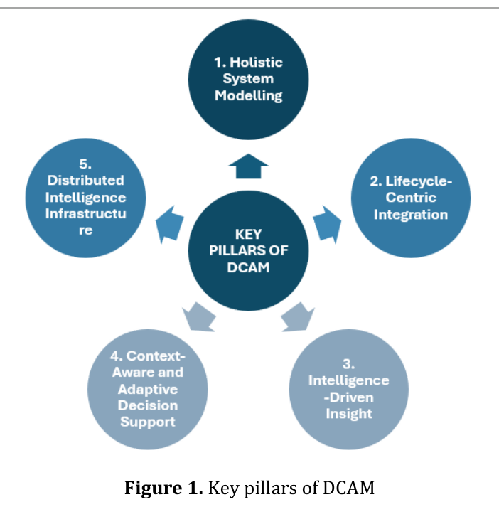
展示了DCAM框架的五个基础支柱，它们共同支持资产整个生命周期中的AI驱动依赖性。一个基础性进展在于将非传统AI与机器学习（ML）方法应用于预测诊断、异常检测及剩余使用寿命（RUL）估算。这些技术实现了对资产的持续监控、性能退化的早期检测以及维护调度的数据驱动优化。先进学习技术——如强化学习和联邦学习——促进了分布式工厂系统中的局部适应与去中心化智能，特别是在实时响应性和数据隐私至关重要的场景中[12]。第二个技术支柱是数字孪生的日益广泛应用——即物理资产和流程的虚拟表示。数字孪生支持故障模式仿真、控制策略评估以及在不同运行条件下系统韧性的主动评估[13]。当与实时传感器数据同步时，它们支持预测分析、基于场景的干预规划及长期生命周期优化。第三个关键进展是RAMS、故障预测与健康管理（PHM）及老化管理的融合。每一学科在不同资产生命周期阶段都有独特贡献。RAMS提供群体层面可靠性的统计指标（如MTBF），PHM专注于实时监控和个体化RUL估算，老化管理通过寿命终止决策确保可持续运营。AI/ML技术在整合这些领域中发挥核心作用，实现了动态风险建模、情境感知调度及面向资产的决策支持[14]。这种融合得到了混合AI（如物理信息机器学习）和不确定性感知模型等新兴AI范式的进一步支持，这些范式增强了可解释性和预测鲁棒性[15]。这些方法与可信AI和数字孪生生系统的进展密切相关，强化了系统在层面协调RAMS与AI保障策略的日益增长的需求。为在制造环境中实现安全、透明和可解释的AI，相关进展正在推进AI保障。模型验证、运行时监控及可解释性框架等技术正在获得关注，特别是在安全关键应用中[16]。其他工具——包括故障注入、对抗鲁棒性测试及不确定性量化——正越来越多地用于在运营压力和数据分布变化下验证ML模型。边缘与云计算基础设施的进步也为规模化分布式智能奠定了基础。边缘设备提供低延迟监控和本地化决策，而云平台则支持 fleet级分析、基准测试和优化[17]。两者共同构建了一个灵活架构，用于响应式、全面的RAMS决策支持。情境感知与自适应决策的新兴能力提供了又一次飞跃。这些方法允许根据实时情境变量——如资产关键性、使用强度、环境条件及网络安全态势——来定制维护和安全策略。其结果是能够在不同运营场景下实现更灵活、风险知情型资产管理[18]。最后，AI与可持续性分析的整合引入了多维度的依赖性视角。未来的系统将越来越多地依赖综合性能指标，将环境和社会因素——如能源消耗、碳足迹及材料循环性——与传统可靠性指标一并纳入考量。然而，尽管这些技术极大增强了现代RAMS的能力，它们也引入了一个并行的紧迫需求：确保AI本身的可靠性。当AI嵌入决策系统时，其行为必须在现实条件下保持可信、鲁棒且可解释。AI模型必须持续验证，监控数据漂移和性能退化，并配备应急策略以确保运营可靠性。在这一双重角色中——既是推动者又是可靠性对象——AI需要严格的生命周期保障。其可信度对于技术性能、安全、合规以及用户对未来制造系统的信任都至关重要。
结语
智能制造正在进入一个新阶段——由物理、数字与认知系统的融合来定义。RAMS原则继续作为可靠运营的基础，但它们必须演进以应对由AI驱动自动化、信息物理互联性及可持续性要求所塑造的现代工业环境的复杂性。传统的可靠性工具已不足以确保这些智能、动态生态系统的信任、适应性和长期价值。以依赖性为中心的资产管理（DCAM）框架代表了RAMS思维的一次及时且必要的演进。通过将生命周期意识、系统级依赖性及AI保障嵌入资产管理策略，DCAM为管理日益自主化、数据驱动和软件定义的制造系统提供了一种整体性、前瞻性的方法。本章概述了现有RAMS实践在面临新兴技术和组织挑战时的局限性。还重点介绍了科学和技术进展——从混合AI模型和数字孪生到边缘云智能和情境感知维护——这些进展使得新一代依赖性解决方案成为可能。在这些进展的核心是AI，它扮演着双重角色：既是预测和自适应能力的强大推动者，也是新可靠性与安全问题的来源。管理这种双重性需要强有力的AI溯源、情境感知及以人为本整合的机制。随着制造系统持续扩大复杂性和自主性，DCAM提供了一个战略框架，确保智能工厂不仅具有生产性和高效性，而且在整个生命周期中也是可靠的、透明的和可持续的。它弥合了传统可靠性工程与AI集成工业系统不断发展的需求之间的差距——使制造商能够设计韧性、充满信心地运营并负责任地创新。最终，DCAM为制造依赖性的未来提供了一条实践性和适应性强的路线图——植根于工程严谨性，以AI为丰富手段，并以生命周期管理和系统可信性原则为指导。
致谢
本研究部分得到了中国国家自然科学基金（NSFC）的资助，项目编号为72471060。
参考文献
[1] R. Wang, J. Xu, W. Zhang, J. Gao, Y. Li, and F. Chen, "Reliability analysis of complex electromechanical systems: State of the art, challenges, and prospects," Reliability Engineering & System Safety, vol. 38, no. 7, 2022.
[2] F. Qiu et al., "A Review on Integrating IoT, IIoT, and Industry 4.0: A Pathway to Smart Manufacturing and Digital Transformation," IET Information Security, vol. 2025, no. 1, p. 9275962, 2025.
[3] J. Lin, "Dependability-Centered Asset Management (DCAM): Toward Trustworthy and Sustainable Systems in the CPS Era," IEEE Reliability Magazine, vol. online, pp. 1–7, 2025.
[4] R. Siraskar, S. Kumar, S. Patil, A. Bongale, and K. Kotecha, "Reinforcement learning for predictive maintenance: A systematic technical review," Journal of Intelligent Manufacturing, vol. 56, no. 11. Springer Netherlands, 2023.
[5] H. A. Fernandez-Bobadilla and U. Martin, "Modern Tendencies in Vehicle-Based Condition Monitoring of the Railway Track," IEEE Transactions on Instrumentation and Measurement, vol. 72, pp. 1–44, 2023.
[6] S. M. Hoseyni, F. Di Maio, and E. Zio, "Condition-based probabilistic safety assessment for maintenance decision making regarding a nuclear power plant steam generator undergoing multiple degradation mechanisms," Reliability Engineering & System Safety, vol. 191, p. 106583, 2019.
[7] C. Glikson and A. W. Woolley, "Human trust in artificial intelligence: Review of empirical research," Academy of Management Annals, vol. 14, no. 2, pp. 627–660, 2020.
[8] A. H. Eyeleko and T. Feng, "A Critical Overview of Industrial Internet of Things Security and Privacy Issues Using a Layer-Based Hacking Scenario," IEEE Internet of Things Journal, vol. 10, no. 24, pp. 21917–21941, 2023.
[9] M. A. Muhammed Nor et al., "Role of Human Factor for the Implementation of the 'Vision Zero' Concept in Railway Transport: An Overview," in AIP Conference Proceedings, 2024, vol. 2998, no. 1, p. 030005.
[10] G. W. Vogl, B. A. Weiss, and M. Helu, "A review of diagnostic and prognostic capabilities and best practices for manufacturing," Journal of Intelligent Manufacturing, vol. 30, no. 1, pp. 79–95, 2019.
[11] J. Majumdar, R. S. Mohril, B. K. Lad, and M. S. Kulkarni, "Logistics, Reliability, Availability, Maintainability and Safety (L-RAMS) for Intelligent, Interconnected, Digital and Distributed (I2D2) Empowered Futuristic Military Systems," IEEE Transactions on Engineering Management, vol. 71, pp. 5869–5884, 2024.
[12] F. Su, C. Liu, and H. G. Stratigopoulos, "Testability and Dependability of AI Hardware: Survey, Trends, Challenges, and Perspectives," IEEE Design & Test, vol. 40, no. 2, pp. 8–58, 2023.
[13] E. Brusa, "Digital Twin: Toward the Integration Between System Design and RAMS Assessment Through the Model-Based Systems Engineering," IEEE Systems Journal, vol. 15, no. 3, pp. 3549–3560, 2021.
[14] M. Payette and G. Abdul-Nour, "Machine Learning Applications for Reliability Engineering: A Review," Sustainability, vol. 15, no. 7, pp. 1–22, 2023.
[15] I. Hazra et al., "Prognostics and Health Management of Unmanned Surface Vessels: Past, Present, and Future," Journal of Computing and Information Science in Engineering, vol. 24, no. 8, p. 080801, 2024.
[16] J. Perez-Cerrolaza et al., "Artificial Intelligence for Safety-Critical Systems in Industrial and Transportation Domains: A Survey," ACM Computing Surveys, vol. 56, no. 7, pp. 1–40, 2024.
[17] M. Molęda, B. Małysiak-Mrozek, W. Ding, V. Sunderam, and D. Mrozek, "From Corrective to Predictive Maintenance—A Review of Maintenance Approaches for the Power Industry," Sensors, vol. 23, no. 13, p. 5970, 2023.
[18] M. Rodríguez-Hernández, A. Crespo-Márquez, A. Sánchez-Herguedas, and V. González-Prida, "Digitalization as an Enabler in Railway Maintenance: A Review from 'The International Union of Railways Asset Management Framework' Perspective," Infrastructures, vol. 10, no. 4, p. 96, 2025.
未来制造中的数据驱动计量
20. 未来制造中的数据驱动计量
（2）虚拟计量用于估算那些无法在现场直接测量的零件质量特征或工艺参数。这一过程借助数字孪生和模型来实现——模型整合可用的工艺数据和计量数据，以估算缺失的参数[5]。
（3）数据管理系统收集所有可用的计量信息，用于追踪零件质量、提供测量值和系统行为的实时不确定度估计，并提出改进测量性能的建议，例如当虚拟计量不确定度过高时安排额外的测量周期，或标记不可靠的传感器进行维护[6]。
上述三个领域通过基于人工智能（AI）的模型进行统一，以帮助解析和处理所采集的海量数据。半导体行业或许为数据驱动计量（DCM）的未来潜力提供了最佳视角。工艺数据被用于生成实时缺陷估计，并筛选晶圆以进行进一步检测[6]。随后，机器学习（ML）工具对工艺数据进行收集和分析，以帮助操作人员理解和改进工艺。然而，向智能制造的转型并非均匀推进：许多行业落后于时代，尚未做好实施DCM的准备[7]。要使DCM得到广泛应用并赢得信任，仍有许多关键技术缺口亟需填补。
当前与未来的挑战
计量对于生产至关重要——它是工艺控制和质量控制的关键，新技术必须经过充分验证，才能提高制造商对数据驱动计量的信心并推动其应用。以下挑战目前制约着DCM的可行性：
（1）集成计量
集成计量和原位测量难以实施。在工艺过程中进行的测量不能干扰制造流程，但与此同时，由于测量发生在相同的工作区域内，测量结果可能受到工艺过程的影响[1]，并可能遭遇各种不可控的变化[8]。测量还必须跟上制造工艺的节奏，这进一步限制了哪些测量可以在现场进行。因此，在一项调查中仅有38%的企业进行了原位测量[1]。亟需新的发展来开发能够在各种环境条件下以可接受的节奏提供低不确定度结果的传感器。
（2）虚拟计量
人工操作员提供专业知识并保持对系统健康状况的可见性至关重要，但随着传感器数据流和自动化决策数量的增加，这变得日益困难。因此，必须开发新方法帮助用户快速消化、评估和处理大量工艺数据[9]。一个可能的发展路径是利用AI进行自动化、虚拟计量和计量数据的动态采样。实际虚拟计量面临的挑战包括：利用历史数据创建有效的初始模型，以及使用在线数据进行模型的自我学习更新[10]。
（3）带不确定度量化的数据管理
制造业的未来取决于安全、可检索、可扩展和标准化的数据架构——来自生产各层面的数字化信息将使实时调整成为可能，例如使用语言无关的标识符和标准化的机器可读SI格式[11]。此外，数据系统必须抵御网络攻击，因为互联性的提高已导致网络攻击数量的大幅增加[12]。在整个产品生命周期中应用AI驱动洞见所面临的挑战包括：大数据的整理、AI驱动结果的解释和信任[13]、AI模型的自动更新、隐私保护方法，以及对类别不平衡[14]和可变数据质量[15]的鲁棒性。AI技术通常难以泛化部署，因为大多数AI/ML方法需要大量训练数据，且在不同场景中可能无法按预期工作[13]。为赢得用户信心因此必须为AI模型提供可量化的不确定度估计[13]。
应对挑战的科技进步
图1
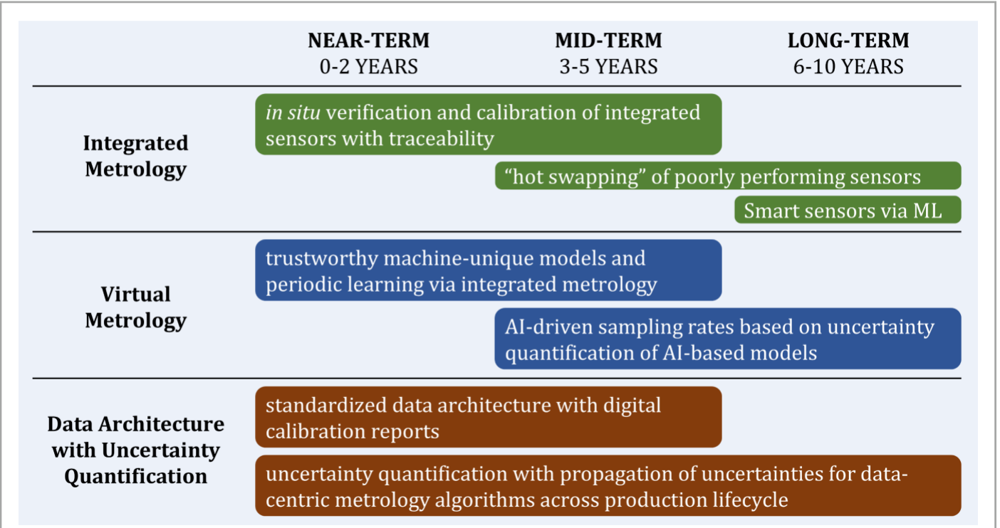
展示了一条基于DCM三大支柱的数据驱动计量发展路线图：（1）集成计量、（2）虚拟计量、（3）带不确定度量化的数据管理：
（1）集成计量
由于无法轻易拆卸的集成传感器的溯源性难以实现，应开发新方法用于原位验证和校准，并可追溯至国际标准。为便于对性能不佳的传感器进行“热插拔”，仪器可以向集中式测量管理系统传达实时性能估计，以触发验证周期并标记待维修或更换的传感器。智能传感器——即带有定制ML推理功能的传感器——也可集成到芯片中，用于芯片健康的实时测量[16]。溯源性和校准方法可通过校准工件、自校准方法和计量专用数据的标准化处理加以实现[17]，例如用于机器人辅助计量及全自动化数据处理。
（2）虚拟计量
数字孪生内的数据采样率应以AI驱动的智能为基础，测量“适量”数据，在保持产品质量的同时最大限度地降低数据采集和存储成本。例如，当实时AI估计的不确定度超过阈值时，可以触发一次测量以获取一个数据点，在降低该时刻不确定度的同时添加额外数据用于模型更新。DCM利用AI的模式学习特性与计量的可信性相结合，创建可信的、同时具有机器独特性的工艺控制模型[18]。定期将实时可溯源测量与模型估计进行对比，将有助于量化AI模型的不确定度。此外，初始模型的挑战可以通过迁移学习[10]得到帮助——最初严重依赖集成计量，随着机器特异性模型随时间学习而逐渐减轻。
（3）带不确定度量化的数据管理
需要为所有制造数据建立普遍适用的标准化数据架构，以验证数据质量和溯源性，例如基于OPC-UA并通过数字校准证书实现校准报告的数字化[19]。应开发并在国际上标准化AI算法总输出不确定度的量化方法，包括学习模型的固有不确定度和输入数据的不确定度，类似于GUM[20]的方法。不确定度应被估计出来，以支持动态采样[6]和不确定度的传播，例如使用基于Shapley加性解释（SHAP）的可解释AI框架[15]。具有低计算延迟的全自动化数据流处理是DCM面临的另一重大挑战，需要物联网（IoT）硬件和软硬件优化方面的创新。
高度互联复杂制造系统的非传统机器学习
21. 高度互联复杂制造系统的非传统机器学习
Dai-Yan Ji¹, Takanobu Minami¹, Ruoxin Wang¹, Jay Lee¹
¹马里兰大学机械工程系工业人工智能中心，马里兰州大学公园，邮编 20742，美国
通讯作者邮箱：leejay@umd.edu
现状
故障预测与健康管理（PHM）及其在工业人工智能中的集成已从部件级监测发展至系统级智能[1]、[2]。在早期阶段，PHM依赖于可靠性工程和基于模型的分析，随后逐步演化为融合数据驱动方法与专家知识的混合人工智能框架[3]、[4]。这些进展为预测性维护与监测带来了宝贵成果，然而高度互联复杂制造系统（HC-CMS）日益增长的规模与互联性持续挑战着传统机器学习（ML）方法。如今的工业系统已不再局限于单一部件或独立单元，而是成为基于设备群组的、分布式且跨工厂、供应链和运营域深度互联的系统[5]、[6]。此类系统产生海量传感器数据，且涉及必须协同管理的异构资产。如图1所示
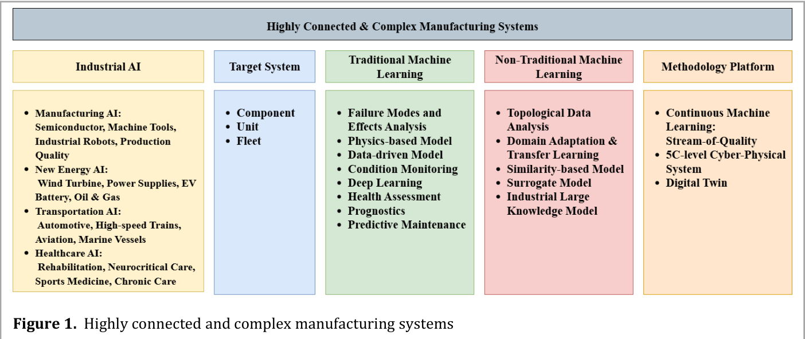
，HC-CMS将工业人工智能的多个领域相互连接，包括制造人工智能、新能源人工智能、交通人工智能和医疗人工智能，所有这些领域都共同需要韧性、适应性和智能决策能力。这种系统级复杂性凸显了PHM仍然至关重要的原因。在航空航天、能源、船舶和出行领域，确保正常运行时间、优化维护和延长生命周期仍是可靠性的核心[7]、[8]。随着系统扩展至设备群组和多工厂网络，可扩展PHM的重要性持续增长。进一步的发展有望带来显著收益：提高安全性、减少停机时间、提升效率以及更可靠的决策支持[9]。非传统机器学习日益成为实现这些收益的核心。与其狭隘地关注算法精度，该领域现在强调韧性、可解释性和企业级集成，并得到持续机器学习——质量流（SoQ）、5C级信息物理系统和数字孪生框架等方法论平台的支持。具有代表性的非传统ML方法——用于结构洞察的拓扑数据分析（TDA）、用于设备群组广泛泛化的域适应和迁移学习、用于可解释推理的相似性模型、用于高效优化的代理模型，以及用于知识集成的工业大知识模型（ILKM）——展示了PHM在HC-CMS中如何被重塑和扩展。这些范式表明，PHM不仅仍然重要，而且在工业人工智能持续演进的进程中正占据更有影响力的地位[10]。
当前与未来挑战
尽管工业人工智能取得进展，但在HC-CMS中扩展PHM仍面临巨大障碍。跨域变异性仍是一个关键障碍：在一条生产线上训练的模型在部署到不同工厂或设备群组时，往往会因操作条件下的域迁移而性能下降。这一问题在风能、出行电池和船舶发动机等行业中被进一步放大，这些行业的运营环境变化迅速，传感器分布也不一致[11]。标签稀缺和数据不平衡问题同样持续存在，因为故障事件稀少、获取成本高昂且往往缺乏记录，限制了监督式深度学习方法的适用性[12]。系统互联性同样是不可忽视的挑战。可重构和可持续生产范式引入了非线性耦合、动态瓶颈转移和复杂调度动力学，这些都无法简化为孤立设备分析。可解释性进一步增加了采纳难度：从业者通常拒绝没有透明推理过程的黑盒模型。航空发动机预测研究强调，聚合特征重要性和可解释的降维方法在建立对PHM预测信任方面发挥着重要作用[8]。混合模型本身也存在局限性。数据驱动框架在有丰富信号时表现出色，但在分布漂移条件下则表现艰难。基于物理的模型是透明的，但需要详细的故障物理知识，而这些知识并非总是可获取的。混合模型试图结合这些优势，但参数校准和模型更新仍然复杂[13]。从组织角度来看，知识碎片化是一个系统性问题。PHM工作往往依赖于手册、报告和个人经验中的专业知识，使得向PHM的一致集成变得困难。智能工厂环境增加了更多约束，包括网络安全、CPS/IoT集成和异构大数据的治理。最近的综述强调，算法进展与实际实施之间持续存在的差距继续阻碍着PHM的采纳。基于上述描述，这些问题凸显了嵌入韧性、适应性和可解释性的非传统ML技术的紧迫性。如果不解决数据稀缺、跨域适应性和可解释性问题，PHM系统将仍然脆弱，难以在企业范围内提供价值。
应对挑战的科学与技术进展
应对这些挑战需要一系列集中的科学与技术进展。在此基础上，TDA作为一种流式兼容工具获得了突出地位。基于持久性的描述符能够检测生产数据中的细微分布变化，即使在噪声和高维条件下也能提供稳健的健康指标[14]。TDA对于HC-CMS中的长期监测特别有用，因为它不仅使异常检测成为可能，还能对操作状态进行聚类，并使系统转换的识别变得更加容易。与此同时，域适应和迁移学习已通过集成、元学习和持续策略得到扩展，使模型能够适应设备群组（如风电场和船舶系统）中不断变化的条件[15]。这些方法不仅降低了再训练成本，还在目标标注数据稀缺时支持快速部署，确保在多样的工业场景中获得更好的泛化能力。在此基础上，相似性模型作为一种关键的非传统方法应运而生。通过利用案例库和距离度量，相似性方法提供透明推理，使从业者能够针对历史先例验证可解释的剩余使用寿命（RUL）估计和诊断[16]。通过检索增强嵌入的丰富化，这些模型提高了效率和可解释性，支持复杂操作环境中的决策。此外，相似性推理促进跨资产的知识复用，使工程师能够用具体的历史参考来论证决策。代理模型的使用快速增长。从能源系统到紧凑型镜头组件，神经算子、贝叶斯代理模型和可微分模拟器正越来越多地用于工业设计和优化，以提供带有量化不确定性的实时决策支持[17]。代理模型不仅加快了计算成本高昂的模拟速度，还提供了一种将物理信息约束与机器学习模型相结合的方法，从而产生在可解释性和准确性之间保持平衡的混合解决方案。最具变革性的发展是ILKM框架。通过构建结构化知识库，将其与工业工作流程对齐，并将其与指令调优的大模型耦合，ILKM能够在智能工厂中实现检索增强的、可审计的决策[18]。这种方法使PHM系统能够将人类专业知识、领域知识和大尺度分析集成在统一平台上，直接解决专业知识碎片化的问题。ILKM还为跨域推理创造了机会，将维护记录、质量数据和运营最佳实践链接成一个集成的知识生态系统。最近关于工业人工智能应用的综述一致强调可解释人工智能、不确定性量化和企业级集成的重要性[19]，凸显了非传统ML的关键作用。最近在基础模型方面的进展进一步将这些非传统方法扩展至系统级工业智能。在SoQ范式下（图2
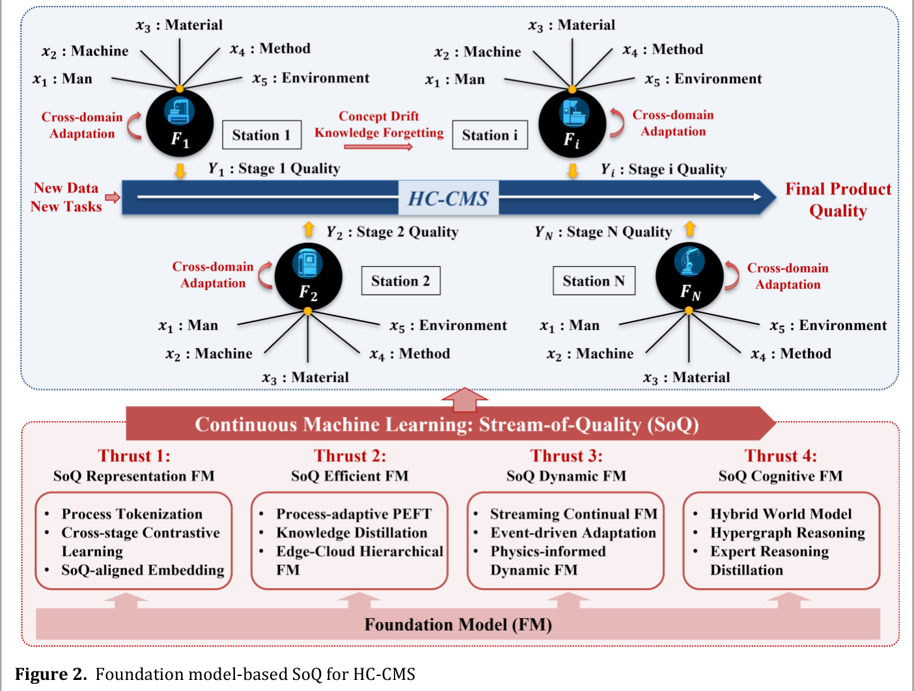
），基于基础模型的SoQ可以构建为四个研究方向：表示、高效适应、动态学习和认知推理。这一新兴框架支持跨阶段质量传播的持续建模、分布式环境中的可扩展部署、对演化过程的实时适应，以及生命周期感知的知识驱动推理。这些发展标志着从以数据为中心的预测性维护向综合工业认知的转变。
结论
PHM研究的方向显示出从以算法为中心的探究向HC-CMS系统级智能更广泛重视的明确转变。传统ML方法虽然在受控环境中取得成功，但在分布漂移、数据稀缺和有限可解释性方面仍存在困难。非传统ML技术——用于稳健结构发现的TDA、用于泛化的域适应、用于透明性的相似性推理、用于成本效益优化的代理模型，以及用于企业级集成的ILKM——共同为PHM的下一阶段以及工业人工智能应用的发展提供了一条连贯的路线图。未来工业人工智能中的PHM必须强调适应性、可解释性和可扩展性。为了将预测精度转化为可操作的智能，这些策略——如集成不同专业领域的ILKM框架和基于领域知识的非传统ML方法——将至关重要。更高的正常运行时间、更安全的操作、更低的维护成本和更稳健的生产生态系统是这些进展的预期优势。对该领域而言，主要挑战[20]不是追求算法新颖性，而是成功地将这些技术集成到能够产生持久影响的、企业级的、可审计的可靠工业系统中。
致谢
本研究由美国教育部通过改善中等后教育基金（FIPSE）资助，资助编号为 P116S230014。
参考文献
[1] D.-Y. Ji, H. Su, T. Minami, and J. Lee, "Introduction to Industrial Artificial Intelligence," Advances in Artificial Intelligence Applications in Industrial and Systems Engineering, pp. 1–18, 2025.
[2] J. Lee, J. Ni, J. Singh, B. Jiang, M. Azamfar, and J. Feng, "Intelligent maintenance systems and predictive manufacturing," Journal of Manufacturing Science and Engineering, vol. 142, no. 11, p. 110805, 2020.
[3] S. Ochella, M. Shafiee, and F. Dinmohammadi, "Artificial intelligence in prognostics and health management of engineering systems," Engineering Applications of Artificial Intelligence, vol. 108, p. 104552, 2022.
[4] K. T. Nguyen, K. Medjaher, and D. T. Tran, "A review of artificial intelligence methods for engineering prognostics and health management with implementation guidelines," Artificial Intelligence Review, vol. 56, no. 4, pp. 3659–3709, 2023.
[5] V. Atamuradov, K. Medjaher, P. Dersin, B. Lamoureux, and N. Zerhouni, "Prognostics and health management for maintenance practitioners-Review, implementation, and tools evaluation," International Journal of Prognostics and Health Management, vol. 8, no. 3, pp. 1–31, 2017.
[6] H. Gharib and G. Kovács, "A review of prognostic and health management (PHM) methods and limitations for marine diesel engines: new research directions," Machines, vol. 11, no. 7, p. 695, 2023.
[7] M. Yan, S. C. Hui, N. Jiang, and N. Li, "A review on data-driven prognostics and health management for wind turbine systems," Engineering Applications of Artificial Intelligence, vol. 159, p. 111484, 2025.
[8] Y. Alomari, M. Andó, and M. L. Baptista, "Advancing aircraft engine RUL predictions: an interpretable integrated approach of feature engineering and aggregated feature importance," Scientific Reports, vol. 13, no. 1, p. 13466, 2023.
[9] S. Han, F. Li, X. Han, and S. Zhang, "A novel feature engineering method for network anomaly detection," Computers and Electrical Engineering, vol. 127, p. 110627, 2025.
[10] C. Huang, S. Bu, H. H. Lee, C. H. Chan, S. W. Kong, and W. K. Yung, "Prognostics and health management for predictive maintenance: A review," Journal of Manufacturing Systems, vol. 75, pp. 78–101, 2024.
[11] P. Kumar, M. Tanveer, K. Park, I. Raouf, and H. S. Kim, "A Systematic Review of Prognostics and Health Management in Mobility Batteries," International Journal of Precision Engineering and Manufacturing-Green Technology, pp. 1–24, 2025.
[12] X. Lai, H. Shui, D. Ding, and J. Ni, "Data-driven dynamic bottleneck detection in complex manufacturing systems," Journal of Manufacturing Systems, vol. 60, pp. 662–675, 2021.
[13] P. Kundu, A. K. Darpe, and M. S. Kulkarni, "Development of data-driven, physics-based, and hybrid prognosis frameworks: a case study for gear remaining useful life prediction," Journal of Intelligent Manufacturing, pp. 1–21, 2024.
[14] J. Lee, D.-Y. Ji, and Y.-M. Hsu, "Novel topological machine learning methodology for stream-of-quality modeling in smart manufacturing," Manufacturing Letters, vol. 43, pp. 60–63, 2025.
[15] T. Minami, A. Suer, P. Kundu, S. Siahpour, and J. Lee, "Novel ensemble domain adaptation methodology for enhanced multi-class fault diagnosis of highly-connected fleet of assets," in PHM Society Asia-Pacific Conference, 2023.
[16] T. Minami, D.-Y. Ji, and J. Lee, "PHM for Spacecraft Propulsion Systems: Developing Resilient Models for Real-World Challenges," in PHM Society European Conference, 2024, pp. 7–7.
[17] W. Li et al., "A novel methodology for lens matching in compact lens module assembly," IEEE Transactions on Automation Science and Engineering, vol. 20, no. 2, pp. 741–750, 2022.
[18] Lee J and Su H, "A unified industrial large knowledge model framework in Industry 4.0 and smart manufacturing," Int. J. AI Mater. Des. 1 (2) 41–47, 2025.
[19] T. Xia, Y. Dong, L. Xiao, S. Du, E. Pan, and L. Xi, "Recent advances in prognostics and health management for advanced manufacturing paradigms," Reliability Engineering & System Safety, vol. 178, pp. 255–268, 2018.
[20] P. Kumar, I. Raouf, and H. S. Kim, "Review on prognostics and health management in smart factory: From conventional to deep learning perspectives," Engineering Applications of Artificial Intelligence, vol. 126, p. 107126, 2023.